| 精霊医は勇者の変態を癒せるのか!? | |
| 神秋昌史 | |
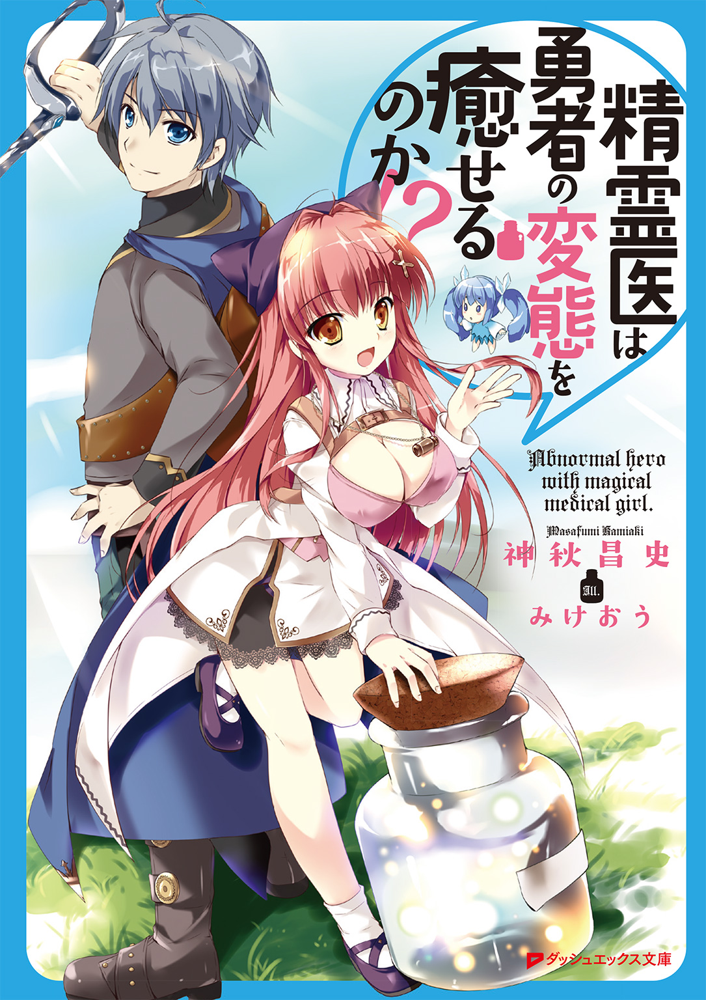
この本は縦書きでレイアウトされています。
また、ご覧になる機種により、表示の差が認められることがあります。
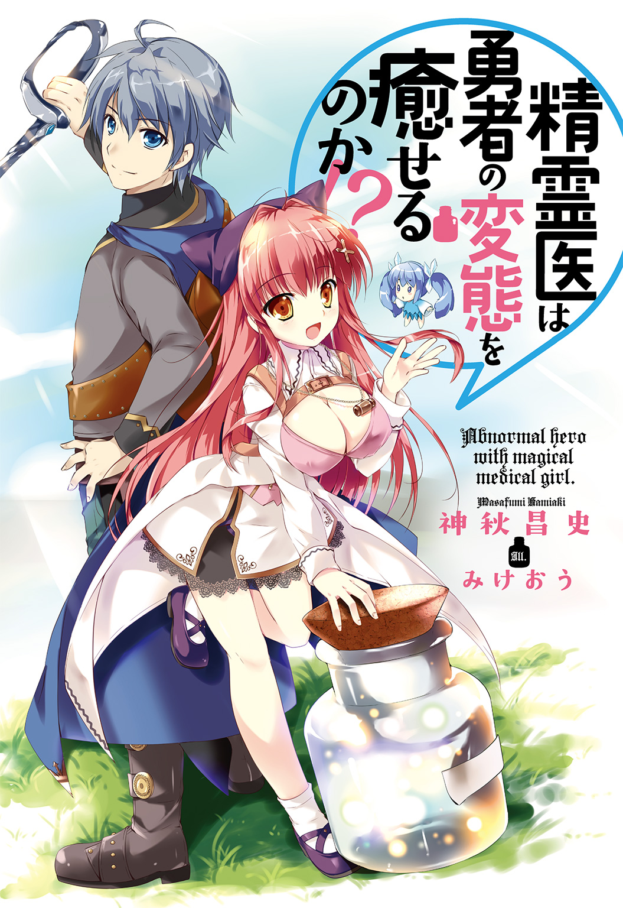
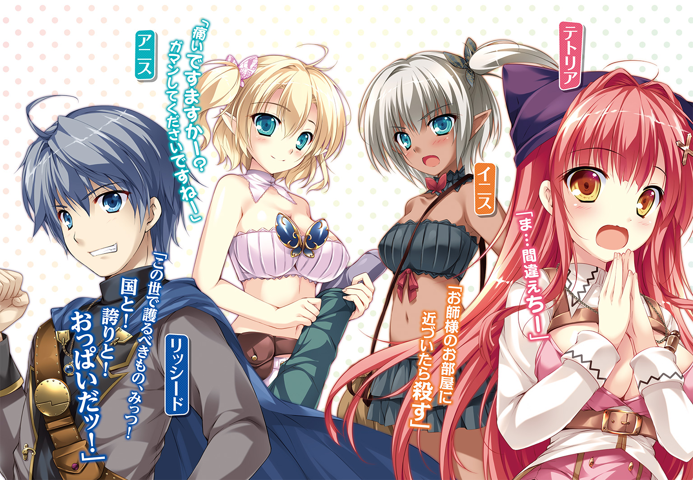
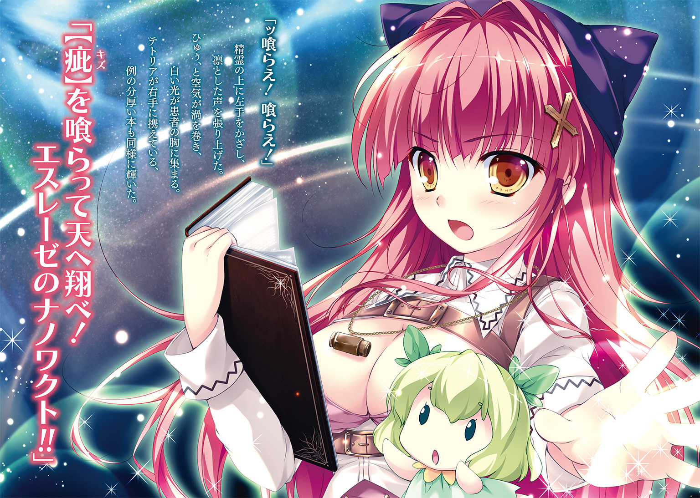
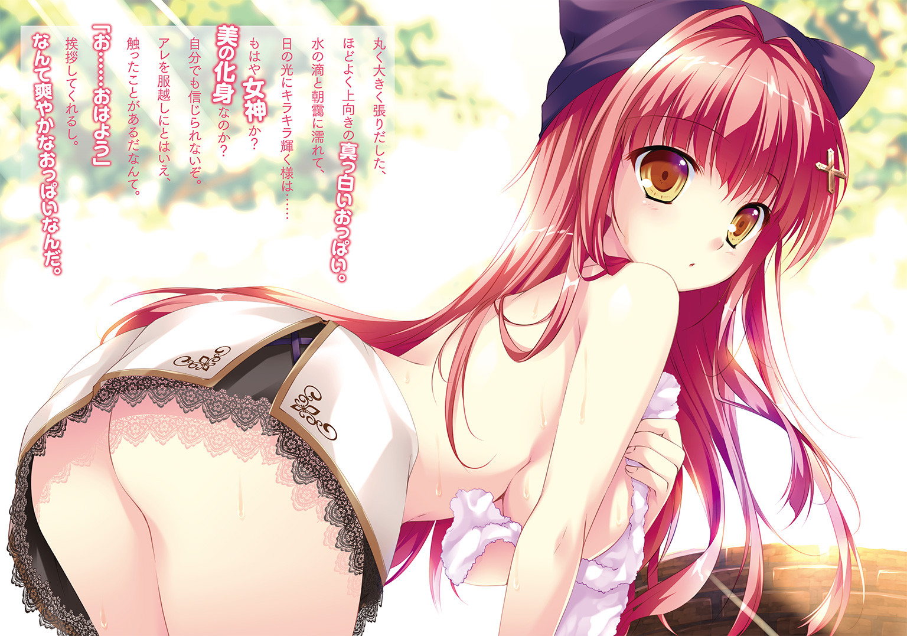
 ダッシュエックス文庫DIGITAL
ダッシュエックス文庫DIGITAL
精霊医は勇者の変態を癒せるのか!?
神秋昌史
【プロローグ 護るべきもの】
がんばれ、とか。負けるな、とか。立ち上がれ、とか。
死ぬな――とか。
そういう単純な言葉だったなら、いっそ失ったままでもよかったと思う。今の俺でも、簡単に思いつく。口にすることだって誰にでもできる。
でも、その人影がのこした言葉は、もっと具体的で――残念だけど、俺には思いつけない。
「いいか、リド」
リド。リッシード。その名ものこしてくれた。それは自分で思いつけなくてもムリないな。
この夢の中で聞く、大きな人影の、言葉。
にじんでぼやけた景色の中、両刃の剣を逆手に持った大男と思しきその影が、俺の名を呼ぶより百倍力をこめて伝える魂の波動。それこそが肝心。だからこそ、夢にまで見る。
でも、
「この世で護るべきものみっつ。国と！ 誇りと！ おっぱいだッ！」
「うんっ！」
うんじゃねえ。
うんじゃねえよ俺......いや、まぁな？ もう手遅れだけどな？ そこでそうやって頷いてしまうお前の成長した姿がこの俺だから、完全に手遅れではあるんだけど。せめて「えっ？」とか。疑問形を返せる人間だったら、もうちょいマシな人生送れてたんじゃないかなって。
「国と誇りとおっぱいだッ！」
「うんっ！」
「国と誇りとおっぱいだッ！」
「うんっ！」
「国と誇りとおっぱいだッ！」
延々とやりとりが繰り返される。まぁここしか覚えてないからな、しょうがない。こうなったら、あとはいつ目覚めてもいいんだ。きっと朝になっているだろう。
いつも見ている夢。さんざんな内容だ。本物のおっぱいは出てきてくれないし！
なによりも――ああ、
俺がこの夢を、
いい夢だと思っている、ってことが。いちばんどうしようもないんだろうな。
さんざんだ。
【第一章 勇者の変態】
この首都は、護るべきもので溢れている。
大陸一の大国、レクセンタル王国のなにもかもが集まってくる街。なんでもあるし、誰でもいる。いや、誰でもいるからなんでもある、って言うべきなのか？
大工がいる、船頭がいる、石切職人だっている。
だから建物が建つ、水路が整備される、石造りの広い道ができる。
朝もはよから市場を目当てに、人がわんさか押し合いへし合い。俺の自慢の青いマントが、見る影もなくしわっしわ。......いいけどね。道端に突っ立ってる俺も邪魔だし。
押しも押されぬ大都会。もちろん情報も集まってくるし、
「公報！ 公報だよー！」
逆に発信源にだってなる。ひときわ声の通る男が、道沿いの掲示板を貼りかえた。
「九日勇者が名誉剝奪！ あの勇者リッシードが、もう名誉剝奪だあ！」
ほう。
「北方領の小村の危機、たった一人で獅子奮迅！ 九日間を守り抜き、勇者の称号と聖剣を下賜された男が、同じく九日間!!」
そりゃまた。
「たった九日で、勇者の名を取り上げられちまったよ！ 詳しくは読んでくぅわあーっ!?」
掲示板に殺到した人の群れに、男の姿が呑みこまれた。ニュースひとつ報せるのも、こんな街じゃあ楽じゃない、と。大変だなぁ。
でもみんな、ゴシップがほしいだけだ。掲示板は見ても、周りは見ちゃいない。
名誉剝奪された当人が、ここに立ってるっていうのにな！
「いざとなると......けっこう、名残惜しいもんだな」
ため息ついでに呟いて、俺は逆に、市場の人々をじっと眺めた。
本当に、いろんな人がいる――本当に、いろんな護るべきものがある。
小さい護るべきもの。中くらいの護るべきもの。大きいおっぱい。どっちを向いても、それらが目に入る。ここはいい街だ。きれいでおしゃれで、薄着の女の子がたくさんいた。
でも、この腰の聖剣をお城に返したら、俺はこの街を出る......。てゆーか。
「めんどいなー......」
王城？ 行くの？ 剣返すためだけに？ 超めんどくさいんだけどマジで。
ぶっちゃけ王様とも会いたくない。てか「次そのツラ見せたら死ぬまで殺す」とか言われたしな。行ったら死ぬぞ、殺されるぞ俺。行かなくていいか？ いいかなもう？
それに今朝は、いいほうの夢だった。
だから気分は悪くないんだ。よし、このままどっか行っちまおう。
勇者になってもいいことなかったし、騎士団もピンとこなかった。剣術館には......挨拶に戻りたいけど、きっと迷惑になるだろう。それに俺は、護らなくちゃならない。
勇者であろうがなかろうが。聖剣があろうがなかろうが。
この世で護るべき、たったみっつのものを！
旅に出てどうすりゃいいのか、そこが不安だけどな。そういう意味じゃ、この街を離れるのは本当につらいよ。あっちもこっちも、いいおっぱいばかりで。
たとえば今、すぐそこの路地裏から出てきた、手のひらにあまりそうなほど大きなおっぱいなんて。もうね。
あれを護るためだったら、俺ぁこの身をなげうってでも――
「......んぅ!?」
思わず両目を見開いた。歩いてくる。
すばらしい巨乳が、こっちへ向かってくる。
たっぷりとした豊満なフォルム。圧倒的な谷間も露に、ツンと上向きの若さが光る。張りのある素肌も艶めかしく、ワガママボディと呼ぶにふさわしい肉感――いまだもって、女性のそれに直接触れたことのない俺だけど。
あんなの、片手を埋めてなおあまるんじゃないのか!?
市場の喧噪なんぞもう耳に入らず、俺はただただ見つめ続けた。
その巨乳と、胸に不釣り合いなほど小柄な、夕暮れ色した長髪の女性を――
「あ」
すぐそばを通りすぎる彼女の上着から、小さな布がこぼれ落ちたときも。
「い」
思わず体をひねった俺の左足が、大地を踏みしめ損ねて側溝にはまったときも。
「ぅごッ......!?」
構わずに布切れへと手を伸ばし、バランスが崩れた挙げ句体重が変な感じにかかって、ドブから引っこ抜くのに失敗した足が思いっきりおかしな音を立てたときも。
俺は決して、巨乳から目を離さなかった。
というか、目を離さなかったからそんなことになって――にわかには信じがたいほどの激痛が、左足から腰にまで走り抜けたんだと言える。
それでも、俺の手は布切れに届いた。
飾り気のない木綿のハンカチ。きっといいニオイがするんだろう。
でも俺は、ハンカチを鼻に押し当てたい衝動をこらえ、まずは左足をドブから引き抜いた。
なんかやたらとズッキンズッキンきて踏ん張りが利かないけど、些末なことだ。全身を使ってバッタのごとく跳ね飛び、女性に追いついて肩に手をかける。
「お嬢さんっ！」
近くの屋台でパンを売るオヤジが啞然としてるけど、気にしない。だって。
こっちを振り向いたその女性、いいや女の子が、とびきりにかわいかったんだから！
「......はい？ なにか......？」
「これ。落としましたよ！」
小さな鈴を転がしたような、いかにも可憐な声の巨乳ちゃんに、俺は精神力を総動員して爽やかに微笑みかける。正直、笑顔にはあまり自信がない。男は中身だろ。足痛ぇ。
その中身をアピールすべく、痛みをこらえて差し出したハンカチを、
「えっ......うぇ、ああっ!?」
女の子は、えらくびっくりして見つめた。
驚く仕草だけでまた巨乳が揺れる。ぼいんぼいん。
胸の大きさは大人も大人だけど、彼女の顔立ちははっきり幼かった。
大きなパーツの揃った細面を、薄い茜色の長い髪が彩る。ずいぶんと胸の開いた服を着てくれてるわりに、その上からは白いローブ。さらにこれまた白い杖を持ち、珍しい形のリュックを背負っていて――そのリュックの、ベルトが。身体の前に回ってるベルトが。
どういう理屈か、おっぱいの上下を通って！ 下から持ち上げて、上から挟んで！
すごい。すごすぎる。こんな子のハンカチ拾えたなんて。やっぱ嗅いどきゃよかった。
「はは、そんな驚くほど大事な物なんだ？ なら気をつけないと、こんなとこで落とし――」
「どうしたんですか、その足!?」
「たら......へ？ 足......？」
「足！ ケガしてるでしょ、折れちゃってるんじゃないの!?」
足。言われて俺は、足下に目を落とした。女の子もハンカチじゃなくて、ぐっしょり濡れた俺の左足を見つめてるみたいだ。
なるほどケガ、骨折。言われてみれば、これそういう痛みかもしんない。
でも......なんでわかった？
ズボンは分厚いし、要所を強化した無骨なシルエットだ。登城するつもりで、ブーツじゃなく儀礼用の小洒落た靴をはいたのが災いしたけど。見た目で判断つくようなものか......？
「た......大したことないよ、こんなの。かわいい子が困っちゃうことのほうが嫌なのさ！」
「何言ってるのかよくわかんないけど、ひょっとしてそれ、あたしのハンカチ拾ったから!?」
「え、あ、いや」
「なんかカエル蹴っ飛ばしたよーな声が聞こえたとは思ったわ、そーゆーなんやかんや!?」
「うん、えっ、カエル？ まぁなんやかんやってゆーか、もちろん君のせいじゃな――」
「ああーやっぱりなんやかんやなんだ!? ごめんなさいっ、すみませんっ、大変大変！」
「ちょ、あの、ぜんぜん平気だから！ あ、平気じゃないことにしたほうがいいのか......？」
「アニスちゃん、アニスちゃーん！ イニスちゃんも、ちょっと来てぇー！」
俺のカッコいいセリフと不必要な独白を、聞いているのかどうなのか。
女の子は真剣な顔で、甲高い声を張り上げた。この雑踏の中、まったく躊躇もない。さすがに通行人がちらちらと、訝しげにこっちへ顔を向けている。
その人混みを割って、ふたつの人影が飛び出してきた。
「はーいですますー。いかがなさいましたですかぁーテトさん」
「お師様！ イニス参上いたしましたであります！」
のんびりした声と、はきはきした声。俺は思わず目を見張った。
エルフ......！ 南方エルフだ！
片や目映いほどの白磁の肌、片や鞣したような艶の褐色肌。上向きにやや尖り気味の耳。
巨乳ちゃんに駆け寄るその二人は、亜人種の特徴をあれこれ備えてたけど――なによりも、服。超ギリギリサイズのぴたぴたなズボンに、上半身なんて布一枚。水辺みたいな露出度だ。
あんな服、南方エルフかパープリンしか着やしない。俺は！ そーゆーの好きです！
「アニスちゃん、イニスちゃん、患者さんだよ！ 左足のすねをケガしてる！ そっちの路地の奥がいいわ、アニスちゃん肩貸したげて！ イニスちゃん荷物お願い！」
「「はいです！」」
お、お、とさすがにうろたえる俺の右腕を、白肌のエルフ娘がつかんだ。
やさしく肩に手を回して、体を持ち上げてくれる――ってか、う、うおおおおこの子!?
あっちの幼顔の巨乳ちゃんに、勝るとも劣らぬ超おっぱい！
ロリ巨乳と色白巨乳だ！ 谷間バッチリぷるんぷるーんっ！
なんて大興奮してる間に、市場から一本外れた路地裏に連れこまれた。
喧噪がにわかに遠ざかる。人気はないけどさすがは首都か、ほどほどに広さのある裏道のどまんなかに、ロリ巨乳ちゃんが背負っていたリュックをどすんと下ろした。
......いや、待て。違うこれリュックじゃない。
「び......ビン......!?」
「これでもないー。この子でもないー。んーとんーとんーと、ん、いた！ セラハイマ！」
小柄な彼女が背負っていたのは、透明度の低い巨大なガラスビン。
バカみたいにでっかい栓をボコッと引き抜いて、中から何かを取り出す――それはくぅくぅと、見るからにお気楽に眠りこけていて。人型で。手のひらサイズで。......そ、それは。
精霊ッ!? 一体何なんだ、この子は!?
「って......ち、ちょっと!? ななな何すんですかあっ!?」
建物の壁に背をもたせかけ、座りこんだ俺のズボンに巨乳のエルフが手をかけた。
スムーズな手つきでベルトを外し、脱がそうとぐいぐい引っぱってくる。女性にこんな積極的な扱いを受けたのは、正直生まれて初めてだ。うれしい。けど、
「まだ出逢ったばかりで！ てゆーか数十秒で！ さ、さすがに展開早すぎかと......！」
「大丈夫。治療ですます、すべてテトさんにおまかせくださいませです」
にっこり微笑んでくれる色白巨乳エルフちゃん。なんてまぶしい笑顔だ、麗しい。
でもこの角度だと、超絶薄着に前のめりの無敵コンボで、ただでさえでっかい夢の国がドドンパっていうか、ドキドキが全速力ですます。
ごくりと生つばを飲みこむ隙に、ズボンをずり下げられてしまった。
路地裏とはいえ、パンツ一丁。は、恥ずかしい――とか言ってる場合じゃねーなオイ。左足のすねが赤黒くなって、腫れも出はじめて、少し熱も持ってる？ 折れ、てるよね、これは。
「おぶっ!?」
ロリ巨乳ちゃんの細いおててが、見かけによらない力で俺のあごをつかむ。
「目ぇヨシ！ 口ヨシ！ 肌色ヨシ！」
「お師様、手術室は!?」
「いらないぜたぶん！ って長年の勘が言ってる！ 【疵】できて二分も経ってないしね！」
あががが、とうめく俺から彼女の手がはなれた。
痛かったけどちょっぴり残念、なんて思うひまもなく、ケガした左足に何かが乗せられる。
さっき巨大ビンから出てきた、小さな精霊だ――ころころずんぐりした二頭身に、ぱんつ丸見えのワンピース。短い手足をわきわき動かして起きあがり、両目を瞬かせている。
なんだろう、えらくかわいい。でも地味にケガに響くぞ。いや、いやいやいや、ていうか。
ケガ、に。......精霊？
まさか。
「よぉし、じゃーいきますよー！」
ふんっ、と大きな胸を張る小柄なその少女は、いつのまにか本を持っていた。
彼女の顔よりずっと大きそうな、アホほど分厚い乾薄紙の本。開いたそれを細い腕に載せ、何も書かれてない背表紙の奥側を持って、右手だけで器用に保持している。
「喰らえ！ 喰らえ！」
路地裏に、朗々と少女の声が響いた。
俺の足に乗っかった精霊と、少女の持つ開かれた本とが、同時にボウと白い光を宿す。
「【疵】を喰らって天へ翔べ！ セラハイマのナノワクトー！」
ひゅる、と風が俺の体をなでた。空気が渦を巻く中、精霊の光が左足の傷に触れて――
痛みが、消えた。
腫れも消えた。変色も消えた。治まったんじゃなく、きれいさっぱり消えてしまった。
「こ......れ、は」
違和感がない。いや、ある。違和感がなさすぎて違和感がある。
今の今まで、痛かったのに。つい五秒前まで、ズキズキ訴えてきてたのに。
ケガをした残滓すら、もうそこにはない。
ただ例の小さな精霊が、もぐもぐと口を動かしてるだけだ。
幻、じゃ......ないよな。だってズボンがドブの水で濡れてるし。そうだ、これはきっと、詐欺でも手品でもない。体験するのはもちろん、目にしたのだって初めてだけど。
「精霊に......食べさせたのか？ ケガを......キズを食べる精霊を使って、治療を」
話だけは聞いたことがある。じわじわと現実感が湧き上がってきた。
折れていた足が、完治した事実にも。精霊を使った、医療行為にも。
ふう、と息をつき、立ち上がった女の子――このロリっ子が、お医者さんだったことにも！
「げ」
そのお医者の、ふっくらしたやわらかそうなほっぺが、にわかに引きつった。
視線は俺の左足の上。見やると、やはりそこには精霊がいる。小さなおしりをぺたんとついて、お口をもごもご動かして――
両眼を赤く爛々と光らせ、体のあちこちをボコボコと不気味に膨れあがらせている精霊が。
なにこれ。
「ま......間違えちー」
お医者さんの口から聞きたくない言葉ランキング、そのナンバーワンを彼女が呟くと同時。
でこぼこになった精霊の体から、強烈な光が溢れ出た。
今までの白い光とは違う、鮮烈に渦巻く紅蓮の光。路地裏を、まるで炎のように満たし、見る間に一点へと集中していく。
「なんだ、これ......!? せ、精霊が？ なんか、なんかヤバそう......!?」
「ト、牽引ッ！」
少女がえらく焦った声を張り上げると、なぜか光が俺の足から離れた。何かに引っぱられるかのように宙を滑り、人の頭ほどの高さで静止する。
呆気にとられるしかない俺を、巨乳エルフちゃんがのんびりと引っぱった。
「こちらへどうぞですます。もう歩けますでしょう？」
「えっ......あ、ああ。あの、こ、これどういう状況......？」
「テトさんがお間違えになりましたですー。モンスターが『顕現』しますので、こちらへ」
モン？ とその信じられない言葉を、中途半端に聞き返す俺の目の前で。
集中していく赤光が粘つくオーラとなり、たちまち形を変えた。人型精霊の身長は手のひらほどしかなかったのに、オーラはどんどんかさを増し、人間ほどにまで大きくなる。
なんだなんだ、と野次馬たちも覗きこみはじめた路地のまんなかで。
突如オーラが色を変え、貌を得た。
灰色にくすんだ、岩石のような肌。でっぷりどっぷりとたるんだ体型。
尖った口にうちわのような耳、どこかいやらしく笑っているように見える顔つきなどなど。
「オーク......!?」
俺の呟きに、フゴッと鼻を鳴らす音が応えた。
やっぱりオークだ。どっからどう見てもそうだ。別に珍しい存在ってわけじゃない、レクセンタルみたいな国で教育を受けた者なら、誰もがこのブタの怪物を知ってる。
だけど、一体どこから？ どうやって湧いて出た？
さっきの精霊が、光に包まれて変化したように見えたのは――俺の目の錯覚なのか!?
「な、なんで!?」
ロリ巨乳のお医者が面食らう。彼女はどういうわけか、路地の奥へと回りこんでいた。
「なんでオーク!? あの程度の骨折にセラハイマでしょ、こんなの出るはずないのに！」
『おっぷぁい』
「う、へっ......？ し、しゃべった」
『おっぷぁい......おっぷぁーい！』
ぶもーっ、と明らかに興奮した雄叫びをあげ、オークが不格好に突進した。立ちすくむ医者を鋭い爪が襲う。ひらひらした服が引っかかり、音を立てて縦に引き裂かれ――
その瞬間を記憶するためだけに、俺はきっと、今まで生きてきたんだと思う。
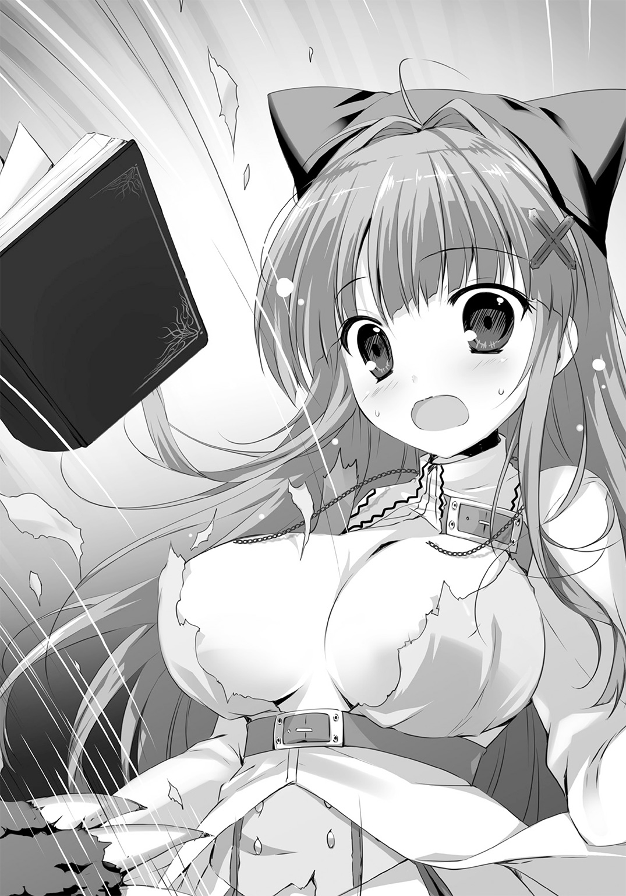
慌てて飛び退いた少女の巨乳が、半分以上露出している。
激しい動きに縦揺れを起こす、それは予想をはるかに超越した美しさ。熟れて食べごろの白桃のような、けれど断じて桃ではありえないサイズ。
エロい。違う、そういうんじゃない。いやエロいけど、でもそうじゃない！
この世にはあんな奇跡が在るのか！
「テトさぁん、がんばってくださいですーっ」
パンツを隠すことも忘れた俺のそばで、色白エルフちゃんがやたらのんびりと叫んだ。こっちのおっぱいもぷるるんと揺れる。なんだろ。ここ天国なのかな。
オークもまさしくそう思ったらしく、ブタ耳をパタつかせて振り返った。
のみならず下卑た薄笑いを浮かべ、足のひづめをこっちへ向ける。......あ。まずいかこれ。
「ちょ、こっ、このブタちょっと待て!? 人には着衣というものが――」
「あぶないーっ」
「うどあっ!?」
ズボンをはききれないまま、思いっきり突き飛ばされる――オークに、じゃない。エルフちゃんにかばわれたんだ。「あぶない」って、そりゃこっちのセリフだっての！
案の定、オークは男なんかにゃ目もくれなかった。
俺を突き飛ばしたままよろけている色白エルフちゃんを、どすこいどすこいと壁際まで寄り切る。ろくろく抵抗もしない彼女にあろうことか抱きつき、醜悪な全身をすりすりと......！
『おっぷぁい、ふごッ。ぶひひひ、おっぷぁい......！』
「あ、あらー。あの、あう、テトさぁーん......どうしましょー......」
ゴツゴツしたブタ面に押し上げられ、宝玉のようなおっぱいがむにゅぅと形を変える。
ムカッ、と俺の中にこみあげるものがあった。
理屈のわからない、めまぐるしいトラブル――正直言って、ラッキーでもある。見れてうれしいモノは多々あった。だけど、おい、ダメだろ。俺の目の前で、それ以上はダメだ。
俺の知らない大事なものを、蹂躙するのは許さねえ！
「その子をはなせオラァ――」
「姉様ッ！」
ズボンを両手でしっかと押さえ、ちょこまか特攻する俺より速く。
褐色の影がまるで突風のように、その場のまんなかに飛びこんできた。
もう一人いた南方エルフ。細い身体をしならせて、オークに見事な飛び蹴りをぶちかます。
『ぶきィッ!?』
「牽引」
ぶっ飛ばされたオークが、今度は急停止した。
人外の足腰で踏みとどまったのか？ まさか。いや、よく見ると――いろいろおかしいぞ。
こいつ、オークはオークだ。それは確実だ。
でも俺の知ってるオークは、額の中心に赤い宝石みたいな、不思議な発光体がくっついてたりしない。こんなエビみたいな姿勢で硬直して、ぶるぶる震える習性もないはずだ。
まるで頭を、何かに引っぱられてるかのような。そうして動きを封じられているような。
「こ、このぉー......！」
今にもこぼれそうな胸を左手で隠し、怒れるお医者さんがモンスターをにらんだ。その右手が中空に円を描き、魔力の跡を残して陣と成す。
召喚の、印......!? やっぱりか！ テトさんって呼ばれてるあの子、精霊医だ！
「尖炎火霊、アルトレ！ 可視！」
ドッ！ と螺旋の火焰が疾る。オークの背中を直撃し、炸裂する火炎がその体軀を包んだ。
けっこうな威力だ。終わったか――と、俺は思わず足を止めちまったけど。
直後、燃えさかる炎の中に、ギラリと光る怪物の両目を見つけた。
「なっ......!?」
『ブキキキイイイイッ！』
咆哮までもがブタめいてるから、何を言ってるのかはわからない。
俺にわかるのは、オークのにごった眼に、今までとは違う怒りがあることと――大きく開いたその口の中に、炎のチラつきが見えること。
大きく息を吸い、今にもまるで、って待て待て待て待てちょっと待て!?
ブタが火ぃ吐くつもりってかおい!? なんだそりゃ、聞いたこともねえ！ 自分のことドラゴンか何かとでも勘違いしてんのか、目を覚ませ！ なんでこんなことが!?
魔術を放ったお医者は、オークの向こう側。跳び蹴り娘は丸腰だ。
守れるのは、俺？ 剣を。いやだからズボンがさぁ!?
『ブオオオオッ！』
ドバンッ！ とオークの口から炎の塊が飛び出す。狙いは一直線に、色白巨乳のエルフちゃん。どんだけ欲望に忠実なのかはともかく、熱そうだ。めちゃくちゃに。
俺はとっさに、まさしく抜き打ちの要領で、
「ッだ！」
それを振り抜いた。
ぱんっ、と気の抜ける音が響く。
まっぷたつに断ち割られた火球が、空中で小さく爆ぜ、消える。
熱い風が、じーっと俺を見つめている巨乳エルフちゃんの金髪を揺らした。いやすごいなこの子、動じないっていうか危機感ゼロっていうか。ふ、今の美技に見とれちまったのかな？
「や......やあ、だいじょぶかい？ 危ないところだったね、さ、さぁ早く俺の後ろに――」
「退がって！」
ぎこちないアピールを敢行する俺を遮って、お医者の女の子が地面を蹴った。
両手で持った白杖を、オークに向かって振り上げる。って待てムチャだろ!? そんなか細い棒で、いかにも体重の軽そうな子が殴りつけたって！
「最大圧魔刃、設置！」
白杖の先端に光が集まり、呪文によって刃を成した。
オークの頭蓋が、額の赤い光が、その一撃で見事に斬り裂かれる。
なん......なんだありゃ。普通の武器じゃないぞ、薄くて鋭い、なにかを切ることを目的とした刃だ。頭割られるなんて、今度こそ致命傷だろう。断末魔の声すら聞こえない――
「えっ......？」
棒立ちする俺の前で、オークが白い光と化した。
みるみるうちに全体がしぼんでいき、両断された発光体に集まって――キュン、と小さな音だけを残し、弾かれたように天空へ吹き上がっていく。
怪物が、まるごとさっぱり、その身を焼いていた炎ごと、消え失せてしまったんだ。
あとに残ったのは俺と、魔術の焦げ臭い残滓。またどこかぼーっとしている巨乳エルフと、その胸についたよだれをふいている褐色エルフ。ざわめき冷めやらぬ野次馬。そして、
「ま、まさか、もう満腹だったなんて......。てゆーか......！」
刃の消えた杖を地面につき、どうしてかまっすぐに俺をにらみつけている、ロリでボインなお医者の子だけだ。
「ハンカチ拾ってケガしたのかと思ったら！ 人の胸見てたからだったとはね!!」
な。
「サイテーよサイテーよ！ きっと治療中もずっと見てたのね!? ヘンタイだったなんて！」
「い、いやちょ、なんでっ......!?」
「キャアアアアアこっち来ないで！ 寄るな寄るな！ ちかんちかんちかーんっ！」
バカな。なぜだ、なんでバレてる!? さっきは気づいた様子もなかったのに！
「こーゆーおバカがいるもんだから！ 疲れが倍になるじゃない、まったく！ アニスちゃんイニスちゃん、もう行くよ！ 騒ぎになっちゃう前に！」
「「はーいです」」
白いローブの前をかき合わせ、お医者の少女は踵を返した。細い肩を怒らせて去ってゆくそのあとを、白と黒のエルフがとことこと追いかける。
さっぱり、わけがわからない......
俺がスケベそうだとか、そんなレベルの言いぐさか？ いいや違う、確信に満ちた変態扱いだった。そもそもあのオークは何だったんだ？ ていうか今、この目で見たものが本当に精霊医術なら――それって、王宮以外に存在していいものだったっけ？
あれやこれやと混乱し、ドキドキしたまま立ち尽くす俺を、一瞬、少女が振り返った。
「......お大事にね！」
そのひとことで、胸の高鳴りが生涯最高潮に達したんだと思う。
少女が路地の角へと消えて、エルフたちの姿も見えなくなり、さらにしばらく呆けたような時間がすぎてから、ようやく。
「っま......待って!? 待ってくれ、なぁ！ ちょっと！」
慌てて、ズボンにベルトを通した。急がないと。早くしないと――後悔しないために！
タンタンと、何事もなく動く左足で地面を踏みしめ、俺は一切の迷いなく駆け出した。
＊＊＊＊＊＊＊＊＊＊
市場からある程度離れ、人通りもずいぶん落ち着いてきた朝の公園で。
「なぁ、ちょっとだけ！ ちょっとだけ話聞かせてよ！ 頼むって！」
まったく辺りはばからず、どこまでもついてくる俺に業を煮やしたのか。
白いローブにバカでかいガラスビンを背負った、よく目立つはずなのに不思議と景色に馴染んでいる女の子――テトさんはくるりと振り返り、いとけない顔でキッとにらんでくれた。
「しっつこいなぁー、もう!? これだから変態は！」
「へ、変態って、だから誤解だよ！ そんなつもりで追いかけてきたわけじゃ......」
「じゃーどんなつもりなのよ。てゆーかあたしたち忙しいんだけど。変態じゃないっていうなら、構わないでくれるととっても助かります」
くっ、い、いきなりなかなか手強い。でもかわいいなぁ、ロリな見た目でツンケン。
「つもりっていうか......その。ケガ治してくれて、ありがとう。あんな完全に折れてたのに、もう痛くもなんともない！ すっげー驚いたし、なんていうか、感動した」
「あっそフーン」
「だ、だからその、えっとー......お礼を！ そう、なにかお礼させてもらいたいなって！」
一所懸命食い下がる。こんなに必死になったのは、たぶん初めての剣術大会以来だ。
改めて正面から向き合うと、本当にかわいい女の子だとわかった。
くりくりの両目に、ふくふくのほっぺ。背中まである髪はやさしい夕暮れの色で、白一色のローブによく映える――ローブ。そうローブ。この薄い布一枚の下に、アレがあるんだ。
今でもまぶたの裏にチラつく、圧倒的な美巨乳が！
意味不明なモンスターに服を破かれ、剝き出しのまま危うく隠されているわけだな！
ちょっと気取ったあの上司の胸より。
不敬な話だけど、あのお方の胸より。
今までガン見したどの女性の胸より、ずっときれいだった。てゆーかエロかった。
「けっこーです。あれは一応、ハンカチ拾ってもらったお礼みたいなものだし」
不純な動機に満ち溢れた俺に対し、テトさんはトントンと白杖で地面をつきつつ言う。
「お礼にお礼してもらういわれはないです。ま、ハンカチはやらしー隠れみのだったわけだけど。はい行った行った、ついてこないで！」
「ちょ、ま、待って！ そこはなんていうか、あんな治療初めてだったしさ！ あれって精霊医術だろ？ けっこーお金とか、かかるんじゃないの？」
「......。知ってるのに、追いかけてきたの？」
あ。請求される？ なんて一瞬思っちゃったけど。
大きな両目をぱちぱちさせたテトさんは、ふーんと意図の読めない声を漏らす。
「なんか......珍しい人みたいね。さすが変態くん」
「だから違うってば。ハンカチ拾ったのも純然たる善意からで」
「そーゆーの通用しないから」
「つ、通用!? さっきからコメントが力強すぎない!? 何者だよテトさん」
「ちょっと、名乗ってもない相手のあだ名呼ばないでくれる!? あたしはテトリア！ テトリア・ハルスハイファン！ あなたの言う通り精霊医よ！」
よっしゃ本名ゲット。テトリアっていうのかー。かわいいけど、なんだか隙が多い子だな。しゃべればしゃべるほど墓穴を掘ってくれるタイプと見た。
てゆーか、お金いいのかな。いざとなったら聖剣でもなんでも売っ払うけど。
「そっか、いい名前だね。じゃあさテトリアちゃん」
「さん付けからちゃん付け!? なにごくごく自然に馴れ馴れしくなってるの!? 本名なら呼んでいいなんて言ってないんだけど！」
「精霊医だったらひょっとして、首都には仕官目的で？ 王城の医療系ポストに推薦することぐらいなら、俺で力になれるかもしれないんだけど」
「人の話聞きなさいよ!? てゆーかやめてよね、そんなのキョーミないし！ ペッペッて感じだし！ あたしはフリーなの、フリーの精霊医。医者の世界の渡り鳥なのよ！ フフン」
「フリーで、渡り鳥。なら旅の途中なのか。首都には乗り継ぎで立ち寄っただけ？ 正解？」
「う......だ、だけじゃないし！ いろいろと情報が必要なのっ。これから役所に行ってあれこれ聞かなくちゃなんだから、もーいいでしょ!? ほっといて！」
「なるほど。......役所？」
「そーよ！ 市場を通って近道しようとしてたのに、どっかの変態くんに邪魔されてねー！」
「役所は、ここからも市場からも逆方向だけど」
ぴた、と彼女――テトリアが、上下に振り回していた両手の動きを止める。
「......。そなの......？」
「うん。お城挟んで、反対側。......案内しようか？」
「......そ......そーねっ。じゃあちょっと、お願いしよーかな！ そのくらいのアレだったら、させてあげなくもにんともかんとも......」
ごにょごにょと語尾をにごすテトリア。わかりやすい子だな。確かに変態に好かれそう。
ちなみに、とあてずっぽうでひとつ、内部情報でも。
「今レクセンタル国内で医者が足りないっぽいのは、メセトワっていう街だけど。ここから乗合馬車で二日くらいの」
「あ、そうなんだ......え、へっ!? な、なんで!? どうして役所で聞こうとしてたことを!?」
「まぁ、うん。よかったら、役所じゃなくてメセトワに案内しようか？」
「え!? いいのっ......いやでも、会ったばかりの人にそこまでは！ 変態されたとはいえ！」
「どういう動詞だよ。あー実は俺、野暮用でメセトワまで行くところなんだ。そのついでって言っちゃなんだけど、旅は道連れなんとやらってゆーかさ」
あれ。......おかしいな。
俺はこの子を追いかけて、声かけて、それで――なんかこう、胸とかさわれればいいなって。いやムリだけど、普通ムリだけど、この胸に挑んでダメならしょうがないかなって。
そんなこと考えてたはずなのに、なんでナンパしてんだ？
そんで、
「えっ、そ、そーなのー!? 得難い偶然だねーそれは......！」
なぜそのナンパにやすやすと引っかかってんだこの子は!?
どうしよう、チョロい。あれだけ人のこと変態変態言っといて。前をかき合わせてるローブがゆるんで谷間見えちゃってるし、ああもういいおっぱいだなぁ！
「メセトワってのもあれでしょ、けっこう大きい街でしょ確か？ またそこで役所とかさがすのダルい、いや大変だなーって思ってて！ じゃあー。そのぉー。やっぱりちょっと悪い気もするけど、せっかくだからお世話に――」
「反対ですます」
「そーよね反対よねー。......えっ？」
「反対ですます、お師様」
くるりと振り向いたテトリアの視線を、細身の人影が受け止める。
冷ややかな表情を朝日にさらして、エルフが一人立っていた。
さっきのオークを、豪快な飛び蹴りでぶっとばしていた女の子だ。肩で切りそろえた銀の髪が、褐色の肌に照り映える。切れ長の瞳が物語っている通りの、どこかシャープな美人さん。
だけど、頭の左側につけている蝶を模った黒いリボン、それに両手で抱え持ったパン屋の紙袋がなんだかかわいい。つーかお師様って、テトリアの弟子？ お医者のタマゴなのかな？
「イニスちゃん。どこ行ってたの？」
「朝食をお持ちしましたです。この場は姉様におまかせしたはずですけど、あっちの芝生で必死にちょうちょを追いかけてるのが、もしかして我が姉ですますか？」
「あー。ま、ああなっちゃうよねー。アニスちゃんに買いに行ってもらえばよかったのに」
「そうしたらまた、ホットドッグを十個も二十個も買ってきますですから......。それはともかく、お師様。わたしは反対ですます」
ふーん、と俺は二人の会話内容より、イニスというらしいエルフの言葉に感心していた。
語尾を重ねるエルフ弁、噂じゃ知ってたけど初めて生で聞いたよ。想像してたより妙におもしろい。でもなんか、そんなこと言う雰囲気でもないな。
「反対ってー......道案内のこと？」
テトリアに対しこくりと頷き、イニスは俺をにらみつけてくる。
「こんな得体の知れている変態に同道を許すなど、正気の沙汰ではございませんですよ」
「ちょ、な、なんだその器用なこきおろし!? 得体の知れてる変態って――」
「やかましいわね、このゲスがッ！」
うおっ、と思わず後ずさる。いきなり普通にしゃべられると、それはそれで驚くじゃんか。
「あんたみたいな揺るぎない変態、信用できるかって言ってんの！ ちょっと天然入ってるお師様はだまくらかせても、わたしには通じないから！」
「......。え、と......ひとつ聞いときたいんだけど」
「なによ。ちょっとこっち見ないで、視線こっち向けないでよ痴漢！」
「どうしろと!? いやあのエルフ弁って、語尾を一個足すんだよな？ 人間で言う敬語がエルフのタメ口で？ 二重敬語的なのがエルフの敬語、みたいな......合ってる？」
「だったらどうだって言うのよ」
どうもこうも。テトリアいわく、ついさっき会ったばかりだってのに、
「君どんだけ俺のこと嫌ってくれちゃってんの」
「さっきも今も、お師様の胸ばっかチラ見してるゴミカス生物ぐらいには嫌ってるから」
またバレてた!? し、しまったぁ、まさか傍観してる勢力がいたとは！
てゆーかテトリアがえらいびっくりしてるし。なんでこっちにはバレてないんだよ。
「こんなゲスの視線にさらされながら、狭い馬車で移動なんてできますですか？ お師様」
「う......うーん。それはそうかもだけど......」
「いやらしく見られるだけじゃありませんです。ちょっと周りに人気がなくなったら、お師様なんてすーぐ押し倒されちゃうですます！ 服とか破かれて、叫んでも誰も来なくて、長きにわたり守ってきた操があわれ変態の手によって――なによ？ あきらめたの？ ゲス男」
そんなわけはないし、そんなこともしない。
「まもる、って、言ったか......」
という小さな呟きが、果たして聞こえたかどうかはいざ知らず。
大きく一歩退がった俺に、二人の視線が集まった。
前に出なかったのは、強要しないためだ。反論というには、いささか手前勝手だろうから。
「言い遅れて......悪かった。俺はリッシード」
「リッシード、くん」
「近しい人にはリドって呼ばれてる。お察しの通り、ずいぶん適当な人間だ。おかげで姓もない。でもな。こんな俺にだって、護りたいものは......護るべきものは、ある」
腰にはいた聖剣が、揺れもしないのにちりっと鳴った気がした。
名前に反応があるかと思ったけど、テトリアたちはただきょとんとしている。そっちのほうが俺も話しやすい。ひとつ堂々と、胸の前で腕など組んでみたりして。
「この世で護るべきもの、みっつ！ 国と！ 誇りと！ おっぱいだ!!」
「「......っお......」」
「確かにッ！ 確かに俺はさっき、世にも稀に見るおっぱいに目を奪われてたし！ そのあとも、こう、チラチラと、抑えきれない興味を露にしてしまった！ だけどそれは、決して傷つけるためじゃない。護るため......ひいては知りたいがためなんだよ！」
芝生周りの整備された道を散歩する老人たちが、よぼよぼした歩みを止める。
張り上げた声が届いたのか。よければどうか、聞いてくれ。
俺の心を――魂の発熱を！
「俺は！ 誇りならわかる。それは教えてもらった。どういうもので、どうすれば護れるのか知ってる！ でも、国と......恥ずかしながら女性のことは、そうおっぱいのことは、よく知らない。護るべきものを知らねばならないのは、剣士として当然のこと。だから見てしまう！ ちょっと見てしまう！ 今なら知ることができる!? 的な感じで見てしまう！」
「「......」」
「君たちの心配は杞憂だ。俺は変態じゃない。仮に変態であったとしても、君たちを護る変態だ!! 俺の魂と師の教えにかけて、今の言葉にウソはないと誓う。......以上です」
腕組みを解く俺に、遠く弱々しい拍手が降りそそいだ。
老人たちが小さく頷きながら、温かな眼差しでこっちを見つめている。まわりではしゃぐ子供たちも、つられて拍手してくれているようだ。ありがとう。熱意、伝わりましたか。
やり遂げた心地の俺を眺めて、テトリアとイニスも顔を見合わせる。
「......イニスちゃん。まぁ、聞いての通りね。変態どうこうに関しては」
「はいです」
「まったく完全にイニスちゃんの主張が正しかったわけだけど」
あれぇ!?
な、なんで!? パーフェクト無意味ですか、今の長広舌!? ご、ご老人方みたいな反応をちょっぴり期待してたのに。これだから小娘どもは！
「それはともかくねぇ。実際問題、今回ちょっと急ぎたいわけなのよ」
テトリアはローブの腰に手を当て、ぴこぴこと杖を左右に振る。危ないぞ。
「レクセンタル王国は初めてだけど、なんだかヤな予感がするの。早く行くべきな気がする」
「はいです。こんなゴミクズにかかずらわれることなく、まずは役所へ」
「......その役所へは市場を抜ければ近道だって、昨夜堂々と言ったの、イニスちゃんだよね」
「う。......ち、違ったのですますか？」
「まぁ、あたしも信じたけどさー。イニスちゃんよりさらに方向オンチだもんね、あたし。名にし負うレクセンタルの地酒も、二、三本買いたかったし......」
「うう、お師様......」
「ね、あたしもガマンするからさ？ ここは涙を――あっ待って、いいこと考えたかもっ？ まずリッシードくんに、メセトワまで案内してくれるまともな人を紹介してもらってー」
泣きたくなる提案をさらりとぶっちゃけてくれるテトリアに、イニスが顔を輝かせたとき。
「イニスちゃん、イニスちゃあーん」
ぽてぽてぽて、とでも表現したくなる風情で、もう一人のエルフが駆け寄ってきた。
何度見ても、輝くような白皙。クセの強い金色の巻き毛が、肩の上でくるくる躍ってる。
「見てください、ほらぁー！ やっとちょうちょが手にとまってくれたんですよー。テトさんもほら、見てくださいですー」
「姉様......相変わらず、コメントしづらい特技を。なぜとまらせるのに苦労するくせして、走り回っても飛び立たせないのですか......？」
「え、それはー。なんででしょう？ あ、わたしの髪飾りとちょうちょ、同じ色だからー？」
とろけそうな笑顔が伝える、一目でわかるイノセント。
先ほどからこぼれ聞いている通り、この二人のエルフは姉妹みたいだ。姉の頭の右側で、白いリボンが蝶を模ってるのも、イニスと対なんだな。
対。うんほんと、いろいろ対照的になってる。
肌の色も対ならば、妹はストレートの銀髪で、姉はくるくるの金髪で。
二人とも細身のスタイルだけど、妹はスポーティな感じ、姉は丸みのラインが美しい。
そしてそれは、パッと見でわかる最大の違い――ごく平均的な妹の乳房と、テトリアに勝るとも劣らない姉の巨乳というポイントにも繫がっていた。それに、性格も真逆なんだろう。
うーん。そうねぇ。俺的にはおねいさんがいいかなぁ。うん。
「ねーねー！ アニスちゃんはどう!? このおかしな変態くんのこと、どう思う!?」
テトリアが不作法に杖で俺を指す。ちょっと質問が恣意的すぎやしませんかね。
「はいです？ どう、というのは......？」
「たとえばいっしょに旅しなきゃいけない場合、どうかな？ はっきりずばっとプリーズ」
おいぜんぜんたとえてねーぞそれ!? 傷つくわ！
てゆーか、アニスっていうのか？ こっちはこっちで、はっきりずばっとなんてタイプじゃないだろうに。妹がチャキチャキで口悪いのはよくわかったけど、姉は見るからに――
「ステキでございますです～！」
ぽよぽよと......って、おや？
「す......すてき、って。アニスちゃん......!?」
「いっしょに旅ができたら、とってもステキだと思いますです。加わってくださいますのですか？ 帯剣した男の方といっしょなんて、心強いですますー！」
「ね、姉様！ 気づいてなかったんでしょうけど、コイツずっと姉様の胸見てたんですよ!?」
当の俺も呆気にとられてたせいで、イニスによけいな発言を許してしまった。
しかしアニスは、両手をそのどでかい胸の前で合わせ、こくこくとうれしそうに頷く。右手にとまっていた白い蝶が、ようやくひらりと飛び立っていった。
「はいー。オークさんに捕まって、ケガをしていないかどうか気にかけてくださったんでしょう？ ありがたいことですー」
「いやいやいや!? まずオークさんて！ 危機感ゼロにもほどがありますよ姉様、この男は野獣ですから！ ケダモノですから！」
「でも、だって、助けてくださったでしょう？」
「たすっ......！ な、なんです!?」
「わたしがオークさんに捕まったとき、その方は助けてくださいましたものー」
おお......っ！ ちゃんとわかってくれてた！
アニスは天使。天使はアニス。よし覚えた。
「違いますっ、ああなんてことを姉様！ オークからお助けしましたのは、不肖ながら妹のわたしじゃないですかあ！ 姉様を想い、必殺のエルフキックで！」
天使じゃないほうはしかし、なんでこんな必死なんだ？ エルフキックて。
「このヘンタイはなんか、オークの火の玉を斬ったりしてただけでしょう！ まぁちょっぴり奇襲でしたけど、かばうでもなく斬るなんて！ ちょっと剣持ってるからって！」
「えっ......？ でも......」
「心配しなくても姉様、こんなのがいなくたって絶対にわたしがお助けしてましたから！ だからいっしょに旅なんてしなくていいんです！ そんな必要ないんです！」
「う、うんー......わたし、何も心配してないですよ。イニスちゃんがいっしょですもんね」
「！ そーです！ そーですよ姉様――」
「でもぉ、必要はありますよー？ ねーテトさん」
こめかみを押さえて懊悩していたテトリアが、アニスに話を振られてパッと顔を上げる。
「ほえっ？ 必要......とゆーと......？」
「だって、治療を......精霊症の処置をするために、ここまでお連れになったのでしょうー？」
「......あっ」
と、これまたお医者の口からは聞きたくない類の「あっ」がこぼれ出て、しばし。
額に浮かぶ汗をぬぐいもせず、テトリアが大きな胸をそらした。
「も、もっちろんよ！ そのとーりよ！ さすがねアニスちゃん、よくわかってるねー！」
「そんなー、うふふふ。あっ、わたしが処置しちゃって、よろしいですかー？」
「そーねそーね、今日もおまかせしちゃうね！ アニスちゃんてば頼れるぅー！」
......なんだろう。カラカラ笑うこの子に、えらくはっきりした不安を感じる。なにかしら俺に関することで、あまりよくないごまかしをされているような気が。
話に追いつけないでいる俺に、ぽてぽてとアニスが近寄ってきた。
「さて。では失礼しましてー、おズボンを......」
「っちょ!? ちょちょちょちょっと待って、治療ってなに、やっぱ俺の!?」
「はいですー。あなたの足の治療は、まだ終わっておりませんのですよ」
そうなの？ もうぜんぜんなんともないんだけど。
つーかまた下を脱げとかおっしゃる!? さすがに朝の公園じゃあ！
足出せばいいの？ と俺はベンチに座って、ズボンのすそをまくり上げた。ところどころに硬い革やら鎖やら入ってる、面倒な代物だ。女の子の手じゃやりにくいだろう。
つとテトリアを見上げると、彼女はぽりぽりと頰をかいた。
宙をひらひら漂っていた白い蝶が、彼女の茜色の頭にぽてっと着地する。かわいい。
「あー......、頭冷えたわ。そうよね、手出しした以上、あなたも――リッシードくんも、あたしの患者さんだもんね。アフターケアはきっちりさせてもらいましょ」
「アフター......じ、じゃあ」
「メセトワまで野暮用、って言ってたわよね？ あたしたちもごいっしょさせてもらえる？ ついでに少しだけ道を教えといてくれると、とっても助かるわ」
そんなっ!? とイニスがショックも露に反対する。露骨も露骨、まるで親の仇だ。テトリアもいまだ苦笑いだけど、それでも考えを翻す気はなさそうな気配で。
やった......おいおい、これほんとにアレじゃないか。
かわいい巨乳ちゃんどころか、プラス美人さん二人連れてぶらり旅ってことだろ！
「うふふ。アニス・ノーホートと申しますです」
ぎゃいぎゃいわめく妹をよそに、笑顔のアニスが俺の前にしゃがみこむ。
「テトさんのサポートをしております。よろしくお願いいたしますですよー」
「こ、こちらこそ。俺はリッシードだよ、もしよかったらリドって呼んでもらえると」
「あら！ では、わたしのこともどうぞアニスとー。妹はイニスとお呼びくださいませです」
「ありがと、いやーうれしいなー......。な......なに、か？」
じーっと俺の顔を見つめるアニスが、あのぅ、と小声でささやいた。
「さっきの、あの......ベルト、ですますよね？」
「え？」
「オークさんの、火のあれを、ずばーって......アレは剣じゃなくて、ベルトですますよね？」
おー。そっか......アニスはしっかり見ててくれたんだな。
いや、違うぞ？ 恥ずかしいところを見られた、ってほうが正しいなこれ。
「はは、その、ズボンをはきそこねてねー......剣が抜けなくて。危ないことしたよ、ごめん」
「そんな、スゴいですます！ あんなのわたし、初めて見ましたですー。こんなスゴい人と旅できるなんて、道中の安全は保証されたも同然ですますね！」
「え、うほ、うははははそーかなーっ！ いや確かにね、危ないとは言ったけど斬れる確信もあったから！ なんで火吐けたのかわかんねーけどオークはオークだし、口の中の――」
「そんなスゴい人に、間違っても精霊症が出ないよう、強めに処置しておきますですねー」
「ああよろしくー......うん？ あ、うん、よろしくー」
強め？ なにが？ あんま聞いてなかった。そんなことより旅だ、旅に出るんだ！
思いも寄らなかった形で！ こんなステキなおっぱいたちと!!
でれでれと鼻の下を伸ばす俺の左足に、アニスの両手が触れた。
やわらかですべすべ、しっとりして心地いい。そのまま細腕を巻きつけるようにして、俺の足を抱えこみ――つまりほっそりしたお腹や、むっちりした太ももや、こともあろうにたっぷりしたおっぱいの下側なんかがちょんちょん当たっちゃったりして。
そりゃあもうドキドキでワクワクで。だから。
ゴキッ、と響いた耳慣れない音が何なのか、とっさに理解できなかった。
「っえ、い......いっ？ ぅいだだだだだだだッ!?」
次いで激痛。まさに激しい痛み。左足が思いっきりひねられてる。
いまだ笑顔のアニスちゃんが、見た目天使のアニスちゃんが、治った足がまた折れる勢いでグキッとやってミシッとやってビキッとぃででででででい!?
「痛え!? 痛え痛えすんげぇー痛ぇなにこれ！ なんなの、ちょ、ちょあああああああ!?」
「すぐ終わりますですー。がんばってくださいですー。痛かったら、言ってくださいですー」
「言ってる言ってる今めっちゃ言ってる!? 痛い！ 痛いですやめてやめてほんと痛いっ!?」
「痛いですますかー？ ガマンしてくださいですねー」
なにそれひどくねえ!? 罠!? 詐欺!?
てゆーか俺は一体、何をされてるんだ!?
テトリアを見やるも彼女は無関心、頭の上のちょうちょをつんつん構いっぱなしだ。のたうつ俺を見下ろして、ただニタニタとイニスが笑っている。
「痛い治療ほどよく効くから。変態でも男の子でしょ？ 叫ぶとみっともないからぁ」
「こ、これっ、これ治療なのかああ!?」
「もちろん、絶対必要な治療よ？ ちゃんと患部をほぐしておかないと、大変なんだから」
ほぐすっていうかねじられてる！ なんて主張するより早く、アニスの手つきが変わった。
見事に関節をロックしていた両手が、痛みに震える俺の足の肉をやさしく挟みこむ。なるほど、両側からもみこんだり、圧迫したりして潰しほぐすんだな。
これ俺助からない。
「あああぎゃああああああああ!? いたいたいたいたいたいたいッ！ たいッ！」
「これからの旅、とっても楽しみですますー」
「お、俺もっ、楽しみだなああああッ、あぐぁー!? ごめんなさい、神様ごめんなさいッ！ もうしませんからああああ痛いよおおおおおっ!?」
いまだ遠巻きに見つめる老人たちが、またパチパチと拍手していた。
＊＊＊＊＊＊＊＊＊＊
結果から言うと、メセトワの街までの小旅行は、二日もかからなかった。
首都の乗合馬車発着所に一行を案内したところで、テトリアが高速馬車の看板を発見。狭いし揺れるし休憩ないし、座席も硬いからやめとこうって言ったのに、問答無用で乗せられた。馬を替えながら走り続ける馬車の中、ひたすらケツの痛みに耐える俺の祈りが届いたのか、夕刻に突然の雨。高速馬車は悪路を走れないから、晴れて途中の村で一泊となったものの、「お師様のお部屋に近づいたら殺す」というイニスのマジ顔が怖くてなんにもできず。
結局、旅らしいイベントは何ひとつ起こらないまま、翌朝早くにメセトワ近郊まで到達したわけなんだけど。
「検問......？」
街の手前で速度をゆるめ、停まった馬車の外を見ながらテトリアが呟く。
街の入口へと続く道は、簡易的な柵で遮断されていた。王国の兵士がたむろし、旅人や馬車をせき止めている。なんとも物々しい雰囲気だ。
「兄ちゃん、嬢ちゃん、こりゃダメだあ。メセトワ今、二次閉鎖されてんだってえ」
御者のおっちゃんがドアを開け、唯一の客である俺たちに陰気な顔で教えてくれた。
閉鎖されてる？ 街が？ ってことは......
「それまさか、病気で？」
「みたいだなあ。間が悪ぃのなんの、昨日からなんだと。メセトワでそんなもんが流行ってんなんて、オレも知らんかったがよ。出ても入ってもいかんて。ひとつ前の村まで戻らぁな」
「おじさん、あたしたちここでいいよ！ 降ろして！」
「おー？ はあ。そりゃ降りんなぁええけど、街入れんでよ」
「あたし医者なの！ 通れるはずだから！」
どやどやと、荷物をまとめたテトリアたちが馬車を降りていく。
一歩遅れて、俺も続いた。いやはや、実りの少ない道のりだったなぁ。
「お兄ちゃんもお医者け？」
「そう見える？」
「いんや。さっきの子らも、お医者にゃ見えんかったがなあ」
なかなかに鋭いおっちゃんの馬車から離れ、背負い袋を担いで歩を進める。
すでに検問にたどり着き、すったもんだしていたテトリアが、パッとこっちを振り返った。
「あっ、リッシードくん！ ごめんね、あたしたち急ぐから行くけど！ まだあなたの治療のケア終わってないから、用事が終わったらまた来てね！ 街のどっかにいるからー！」
どっかって。それで簡単に行き合えるほど小さな街でもないけど、笑って手を振っておく。
もちろん、このままはぐれるなんてさせるもんか。
舌嚙みそうな馬車の中じゃろくに話もできなかったし、縦横無尽に跳ね回るおっぱい眺めてたらあのイリスがグーでくるし、拳で。このままじゃ終われない。終われるものか！
すててーっと転がるように走っていくテトリアと、そのあとに付き従うエルフコンビ。
妙にかわいらしいその背中を、じっと両目に焼きつけて――さて。
しかしまぁ、二次閉鎖中とはね。
そこまでの情報は俺も把握してなかった。どうするかな。検問は面倒だなぁ。
「と......止まれっ！」
なんて考えながら歩いてるうちに、バリケードまで着いちまったし。
「こ、この街は二次閉鎖中です......だ！ 平民は入ることができない！ 通行証は!?」
「ありません」
にこ、と笑顔で応対する。本当にそんなものはないから、ここは愛想だ。
テトリアの口走った俺の名前が、もちろん聞こえたんだろう。腰が退けて、構えた槍も震えてる哀れな少年兵士を、脅すわけにはいかない......いやー、若いなぁ。俺より年下かも。
「二次閉鎖ってことは、出るのはダメだけど特別な理由があれば入れるんですよね？ 実は行方不明の父親が、この街にいるかもしれないっていう話を聞きまして」
「えっ、父......こ、九日勇者の父親って、臆病なハズバドル――」
「あ？」
思わず反応した俺に、ビクッと兵士が後ずさる。
いかんいかん、つい声に出ちまった。まぁほら、なんだ、はは。笑顔笑顔。
「......よしてくださいよ。知ってるでしょ？ 俺はもう勇者でもなんでもない、父をさがして旅するただの一剣士です。もちろん閉鎖が解除されるまで街は出ませんよ。いいでしょ？」
ダメだ！ と野太い声がして、兵士長と思しきゴツい大男が一団をかき分けて現れた。
一目でわかる、少年兵士なんかよりよっぽど面倒な手合い。人の話聞かなそう。
「貴様がリッシードか......噂通り、歯の浮くようなたわごとをほざきおる。とっとと失せるがいい！ 今のメセトワに貴様のような愚か者を入れて、混乱させるわけにはいかん！」
「いやいやダンナ、カンベンしてくださいよ。愚か者っつったら語呂だきゃいいですけど、自分もう勇者じゃないですし。それに言うほど大したことしてないんですよ実際？」
「何を言うか、この不埒者め！ 不忠者め！」
いろいろ言ってくれるじゃんか。悪口いっぱい知ってんなぁ。
だけどほとんど昨日の今日だぜ、俺が勇者をクビになったのは。その報せだけは受けてるみたいだけど、詳しいことなんざ伝わってないだろフフン。特に、名誉剝奪された理由なんて、
「騎士団から王宮に転属されるや否や、女性高級文官の胸に狼藉した愚か者が！」
そう、
「勇者の称号を得た翌日に娼館へ駆けこみ、広報屋にすっぱ抜かれた不埒者が！」
あれ、
「挙げ句の果てに我らが誇り、だ、第四、第四王女様の寝所で不届きを働こうとした不忠者めがッ！ とっととここから消え失せい!?」
えー......と、はっは。おかしいなばっちりバレてるぞ。レクセンタル王国スゲー、昨日の市場でも思ったけど、情報流通は大したもんだなほんと。
つーことは、じゃあ、なにか？ このオッサンは今、『国』を『護って』んのかな？
どうなんだろう。もしもそうだとするなら――やっぱ、国も難しい。わかんねーや。
「てなわけで、通りますねと」
「な......何がてなわけでだ!? 消えろと言っとるんだぞ！ それとも叩っ斬られたいか!?」
「......斬る？ 誰が？」
「な」
「誰を？」
姿勢をわずかに前傾させる、俺のボディランゲージはなかなかわかりやすかったらしい。
たちまち腰の大剣を鳴らす兵士長や、ひと呼吸遅れて槍を構える周りの兵士たちが、いっそ滑稽だった。穂先がちゃんとこっち向いてる槍、半分もないし。俺も知られたもんだな。
「俺を斬るかどうかより、罪が確定してるかどうか考えてくださいよ」
もう一度、兵士長に愛想笑いしてみせる。さすがに嫌味か。
「確定してるなら抵抗しませんし？ 街に入るのもあきらめますけど」
「ぐ......！」
「あ、捕縛の前にそう言ってくださいね。でないと、まぁ......まだ聖剣返してないもんで」
ざざっ、と道を空ける兵士たちの間を、みっともなく見えない程度の早足で通り過ぎた。
後ろで兵士長がなにかわめいてるとこ見ると、聖剣返してないことは知らなかったのかな？ チョーシこいてわざわざ言ったのはまずかったか。いや別にいいよな、そもそもあれを返すかどうかは正式に決まってるわけじゃないはず。俺悪くない。でもちょっとドキドキ。
「さて。......メセトワ、か」
街の半分を取り囲んでいる堀を渡って、ぶらぶらとそこいらを歩く。
ここに野暮用があるなんて、もちろんウソだ。
すぐにテトリアたちをさがそうかとも思ったけど――メセトワには何度か、剣術館の試合で来たことがある。鶏の香草焼きがおいしかった。
首都と比べちゃいけないけど、やっぱりそれなりの規模の街だ。
屋台も並んでるし、子供たちも遊んでる。記憶にある景色と、大差ないように思えたけど。
「大人が、あんまりいない......？ あ、いやあそこか」
思わず呟いたのは、大きな角を曲がったところに長い行列ができていたからだ。
大勢の大人たち、ちらほら子供もいるか？ 建物の壁に沿ってぞろぞろ並んでいる。
列を目でなぞっていると、先頭のほうから茜色の頭が飛び出してきた。リュック――じゃない、バカデカいガラスビンを背負った、小柄な女の子。彼女は俺に気づくことなく、
「バーカバーカバーカあんぽんたんっ！ お前のかーちゃんアブノーマール！」
白い杖を振り回し、建物に向かって見事な滑舌で叫んだあと、てててと駆け去っていった。
一瞬きょとんとした行列の視線が、少女のあとを追っていった白黒エルフコンビに、すぐさまデレりとゆるむ。俺も反射的におっぱいを追いかけそうになったけど、ふと足を止めた。
テトリアたちは、まず役所に行くって言ってたよな。でもこの建物は、おそらく違う。
病気で閉鎖されてる街で、こんな行列ができる場所っつったら......
ひとまず青いマントを外し、くるくるまるめて背負い袋にしまう。旅する者の必需品だし、これ特別製ですっげ高価いけど、邪魔は邪魔。
「ごめんください――」
「どいてどいてどいてっ！」
建物に入った途端、布を満載したカートが、俺の目の前をガガガガと爆走していった。
白と灰色の野暮ったい衣服に、口元を布で覆った女性がそれを押している。修道女さんだ。
さらに逆方向から、でっかい鍋を抱えたシスター。またまた別方向から、謎の棒をたくさん抱えたシスター。声も甲高くかしましく、てんやわんやな騒ぎようだ。
聖職者ばかりが目につくけど、こりゃ教会ってわけでもないな。
病院。施療院だ、ここは。
「すいませんどうも、はいどうも。はいはいどうも、はいどうも」
とんだりはねたりしているシスターたちをかわしながら、内部を観察する。
開けっ放しにされたドアが複数。
垣間見えるのは、大量に並べられた木のベッドと――ずらりと横たわる人間の群れ。ひとつのシーツに一人ずつ、部屋をみっちり満タンにしている。
なるほど......確かに患者は多いみたいだけど、ふーむ。二次閉鎖、ねえ。
「ちょっと、なんですかあなたっ？ 勝手に動き回られたら困ります！」
シスターの一人に見咎められ、俺はへらりと愛想笑いを返した。
「や、すいません。元騎士団の者ですが、なんかモメてるみたいだったんで。どういう――」
「なんだい、また客かい!! このクソ忙しいときに!!」
強烈なダミ声で横槍を入れられ、ギョッとして思わず口をつぐむ。
正面の、比較的小さな部屋。いくつもの天窓を設えられ、ひときわ明るくなっているその中央で、一人の医者がこっちに背を向けていた。
男、かと思った。でも違う。どこかずんぐりしたシルエットのローブも、雄々しく怒らされた両肩も、寝台に横たわる患者に向かう腰の曲がった中背までもが、なんか男っぽいけど。
破れ鐘を振り回したようなダミ声は、それでも間違いなく女性のものだった。
「やっとこ閉鎖されたはずじゃないかい!! 何なんだい!! アタシの邪魔すんじゃないよ!!」
「い、いやいやすいません！ 邪魔するつもりでは。あの、元騎士団の者なんですけども、なんかモメごとかなーって思ったりなんかして」
元、の部分は聞き取れない程度の小声にとどめるこのセコさ。
バッと豪快な衣擦れの音を響かせ、その医者はこっちを振り向いた。
白い頭巾に加え、口元から耳までをも真っ白な布で覆った出で立ち。ギラギラした両目。急角度の眉の間に深いシワを刻みこみ、腰を曲げたまま覗きこむようにして俺をにらみつける。
「騎士団!! 災害派遣騎士団か!! ようやっと着いたんかい!!」
「い、いえっ!? そうじゃない、っぽい、ですすいません！ ふ、普通の騎士団です！」
「なぁにいいいい!! 派遣じゃないだあ!! 普通だってかい!!」
「はい！ そんな感じで！ とにかくすいません！」
「なら帰りな」
再びこちらに背を向けて、ナチュラルに診察を再開するダミ声女医。
な......何なんだ、こいつは。存在感が変に破格だぞ。
思わず必死に言い逃れしちゃったじゃないか、なんだ普通の騎士団て。
「や、まぁそりゃ、帰りますけど......なにかあったんですか？ どちらさんかのご母堂が、過激な趣味宣告されちゃってましたけど」
「フン。精霊医とかぬかす小娘が来たから、追っ払っただけさね。あんたらもああいうろくでもない輩は、検問できっちりハネときな」
「......ろくでもない、ですか」
「偽者に決まってんじゃないかい。精霊医なんざ、医者が千人いたって一人も混ざっちゃいないよ。切削杖まで用意してたけど、本は持ってなかったようだしね」
切削杖。ああ、あれって切削杖だったのか!?
どこからどう見ても足腰丈夫なテトリアが、常に携えていた白い杖。魔力を自由な厚みの刃にして、木とか岩とかを切り崩すための魔術具だ。
木こりや大工の必需品だけど、一回切るたびに刃が消えてしまう、しち面倒くさい代物。
......なんでそんなもんを医者が？ 思いっきり武器にしちゃってたし。
ていうか、『本』？
本って、確か......そう確か。あのときは、持っていたような？
「おおかた、どこぞの家出娘の思いつきだろ。はた迷惑な話さ」
「いえあの子は――」
「もっとも、本物よりはマシかね」
「......へ？」
「本物の精霊医なら、輪をかけてろくでもないだろ。偽者のほうがいくぶんマシってもんさ」
いや。だろ、って言われても......そ、そうなるのか？
首を傾げる俺の気配が伝わったのか、女医は振り向きもせずに続ける。
「切りもしない。祈りもしない。挙げ句精霊様を利用して商売しくさるバカどもなんざ、信用できるもんかい。内科医の次にろくでなしさ。さっきの小娘も、どういうわけだかエルフなんぞ連れてたんだから、亜人種医師とでも言ってりゃまだ立ち回れたものを......閉鎖中の街なんだからね。ウソひとつつくにも、年季が必要ってこった」
「はあ......なるほど。あの、この街って今、どうなんです？ 二次閉鎖っていうと、けっこうなレベルですけど。でもこの病院や、街の様子を見させてもらった限りでは......」
「フン。『大したこたぁない』、そういう風に見えたかい？ そうだろ」
その通りだ。おそらく病院はここだけじゃない。
教会もあるだろうし、いろんな場所で似たようなことになっている可能性は高い。
でも、本当に病が大流行中なら、ベッドひとつに病人一人じゃきかないはずだ。
病院も教会も、有事を想定して作られてるわけじゃない。街の総人口が何人か知らないが、こういう場所のベッドが不足なく割り当てられている限り、平時の範疇ってことだ。
確かにね、と女医は呟いた。
「まだ患者の数は多くはない。まだ、まだね。だけど――ンなんだってえええい!!」
「ひいっ!?」
「二次っつったかい!! あんた今二次閉鎖っつったのかい!! バカぬかすんじゃないよ!!」
「い、いいいいえその、俺が来て見て聞いた限りでは！ 確かに二次閉鎖と！」
「ぅぬ、ぬあああ!! 一次にしろっつったろが!! バカどもめ!! ったくバカどもめがあ!!」
一次閉鎖？
二次より上の、『いかなる理由があれど平民の出入りを禁ずる状態』に？
そこまで必要なほどなのか。てゆーかなに、ひょっとして二次閉鎖になったのも、このオバチャンの進言か何かが原因？ な、何者っスか!?
ともあれ、もうヤだ。ここは逃げとこう。
「内科医に何ができるってんだい!! 薬草の調合なんぞエルフ医で十分、アタシにだって劣るくせに!! 精霊神に祈るのもけっこう、だがそりゃ患者の仕事だろ!! 切らずに治る病があるかあッ!! てなわけで、あんたは切っちまうからね」
ええっ!? という患者の悲鳴をあとに聞き、俺は施療院を出た。さんざんだ、これ。
＊＊＊＊＊＊＊＊＊＊
テトリアたちをさがしだすのは、予想以上に骨が折れた。
街の中心に見える時計塔を目印に、時折現れる病院や教会を覗きながら、徒歩であちこち見て回る。役所にも行き当たったので立ち寄り、テトリアの外見を話してみたけど、
『診療できる場所を貸せとか言われたが、ここじゃ街医者がそういうの仕切ってるから、顔役的なことをやってるミザネラ・ジオホルク外科医のところへ行けと言った』
というリアクションのとりづらい話を聞かされた。つまりあのダミ声オバチャンが、この街の医者をまとめてる、と......？ うーん。なんつーか、怖い街だったんだなぁここ。
結局、ちょこまか動き回る茜色の頭を見つけたのは、昼も近くなってから。
「おーい！ おっぱ、ちが、テトリアちゃーん！」
すえたような空気の漂う、見るからに毛色の違う街角。
いわゆる貧民街への、入口でのことだった。
「リッシ、ちが、変態くん！ 用事終わったの？」
「いやいやいや今の言い直しはおかしくねえ!? リッシードだよ、変態じゃないよ！」
「うるさい、そっちこそなんて言おうとしたのよ！ 大声で言ってみなさいよ！」
「え、いいのか？ おっぱいちゃ――」
「やめなさいよっ!? バ、バカじゃないの!? どのツラさげて変態じゃないとか言うのよ！」
慌てた彼女、テトリアが振り回す両手につられて、ぷるぷると巨乳が揺れた。
本日は落ち着いた水色のツーピース、しかし胸のところはまた、豪快に開いている。
高速馬車の中でなんとか聞き出せたことには、彼女は暑さに弱いらしい。おまけに医者の証たる白いローブは脱ぎたくないとのことで、こんな風にできあがっちゃうわけだ。
うーん......いい。すばらしい。
胸元を彩る奇妙な筒型のペンダントさえ、なんとなくエロっちく見えてしまう。つーか何に使うんだろうこれ。......ほんとにエロいことだったり？ どぅふふ。
「てゆーか悪いけど、しばらくは相手できないわよ。これから仕事なんだから」
「ああ、まぁ......てゆーかなに、まさかここで診察すんの!?」
「うん。どこにも場所借りれなくてねぇ、にんともかんとも」
やははは、とテトリアは笑う。
笑うけど、これは――通りの一角にある空き地を広々と区切り、カーテンじみた真っ白い布をすこぶる適当に張り巡らせたようにしか見えない、これは。
なんてゆーか、ちょっと本格的なキャンプみたいで楽しそうだけど。診療所とは思えない。
「......。な......なんか、俺にも手伝えることとか。ある......？」
「えっ。いいの？」
「もちろん。もう俺ひまだしさ、力仕事とかまかせてくれよ」
「ほんと！ すっごく助かるわ！ あ、でも、ろくにお礼できないよ!? お給金でないよ!?」
「はは、そんなのいらないよ。おっぱいでもさわらせてもらえれば」
「あ？」
「っいやいやなんでもない！ なんでもないとも、ははっ、今日はいい天気だなー！」
あぶねっ。またやらかすとこだった。でも踏みとどまったぞ、大丈夫！
テトリアのくりくりお目々が超絶半眼だけど、追及はギリギリない雰囲気だ！
昔はこれが、訴訟までいく勢いだった......
お師匠さん、ハズバドルのお師匠さん！ 弟子は成長してますよ、見ていてくれてますか。
『リドよ。今日セーラちゃんが退館届を持ってきた。これで我が剣術館から、女性会員が一人もいなくなったことになる。去り際の言葉は「リド死ね」だ。......また「リド死ね」だ。
いい加減、おぬしも理解せい。女の胸を見るなとは言わん！ 言わんが女を胸だけ見るな！ まずは女の子と、楽しく遊んでみたりだな......ん？ 剣一筋？ それはいいことだが、ではなぜ乳にしつこい！ 知らない!? から知りたい!? 国と誇りとおっぱい!? ぐむむ、ええいわかったあ！ ならばこの師の乳をもめい!! 誇りは我が剣で教えよう、おっぱいは我が身で教えよう！ 男といえど乳には変わらぬ、存分にもみしだくがよい。さあ！ さあさあ！』
返す返すもびっくりするほど醜悪な思い出です、お師匠さん。
泣きながら逃げる俺に半裸で迫ってる現場を一人娘に見られて、地獄を味わってましたね。
それはそれとして。何が大事かって、いきなりはＮＧってことだ。
剣術館を去っていった、二十人近い女の子たちから身をもって教わった。まずは焦らず、距離を縮めること！ というわけで！
「さぁ、何すればいい!? どんなことでもこなしてみせるよ！ 俺を信用してくれ！」
「微妙～......なんでもまかせるわけにはいかないし、信用できるかも怪しいし。リッシ、ィドくんは、んー、うんもうリドくんて呼ぶね？ リッシードが言いづらいとかじゃないけど、リドくんが言いやすすぎ」
「どうぞどうぞ。俺もテトちゃんて呼ぶし」
「ダメ。あたしをテトって呼んでいいのはアニスちゃんたちだけなの！ 特にアニスちゃん。アニスちゃんかわいい、かわいいアニスちゃん」
「ちぇー。わかったよテトリアちゃん」
「うーん。ん？ うーん。あっ、わかった、リドくんにちゃん付けされるとキモいんだ！」
「キモ!? どんな信用度!? 赤の他人レベル!? 殺生だよ、テト......テトリア、さん......」
しょげる俺を見て、テトリアはくすっと微笑った。
「冗談冗談。信用できそうにないな、とまでは思ってないからさ。じゃーそーね、もうすぐアニスちゃんが買い物から戻るから、天幕張るのとか手伝ってあげてくれる？」
「お......おお！」
「うん。それまでは、あっちに台があるから、それをきれいに拭いて――っわ、と......!?」
言いながら足を踏み出したおっぱいが、なにかにつまずいた。
重心が俺のほうへ投げ出される。でもたぶん、助けがなくても踏みとどまれるだろう。転んでしまうほどの体勢じゃない。
そう見て取ったのに、俺の両手が出ていた。
まっすぐに、ためらわず、彼女へと向かって。
目測違わず、やわらかな衝撃が手のひらに伝わり、そのまま重みを支える。温かくて、たっぷりとして、俺の指に合わせて絶妙に形を変える彼女は、いや彼女の――......あ。
「......。だ......だいじょう、ぶ？」
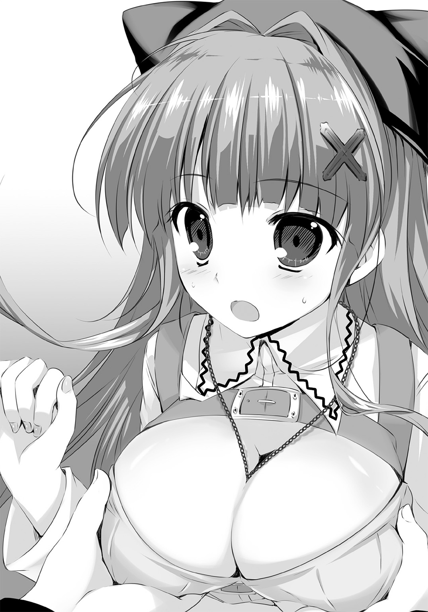
正面から胸をつかみとめた、ありえない姿勢で気遣う俺を、テトリアは見上げた。
そうあくまで、あくまで俺はテトリアを助けようと......してなかったね、うん。おっぱいって言ってたしな、十行ほど前に。おっぱいが足を踏み出すって、はは、転ぶってはははは。
「け、ケガはなさそう――」
「ぅきゃああああああああッ！」
思いきり振り回されたテトリアの拳に、あごを真横から打ち抜かれる。
倒れた俺を彼女は叫びながら踏みつけ、蹴り転がし、大きな石を拾ってちょっとちょっと!?
「待って!? 待ってくれ悪かった！ いや悪かったけど、助けようとした結果の事故っぽい感じだったろ!? なにもここまで......！」
「どうやったら両手に胸が着地する助けかたになんのよっ!? 故意よ故意！ 死ねえー！」
「そのサイズの石はヤバいってぐふっ!? 手伝えなくぐぎゃあ!?」
さんざん折檻を加えられたのち、空き地の隅に放置安定となる。
痛い......痛いけど、手のひらにすばらしい感触が残っている。ふわふわで、ほかほかで、むにゅむにゅで。ああ、でっかかったなぁ！ おっぱいのことを大きく理解した、気がするぞ！
しばらくして、なんとか動けるようになったころには、いろいろ終わっていた。いや。
はじまろうとしていた、って言うほうが正しいか。
「ほ......本当に、治してくださるんですか......？」
ただの木箱に腰かけたテトリアと、その背後に控える二人の南方エルフ。
アニスとイニスがいつ帰ってきたのかも知らないけど、とにかく準備は整ったらしい。
見知らぬ人間も二人いる。テトリアの前で、やはり木箱に座っている不安げな女の子と、もっと不安げな母親らしき女性。どちらも、あまり上等とは言えない、薄汚れた服を着ている。
おそらくは、貧民街側の人間だろう。なかなか医者にもかかれない類の。
「大丈夫ですよ！」
胸元に提げたアクセサリー――親指を太くしたような筒状のそれを、テトリアは自分の右目に当てた。年のころは七、八歳くらいだろう女の子の目を、口の中を、アクセサリー越しにじっと覗きこんでいる。何をやってるんだかさっぱりわからないけど、笑顔だ。
笑顔。アニスもイニスも、とにもかくにも笑顔。
これだけの美少女たちがまとめてにっこりしてると、なんつーか、何もできなくなるな。
「目ぇ赤、口よし、肌熱い......と。うん、お子さん、間違いなく今流行の病気です。わかりやすい症状だと咳が出て、あごが腫れてて目がかすむ。でもまだ、あまり重くなってるわけじゃないですね。ちゃんと治りますよ」
「あの、でも......南区のお医者様のところだと、お薬を買うこともできなくて......」
「お代はお金でなくてもいいです。パン一切れでも、ジャガイモ一個でも。それに、どうしてもムリなら......まぁ、なんとかなりますから。ご心配なく！」
木箱から立ち上がったテトリアが、さて！ とばかりに手のひらを打ち合わせる。
地面に置いた例の巨大ガラスビン、その背中当てを両手でひっつかむや否や、ガパッと勢いよく取り外した――い、や。なんだあれ、背中当てじゃないぞ。
本。
ほ、本だ!? 間違いない、俺の足を治療してくれたときに持ってた、あのクッソ分厚い本！
あんなところにしまってたのか!? どういうこったよ!?
――切削杖まで用意してたけど 本は持ってなかったようだしね
ミザネラとかいう、ダミ声女医の言葉を思い出す。
表紙に何も書かれていない、あの不思議な本がきっとそれのことだ。
俺が勝手に驚く間にも、アニスがシーツをかけたベッドのような台に少女を導く。俺に拭いてほしいって言ってたのがアレか。うーん、情けない。しかしアニスの笑顔は天使だ。
「よし！ いたいた、エスレーゼ」
テトリアがビンに栓をした。
その手のひらでは、こてんと横になった二頭身の女の子が、クークーとお気楽に眠っている――と、すぐに小さな目を開き、むくっと起きあがってのびをした。
白地に緑色の、ワンピースにも似たひらひらな衣装を着ている、謎の精霊。
慌てて身を起こし、俺は刮目した。精霊医術が出る。
なんだかんだで、自分がどうやって治してもらったのか、よく見えてもいなかったんだ！
「い......痛いの？ 切るの......？」
「ぜんぜん痛くないよ」
台に横になる女の子に、テトリアがまた笑いかけた。
「だってお姉ちゃん、君にさわりもしないからね！」
「え......？」
「君にさわるのはこれ、この子。精霊ナノワクト！ とってもかわいいでしょ？ ほらっ」
服を開かれた患者の胸に、ひょいと精霊が乗せられる。
周りの状況など気にもせず、妙なリズムにのってぴょこぴょこ揺れ出す精霊に、たちまち女の子が笑った。およそ、医者にかかってる、なんて気分じゃなくなったのかもしれない。
テトリアは唇に指を立て、女の子にひとつウィンクし――
「ッ喰らえ！ 喰らえ！」
精霊の上に左手をかざし、凜とした声を張り上げた。
ひゅぅ、と空気が渦を巻き、白い光が患者の胸に集まる。テトリアが右手に携えている、例の分厚い本も同様に輝いた。それを見て、
ああ、治る、
って。ただの直感にしては無責任だけど、それでも俺は、そう思ったんだ。
「【疵】を喰らって天へ翔べ！ エスレーゼのナノワクト!!」
一瞬、光が小さく弾け、すぐに消え去る。
呆気にとられている女の子と母親の前で、テトリアは精霊をつまみ上げた。もぐもぐと小さな口を動かし、なにかを一心に食べているそれを手のひらに乗せ、にこっと笑う。
「どう？ まだあご痛い？」
「......い......痛くない」
「目はかすむ？」
「う、ううん......」
「よしっ、完治おめでとう！ 気をつけて帰ってね！」
思わず、俺は立ち上がっていた。呼吸が浅く、速くなっていくのがわかる。
やっぱり......それで終わりなのか。それだけで、治しちまったのか。これだけの規模の街ひとつ、二次閉鎖に追いこむ流行病を。わからないけど、俺には何もわからないけど、でも。
すごい。
「な、治ったんですか......!? 本当に!? 本当にっ......!?」
「おかーさん、治ってるよ！ ぜんぜん体ヘンじゃないもん！」
涙ぐみ、何度も頭を下げる母親に、イニスが何事か話している。
テトリアはにこにこと乾薄紙にメモを書きつけ、アニスは寝台を覆っていたシーツを剝がして、俺のほうへとやってきた。
「うふふふ。さぁ、忙しくなりそうですますー」
「な、なぁアニス！ 今のって、やっぱ......！」
「あら、リドさん。大丈夫でございますですかー？ すべって転んでおケガをお召しと聞きましたですけど」
うーん、この腑に落ちない伝わり方。
すべって転びかけたのはテトリアじゃねーか。いや悪いのはまさしく俺なんだけどさ。
「今の、精霊医術だよな......!? また精霊使って治したんだよな、あれって!?」
「もちろんですます。テトさんはそういうお医者様でございますですから」
「う、うおお......！ あっ、シーツ持つよ。どこ持ってくの？ 俺にも手伝えることある？」
「まあ！ よろしいのですか、ありがとうございますです～！ やることはたくさん、たくさんですますよ、これから忙しくなりますですから！」
けっこうな面積の空き地に、アニスのうれしそうな声が響く。こんな街中にこの広さ、しかも人通りがえらく少ない。貧民街との境目だし、もともと人が寄りつかない場所なんだろう。
要するに、アニスの言葉を半信半疑だった俺だけど――ほどなく、思い知ることになった。
【第二章 勇者の記憶】
「シーツ足りなくなるから！ ほら早く干して！ 大釜の火ももっと強く！」
「り、了解っ......！」
「空き地のまんなかに干しちゃダメだから！ もっと端っこ！ 壁に沿って！」
「な、なんでなのかなそれは!?」
「つべこべ言わない！ 終わったらあっちの鍋かき混ぜて！ そんでまた水汲んできて！」
「ひいい......！」
矢継ぎ早に繰り出される指示に従い、俺は空き地こと仮診療所内を走り回る。
剣術館でもこんなにこき使われたことないぞ!?
ああもう、腰の聖剣うざっ！ すげぇ邪魔！ どっか置きたいけどさすがに手放せないし！
だけどキツいってことは、激務ってことは、きっとそれだけ信用してもらえる。
信用されるのはすなわち、それだけおっぱいに近づくってことだ。そうだよなお師匠さん!? これをこなしきれれば、俺はひとかたならぬ信用を勝ち得られるに違いない！
「歩くなっ！ 男なんだから、走れ走れ！ ダッシュ！」
だけど。なんつーか、どうも釈然としない。
なんで指示出してるのがイニスなんだよ!?
相も変わらずかわいくない、ツンケンした口調で命令する褐色エルフ。
おまけにいつもの民族衣装の上から、妙な仕事着をかぶってやがる――腰のところをキュッと絞った、白いひざ上丈のワンピース。露出度激減だよ！ 目の保養にすらなりゃしない！
でもなんか、ちょっとかわいい服だな。エルフ語でナース服って言うんだってさ。
まぁとりもなおさず、指示を出してる人間が、いちばん俺のこと見てるに違いないわけで。
これ......意味......あるか？ あ、いや、考えんのやめよう。俺はただただ働くぞ！
だって。
「【疵】を喰らって天へ翔べ！ エスレーゼのナノワクトー！」
空き地の反対側で、テトリアの長い髪が躍る。
紡がれる言葉が空気の渦を操り、右手に抱えた本に、左手の先の精霊に、光を抱かせる。
苦しげに横たわっていたはずの患者は、信じられないような表情で起きあがり、たちまち笑顔で、時には涙を流してまで感激し、感謝する。
初めて目にする光景が、何度も何度も繰り返されてるんだ。胸がうずく。ドキドキする。
こんなことが――こんな奇跡を起こせる人間が、この世にいるなんて。
「すごいなぁ......」
「当然よ」
鍋をかき混ぜながらもらした呟きに、乾いたシーツをてきぱき畳みながらイニスが応えた。
「お師様は世界最高の精霊医！ どんな外科医も内科医も、エルフ医もドワーフ医も、きっと神様だって！ お師様の足下にも及ばないどころか、足の裏にだってさわれやしないんだから」
「ずいぶんだな。いやま、自慢したくなる気持ちもわかるよ。うちの師匠とは大違いだ」
「ゲス男の師匠？ 変態の？」
「違っ......ひ、否定しきれん。いや俺がどうとかじゃなくて、師匠がね――」
ウギャアー！ と唐突な悲鳴が聞こえ、俺は一瞬手を止めた。......また、か。
空き地の入口、青天井の下で診察してるテトリアのすぐ後ろ。
布でひときわきっちり仕切られ、天幕までついたテントがある。精霊医療を施された患者は、必ずあの中を通って帰るんだけど......時折、ああいうのが聞こえてくるんだ。
つい昨日、早朝の公園で、俺が恥も外聞もなく絶叫したのと同じような声が。
「......あのさ、イニス」
「あんたさっき、お師様と名前どうこうでモメてたでしょ。お師様をちゃん呼びも言語道断だけど、なんでわたしをナチュラルに呼び捨てるのか理解できないし。様付けでいいから」
「うるせーわ!? ゲス男とか言ってくるよーなやつ、呼び捨てる以外ないだろ！ アニスにもイニスって呼べって言われたし。つーかそのアニスだよ！ いるんだろ、あのテントに!?」
「そうだけど？」
「だけど、って......じ、じゃあやっぱ、あの悲鳴は」
記憶が蘇り、ごくりとのどを鳴らす。ついでにエルフの柔肌の感触も思い出す。
あのときの治療の意味が、いまだによくわかってないんだ、俺は。
大の男を泣かすほどの激痛を伴うひねり、ねじり、伸ばしたり潰したり。しかも確かに今、俺の左足はまるで何事もなく、快調そのものなわけで。
簡易竈に薪をくべながら、イニスがフンと小さく笑った。
「伝染病が流行ってるからって、その患者ばっか来るわけじゃないから。打ち身、切り傷、骨折。中でも、ケガしてから時間が経ってる人には、ああいう処置になるわね」
「ほぉー......いやごめん、ほーとか言ったけどぜんぜんわからん。なんであんな処置がいるんだ？ 昨日とか俺、ケガしてからほんのすぐだったけど、あれも時間経ってたうちなのか？」
「知りたい？」
「ぜ、ぜひとも」
「二度とお師様にちょっかいかけないって約束するなら、教えてあげるから」
「じゃあいいや」
ぼこぼこと、紫っていうか濃いピンクっていうか、強烈な色合いに泡立つ鍋を底のほうから混ぜ返す。この色であんまりニオイしないっていうのが、またなんとも。
一瞬きょとんとなっていたイニスの表情が、カッと怒りに染まる。
「い、いいやって何!? 約束しなさいよ、この変態！ ゲス男！ ゲスクズ！」
「他のことなら大抵約束できるけど、これはムリ。できない。だってさぁ、もうビビッときたわけよ！ 一目見たときに！ 話する前から、この子はものすごいって！」
「胸がでしょ」
「それで実際すごかった！ 自分のケガ治してもらったこともそうだけど、二次閉鎖されてるような街にいきなりやってきて、即この状況だぜ!? しびれるなぁ、興奮するよなぁ」
「胸によね」
「わりといろんな人間に会ってきたつもりだけど、断然気になる。追いかける。ちょっかいだってかけるぜ、あの奇跡の医術をもっと見たい！ 奇跡のおっぱいはもっともっと見たい!!」
握り拳で熱弁する俺に、作業するイニスの手が止まった。
不愉快げな細面に、どこか色味の違う硬さが加わる。
「奇跡じゃないから」
「......ん？ いやま、そのくらいはわかってるけど。奇跡ったら幻みたいなもんだもんな、あんなサイズの幻はないだろー。ほんとでっかくてやーらかくて......」
「胸の話じゃないわよッ、このゴミカスゲスクズ人間が！」
「っ!? て、てめ、あんだけ自分であおっといて......！」
「精霊医術は奇跡なんかじゃない。あくまで人の技、お師様の術！ あんただってちょっとは知ってるでしょ!? 人間の世界で、世間で、あの医術がなんて言われてるか！」
強い剣幕に、俺は口をつぐんだ。世間で。
つまり、精霊医術に関してどんな噂が流れてるのか、ってことか――もちろん知っている。
悪魔の罠。
そういうふうに呼ばれていることしか、むしろ昨日までは知らなかった。
精霊医術が原因となって、街が亡んだとか、国が亡んだとか、大陸が亡んだとかいう伝説。吟遊詩人の十八番にもなっているそれを、聞いたことがないわけじゃないけど。
「俺には......どうでもいいけどな、そんなこと。昨日今日と自分の目で見たことのほうが信じられるし、スゲーのは事実じゃんか！ むしろなんで、精霊医術が奇跡じゃないんだ？」
「......アレを見といてその感想なら、呆れるしかないわね」
「アレ？ って？ なぁ、あんま意地悪すんなって。ちゃんと聞くから、教えてくれよ」
「フン、お断りよ。あんたみたいな男、嫌いだし。それに......どうせ、すぐわかるから」
その言葉の意図を俺が聞き返す前に、イニスちゃーん！ とテトリアの声がかかる。
途端に身も表情も翻し、至極うれしげに一歩踏み出したイニスが、
「手術室！ 準備して！」
「！ はいです！」
続く師の言葉で、急加速した。ナース服を一挙動で脱ぎ去り、褐色の肢体を陽光にさらす。
ギクッとするほどバランスのいいシルエット。姉ほどの豊満さはないものの、決して小さくはない胸と極上の脚線が目を惹きつける。銀髪に結ばれた黒リボンの蝶が、今までになく躍動して......こう、なんてゆーか。仲悪い相手がいい女だと、妙にまごまごするよな。
「つーか......しゅじゅつ、しつ？」
「はいはーい、ぅにゅ。がんばりまーすですよー、うぐぅ」
テントの中から、アニスも――いや。奇怪な物体も姿を現す。
いやアニスなんだけど、わかってるんだけど。
仕事着を脱ぐのと、布で手を拭くのと、同時にやろうとしてこんがらがっちゃってるね。
ナース服のどこかが巨乳に引っかかって、手ぇふさがってるからって身体振ってとろうとしちゃってて、んもーぷるんぷるん。ずっとこんがらがっててくれないかな。
「サイズは十......いや、十五ね！ 広い空き地で助かったわほんと」
また例の本をババババとめくりつつ、テトリアが指示を飛ばす。
「ちょっと範囲が絞りきれないけど、長年の勘によれば『ダガーキャット』が顕現するよ！ ケモノ系なのは間違いないと思うから、イニスちゃん、もしものときは火で！ アニスちゃんはびっくりとかしないでね、手術室解かないでね万が一にも！」
「「はいです！」」
「なになになに、なにがはじまんの!? なんか俺に手伝えることとか！」
「リドくんはそこのシーツぜんぶ干して！」
はーい。
おとなしく雑用を続行する俺のそばを、とてとてとアニスが走り抜けていった。ナース服の攻略はあきらめたらしい。露出度的には残念......だけどやっぱ、かわいいからオッケー。
デレデレと見守る俺に気づきもせず、アニスは時折地面にしゃがんで、何かを配置していった。なにしてんだろ？ 置いてあるのは......石？ か？
「よいしょ。よいしょ。よいしょほーらでーきた。......んんんぅ～」
何かができたらしいアニスが、眉間にシワを寄せて小さくうめく。
力んでる、いや集中してる？ 大きな胸の前で両手を組み、むにゅむにゅと何事か呟いて、
「――手術室！ 設置ぉー！」
彼女が呪文を唱えていたんだと。そう理解すると同時、光が地面を走った。
アニスのかかとを起点とし、青い光線が巨大な正方形を成す。
それは中空に同じものを浮き上がらせ、結びついて立方体と化した。
辺に囲まれたすべての面が光を吸収し、わずかな揺らぎののち、薄い青に輝く透明な壁となる――内部にアニスと、彼女の傍らに立つイニスを残して。
洗濯物を干しに空き地の隅へ行っていなければ、俺も中に取りこまれていた。これは、
「結界......!? な、なんで!?」
「近くには来ないでよね。入ってこれるから」
「えっ......!?」
「手術室は、普通の結界と逆だから」
イニスの言葉に面食らう。正直言って、わけがわからん。
魔術結界を見るのは初めてじゃない。というか、自分で作ったこともある。
よく磨かれた小さな宝石を使えば、誰にでも行える術式ではあるけど。これほど大きなものを、個人で組みあげることもできるのか......しかも、『普通と逆』？ どういうことだ？
「入れる、結界......？ って、そんなわけないか」
結界の目的は、内外の遮断――戦争時には、街の要所を大きく覆ったりする。矢や投石、攻撃魔術なんかの『無生物』を、強度の保つ限り問答無用で跳ね返す、頼もしい防壁だ。
もちろん『生物』だって入ってこれないけど、中から外へ出ることはできる。
命の揺らぎを持つ存在が内側から結界壁に近づくと、魔力の流れがたわんで通れちゃうんだってさ。おもしろそうだから一回やってみたいんだけど、いまだ機会がない。
この手術室が、そういう結界の逆だっていうなら。
それは。......それは。えー、っと......？ ど、どういうことなんですかね？
「喰らえ！ 喰らえ！」
よほど重症なのか、ぐったりと横たわったまま微動だにしない患者に本の光を掲げて。
無邪気に笑う小さな精霊を見つめ、テトリアが表情を引き締めた。
「【疵】を喰らって天へ翔べ！ エスレーゼのナノワクト！」
白光が輝き、空気が集束する。今日何度目かもわからない、命を救うこの儀式。
けれどその光が、消えなかった。
救いを示したはずの輝きが、精霊ナノワクトの両眼に留まって、真っ赤に燃え上がる。その小さな身体が、ボコボコと不気味に膨れあがり――禍々しい赤光が、渦を巻いて溢れだした。
「搬入します。牽引」
イニスが右手をかざし、呪文を唱える。
赤い閃光がひゅっと風を切り、患者の胸の上から手術室の中へと吸い寄せられて、中空で静止した。昨日も見た光景......っ待て？ ちょ、ちょっと待てよ？
今、結界の、手術室の中へ。外から中へ入らなかったか!?
「最大圧魔刃、設置！」
ブンッ、と空気を震わせて、テトリアが手にした白い杖――切削杖に刃が灯る。魔力を真っ白い輝きと化し、木をも岩をも切り裂く光刃。
必殺の武器を左手に携え、本を置いたテトリアが光の壁に近づく。
そしてそのまま、何のこともなく、不可侵領域へと踏みこんでいった。
彼女の輪郭に広がった波紋が、押さえつけられるように消える。外から中へ。普通と真逆。
ということは、中からは。......なんだそりゃ!?
「さーこい!? やっつけちゃうぞぉ、ダガーキャットちゃん！」
ローブを翻して身構えるテトリア。
空き地を取り囲む患者たちには、何が起こってるのか想像もつかないんだろう。しばし不安げにざわめいていたが、やがて何人かが小さな悲鳴をあげた。
毒々しいまでに赤いオーラを肥え太らせ、異形の存在へと変化したナノワクトを目にして。
『キィッ！』
黒々とした毛並み。人間のひざよりも高い体高。
六本の脚で大地を踏みしめたそいつ――ネズミのバケモノとでも言うべきモンスターは、鋭い前歯を剝き出して周囲を威嚇する。
俺は両手を握りしめた。ようやくイニスの言葉を理解する。そうだ。
確かに昨日、目の当たりにしたじゃないか！ 裏路地に突如現れたオークを！
すなわち手術室の中に顕現した、額に赤い発光体を持つネズミ。これもきっと同じ現象で、そう、見るからにネズミ型のモンスターであるそれも、だから。えーと。......ネズミ？
「リードラット!? ま、間違えちーっ！」
キキャアアアッ、と大きく口を開け、リードラットというらしいモンスターが地を蹴る。
俺は初めて見る種類だけど、まぁ、どう考えてもキャットじゃないわな。
テトリアの右手が円を描き、空中に召喚の印を生み出した。
「間違えちゃって恥ずかしくっていたたまれないけどくらえ!? アルトレ、可視ッ！」
重い音とともに魔術印が弾け、螺旋の炎が魔物へと伸びる。
攻撃に反応し、横っ跳びでかわしたはずのリードラットの体が、中空で跳ね返された。
モンスターの赤い瞳には、何もないように映ったのか――広い空き地の半分近くを占める、青い魔力の壁にぶち当たったんだ。俺の理解に間違いはなかった。
この結界からは、手術室からは出られない！ 中に入ったらもう、戦うしかないのか！
『キキャァッ......！』
ケモノの本能でそれを悟ったのか、にわかにリードラットが活発化した。
ちょろちょろと絶え間なく走り回り、テトリアの隙を窺っている。出現の仕方が意味不明とはいえ、魔物は魔物だ。こいつらにとって人間は敵、さらに言うなら食糧でもある。
「――逃げろ、イニスッ!? 狙われてるぞ！」
思わず身を乗り出し、俺がそう叫んだ直後。
いきなり身を翻したリードラットが、手術室の隅にいるイニスたちに躍りかかった。
人の背丈より高く跳ね上がり、大口を開けて襲いかかる――真正面から向けられた殺意を、
「東方風霊、ビホニア、可視」
ゴバォッ！ と叩きつけるような風が、上から下へ押し潰した。
豪風の壁......！ 呪文を唱えたイニスの仕業か！
「牽引」
続くふたつめの呪文に、リードラットの体軀がビクッと反応した。
自分に向けてかざされたイニスの手のひらを、小刻みに震えつつにらんでいる。
その隙を狙ったテトリアの魔術は、跳躍したモンスターの脚をかすめるにとどまった。
「チッ、ちょこまかと......！ イニスちゃん、もっと強く引けない!?」
「思ったより力が、強いですます。これ以上はっ......ていうか、当ててくださいです......！」
「ごもっとも!? ええいっ、アルトレ可視ぅー！」
ちゅどんっ、どかんっ、と火力が炸裂する。えらく派手な展開だ。
無責任なギャラリーと化した患者たちが、わけもわからずテトリアに声援を送っている。
だけどこれ......危うくないか？ これが見世物でもなんでもないのは知ってる。額に変なもんがくっついてるとはいえ、あのモンスターは本物なんだ！ ヘタに時間かけてたら――
『キアアッ！』
俺の思考が終わらないうちに、魔獣が跳び上がり、結界壁を蹴りつけた。
普通はしない、できない行動。テトリアが虚をつかれているのがわかる。
結界に集中しているらしいアニスと、姉を護っているイニスは動けない――嚙まれる！
「活山火霊、ドノヴァナ！ 可視ッ！」
裂帛の声が響くと同時、ドンッ！ と地面から火柱が噴き上がる。
テトリアの、ほんの目と鼻の先。寸前にまで迫っていたリードラットが、全身を炎に呑みこまれた。手術室の中から吹き抜けた風が、立ち尽くす俺のところにまで熱波を運んでくる。
「うりゃああああッ！」
火柱の中に垣間見える炎よりなお赤い輝きに、テトリアが白刃を突き立てた瞬間。
魔獣の全身が光に変わり、断ち割られた発光体に集束していくのが、確かに見えた。
ほどなく炎が消え、手術室も消える。
「お師様！」
イリスの声に、棒立ちしていたテトリアが、大きく後ろへ傾いで――
普通に踏みとどまり、振り返って、にっと笑った。
「治療、完了！ アニスちゃん、イニスちゃん、お疲れさま！」
おおお、と患者たちが歓声をあげる。
事態は理解できなくとも、終わったことはわかったんだろう。今の戦いにテトリアが勝ったことで、一人の患者を救ったことも。
「ナノワクト......。やっぱ、そうなのか......」
シーツを握りしめ、俺は独りごちた。
白光が縮こまるように集束した直後、ほんの小さな手のひらサイズの光が、火柱の中から結界の天井をすり抜けて空へと飛んでいった。
野次馬は気づいてないっぽいけど、炎が消えても、リードラットの消し炭すら出てこない。
相変わらず、意味はわからなかった。けれどもアレは、やっぱり精霊ナノワクト。
人を治療することで、モンスターが現れてしまう......ってことなのか!?
「リドくん！」
ハッとして顔を上げた。大きな目をまたたかせもせずに、テトリアがこっちを見ている。
なぜだかギクギクと胸を強ばらせる俺に、彼女は両手を差し出した。
「新しいシーツ、ちょーだい！ 患者さんはまだまだ、いーっぱいだよ！」
＊＊＊＊＊＊＊＊＊＊
そこからの時間は、まるで怒濤のようにすぎていった。
「尖炎火霊アルトレ、可視！」
牙を剝きだして迫るホワイトウルフを、螺旋状の火焰が貫く。
「活山火霊ドノヴァナ、可視！」
脇目もふらずアニスに突進するドリーベアを、足下からの劫火が焼き尽くす。
「飛沫水霊ネアミータ、可、視っ！」
すばしこく飛び回るリトルキメラを、透明に輝く水弾が撃ち落とす。
様々な種類のモンスターが、テトリアの診察によって生み出された。
そのたびに、アニスが特殊な結界――手術室を展開し、維持する。イニスが彼女のそばに立って護りつつ、補助の魔術などを駆使して援護する。そうして敵の動きを制限しておいて、
「でやあーっ！」
攻撃魔術でダメージを与えたテトリアが、切削杖の一撃でトドメを刺す。
それがどうやら、怪物が顕現した際の戦闘定石らしかった。モンスターは必ず一匹ずつで現れるようで、チームプレイでしとめている。
本来、土木工事とかに使う切削杖の刃は、一度物を切ったら消えてしまう。けどテトリアはうまく立ち回り、モンスターの額に例外なく灯っている赤光の塊を、一撃で断ち割っていた。
あそこが弱点だっていうなら、なんともわかりやすいこった。
実際、テトリアもイニスも素人の動きじゃない。医者というより、どこかの戦闘部隊といった風格ですらある。だけどそれは、やっぱり違って――何度目の戦いだっただろうか。
「くっ......またちょろちょろと......！」
何匹目かのリードラットが、手術室内をすばしこく逃げ回っている。
苛立ちも露にテトリアが魔術を放つも、なかなか捉えることができない。なにせそのモンスター、外見の大部分は、確かにリードラットなんだけども。
なぜか、翼があった。
カラスのようなそれで、手術室の中をばっさばっさと飛び回っている。おまけに、
『ロクジサンジュップン！ ロクジサンジュップン！』
と意味不明な人語を繰り返し口走る始末だ。
いや......意味は、まぁ、どう聞いても六時三十分なんだけど。なんでモンスターが時刻？ 六時三十分に何が？ わ、わからん！ まったくわけがわからない！
イライラさせられる相手な上に、テトリアの足がふらついている。
見るからに体力の限界だった。もう何時間もぶっ続けで治療してる。おまけにこの戦闘、数時間に一回程度かと思いきや、今回は連戦――モンスターの出現に法則性はないのか!?
患者の受け付けは、すでに終了した。新たに列を作られないよう、俺が道へ出て整理してる状況だ。あと少しで終わる。テトリアはそう思ってるのかもしれないけど。
「お、おいイニス!? もう限界だろ、なんとか助けられないのか!?」
「できない。わたしがそれをやっちゃダメだから」
結界の中から、きっぱりした返答。そうなんだろうと思う。俺にも少しはわかってきた。
動けないのはイニスじゃなく、手術室を維持しているアニスだろう。
たぶん、力を結界に使うこと以外、なにもできない状態になっている。
結界ってのは、起動する術者が結界内にいなければ成立しない。それは手術室も同じみたいで、つまりアニスは完全な無防備なんだ。
イニスはここまで、防御と援護にしか術を使ってない。
彼女がテトリアに加勢すると、アニスにとって致命的な隙を生んでしまう――だったら。
左の腰で邪魔っけに鳴るスレイガドロスを、ぐっと握りしめた瞬間。
「爆裂火霊、ホーティス！ イっ――」
必殺とばかりに呪文を唱えかけたテトリアを、リードラットが逆襲した。
翼で空を打ちつつ、六本の脚で地を蹴る。人間にはできない、急激な方向転換による奇襲。
だが、かわせるか。かわせるだろう。攻撃をあきらめれば、よけるには十分な間合いだ。
なのに。
「――可視ッ！」
「なっ......!?」
驚愕する俺の声をかき消して、巨大な火球が炸裂する。
断末魔の叫びすらなく、リードラットが粉微塵になった。跡形もない。見事な威力だ。
けれど、テトリアも倒れている。
爆風をまともに身に受けて、仰向けに転がったまま動かない。
アニスが術を解き、手術室を消し去る。どよめきが折り重なる中、俺は空き地へ走った。
「だ、大丈夫か!? なんてことをっ......ムチャだろ......！」
叫びながら駆け寄って、思わず言葉に詰まってしまう。
倒れたままのテトリアが、小さくうめいた。とっさにローブをかざしたらしく、顔のあたりはきれいなものだ。だけど、左手が焼けただれている。素人目にもなまなかな火傷じゃない。
「おい！ テトリア、おい!? おい！」
「せ......精霊核は......？」
「え!? う、っと、なんだそれ......」
壊せましたです、と駆けつけたイニスが伝えるのを耳にして。
顕現した魔物の額にある、赤い光のことなんだろうと、俺は遅まきながら気づいた。
「い......医者が、こんなんなっちまって。どうすれば......!? あ、あの街医者のとこに――」
ぐ、と服のそでをつかまれた。笑みを震わせながら、テトリアが上半身を起こす。
「だいじょぶ......あと、患者さん、一人だけだから。最後......」
「お、おいおい!? 明日また来てもらえばいいだろ、どう見てもこっちのが重傷だ！」
「いやいや、それがそーでもないのよ、えへへ......」
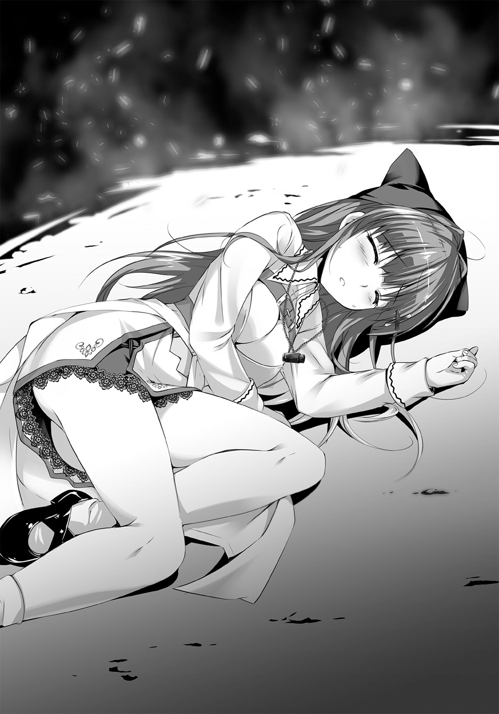
「バカ言うな、俺だってそういう傷は何度も見てる！ って、そ、そうか、そういうこと？ テトリアが自分で自分を治療するとか、だから平気ってことか!?」
「ううん、それはムリ。不可能。だけど、患者は治せるから」
「......そんな！」
食い下がる俺を、イニスが押しのけた。
彼女は、己が師の肌に張りついたローブをハサミで切り、その腕に白い包帯を手際よく巻きつけていく。そのまま止めるんだろう。そうなんだろう。
「......お師様。できましたです」
「ありがと、イニスちゃん。あとちょっとだから、がんばろーね」
「はいです」
止めない。よろよろと歩むテトリアを支えているだけで、何も言わない。最後に残った患者のほうが、このまま診察してもらっていいのだろうかと、戸惑った顔をしている。
当然だ。自分よりはるかに具合の悪そうな医者を頼りたい患者もいないだろう。でも、
「あと一人なら......いける、の、か......？」
奥歯を嚙み、状況を読み取ろうと努めた。
精霊医は、なにも外科医みたいに、小刀で肌を切るわけじゃない。内科医みたいに、薬草をすり潰すわけじゃない。そもそも俺は門外漢だ......あと一人。何事もないなら。
右手だけで胸のアクセサリーを使い、患者を診察したテトリアが、ゆっくりと立ち上がる。
「アニスちゃん。手術室を」
「っ......ちょ、ちょっと待て!? またなのかよ!?」
慌てて彼女の前に立ちふさがる。結界を指示したってことは、また魔物が現れるわけだ。
いくらなんでも見過ごせない！
「戦えるわけないだろ!? そんな身体で！ 喰い殺されるのがオチだ！」
「大丈夫大丈夫。精霊医ってね、みんな一流の魔術士でもあるんだよ？ 勝っちゃうぞー」
「ウソつけ！ 他の精霊医はどうだか知らないけど、あんたはそこまでじゃないだろ！」
「なにおぅ!? い、一流だもん！ チョー一流だも――」
「術の狙いが甘い、間の取りかたが悪い、反応が遅い！ 少なくとも専業じゃない！」
「う、うぐぅっ......!? なんで急にそんなえらそーなの......！」
「なぁ、どうしてもか!? その患者、どうしても今日治療しなきゃならないほど悪いのか!?」
「早いほうがいい！」
その答えだけはきっぱりと、微塵も迷わずはっきりと。
わかった、とひとつ頷いて、俺は腰の剣を握った。
「じゃあ、俺にやらせてくれ」
「......はぇ？」
「モンスターを倒すのは、医者本人じゃないとダメなのか？ そうじゃないなら俺がやる。君のかわりに手術室に入って、出てくるやつを斬ればいいだけだろ？」
「それは......まぁ、そうだけど。ダメだよ」
「な、なんでだ!? そんな身体じゃムリだって、絶対！」
「そうだとしても、リドくんはダメ。頼むとしてもイニスちゃんに頼む」
「いや、そんなっ......イニスは、だって、なぁ......!?」
引っこめ、とイニスが俺を端的にこき下ろした。
「あんたが判断することじゃない。お師様が大丈夫って言ったら大丈夫なのよ！ シロートが出しゃばるとかありえないから！」
「これが出しゃばりか!? ふざけんな！ お前だって昨日聞いてただろ、俺はなぁ――」
ジャキッ、と聖剣スレイガドロスを、鞘ごと彼女たちに突きつける。
「おっぱいを護らなきゃいけないんだよ!! この世で護るべきものを！」
「「サイテー」」
「さい!? なぜ!? す、少なくとも、そんな状態の女の子よりゃマシに動けるっつーの！」
「だから、たとえそうでも――っう......!?」
痛みに顔をゆがめ、テトリアが地面にひざを落とした。
呼吸がひどく荒い。転がった切削杖をさぐる右手にも、まるで力がないみたいだ。どんなモンスターが出てくるにせよ、戦えるわけがない......
あのぅー、とアニスが挙手しつつ声をあげた。
「今回だけ、ということでいかがですでしょう......？ もう日も落ちてしまいますです」
「......！ でも......」
「わかってますです、テトさん。本当に今回だけ。リドさんも、それでお願いしますです」
妙なところを強調したお願いに、戸惑いつつも頷く。
なんでそんなポイントを......？ まだまだ信用されてないんだろうけど。あるいはアレか、ヘボだと思われてるのか？ なめられちゃってる？
だとしたら、さすがに心外だ。俺も一応、男の子だからな。
「......。わかったよ」
お師様！ と顔をしかめるイニスを制して、テトリアが小さく頷いた。
「本当に申し訳ないけど、今回だけお願いするね。この、一回だけ......ごめんなさい」
「い、いや、いいんだって！ 俺がやりたいって言ってるんだから！」
「ケガしても、治してあげられないかもしれないけど......」
「マジかあーっ!? それはマジかよ、い、いやいや大丈夫！ 俺は大丈夫っス！」
最高に不安そうな顔の患者をなだめて寝台に寝かせ、テトリアは苦笑した。
「冗談。心配してくれてありがと......じゃ、まかせるね？ 危ないと思ったら助けるから」
「お医者に助けられる剣士なんて、喜劇にもならないっての」
「あはは、大丈夫！ 君は喜劇向きだと思うよー」
おう、どういう意味かよくわからないけど、深くは考えないことにしよう！
「手術室ぁ、設置ぉー！」
アニスが手術室を展開する。イニスはすでに姉のそばだ。
テトリアに目で指示を受け、俺は生まれて初めて結界に近づいた。
薄青い境界に触れる瞬間、空気が振動するような感覚が肌を這う。ぞわぞわするようなその一瞬に――俺は魔力壁の中に踏み入っていた。
まるで水のない水面に飛びこんだみたいだ。想像とは微妙に違ったけど、こりゃスゲェ！ まさか結界から出るんじゃなくて、入ることになるとは思わなかったぜ！
「たぶん、またリードラットが出るよ......！ ムカツクぐらいすばしっこいけど、精霊核を、えっと、額にある赤い光の部分を狙って！ それを壊せれば一発なの、でも硬いから！ すごく！ あっそうだ、切削杖切削杖！ リドくーん!? 普通の剣じゃキツいからっ......!?」
「大丈夫だ」
端的に応えて、俺は剣を抜いた。この世でひとつ。ふた振りとない銘の武器。
スレイガドロス。世にも珍しい、片刃の聖剣。よくよく考えれば、これがお前の初陣だな。
手術室の外で精霊が白く輝き、患者の病を治療する。そのまま、光が赤色に変じた。イニスが何事か呟き、手術室の中へとそれを招き寄せる。
なるほど、と俺はもうひとつ理解した。ナノワクトも精霊――魔力的に偏った存在。肉体的に見れば無生物だから、普通は外にも内にも魔力壁を通り抜けることはできないけど。
モンスター化したあとは、生物。手術室の場合、外から中へなら入ってこれるってわけか。
でも、出ることはできない。この俺を倒さない限りは。
「女の子が......あんなになってまで」
渦巻く赤光がかさを増し、顕現のオーラを見せはじめる。
なぜテトリアが、ああまでできるのか――危険な魔獣に立ち向かい、手ひどいキズを負ってなお、施療を続けられるのか。俺にはわからない。わかったふりもできない。
だから俺にできるのは、原因に剣を向けることだけだ。
女の子があんなにもキズつくなんて、あっちゃならない。
特に俺の目の前では、絶対にあっちゃならない！
「いくぞネズミがあッ！」
一刀両断にケリをつけるべく、俺は粘つく光へと踏みこんで――
『カレーラ―――イス！』
バランスを崩し、無様にたたらを踏んだ。
啞然として見上げた目の前で、ブーンとなにかが旋回する。巨大な虫――じゃ、ない。
ころころの二頭身だったナノワクトが瘦せて、すっぱだかになって、ヒゲと羽を生やしたような。そんな手のひらサイズのオッサンが、カナブンみたいな音を立てて飛び回っている。
『カレーライス、カレーラーイス！ からーくて、あまぁーくて、おいしいー！ カレー！』
なんだこれ......モンスター？ モンスターだな。いっそモンスターより禍々しいけど、たぶん嘆き妖精の亜種だろう。カレーライスはレクセンタルの名物で、とってもおいしい料理だ。
......リードラットでもなんでもないんスけど？
訴えかける俺の視線に、テトリアはぽりぽりと頰をかいた。
「間違えちー」
そうかい。
『おーぉーカレェー！ ビーフカレーだけどー、ビーフじゃなーい！ だけどカレーは――』
「とうっ」
『ぎゃあああああ!?』
ずばー、と縦に一刀両断。オッサンピクシーは光と化し、天を目指して翔んでいった。
この上なく不本意な初陣を済ませた聖剣を、無言で鞘へと納める。
テトリアが極めて微妙な笑顔で、アニスイニスの拍手とともに迎えてくれた。
「す、すごーい！ わー、リドくん強いねー！」
「すばらしいですます、カッコいいですますー」
「ほんと、ぷふっ、カッコいいから、くっくっ」
「......。左手、大丈夫なのか？」
いろいろとスルーしてそう問う俺に、テトリアはにへっと相好を崩した。
「超痛いよ。ありがとう」
＊＊＊＊＊＊＊＊＊＊
空き地から見える位置にある宿屋に、イニスが部屋をとってくれていた。
治療開始まで姿を見せなかった彼女は、テトリアのかわりに役所を再訪して空き地の使用許可をとったり、貧民街を訪ねて最初の患者である母子に営業したりと、いろいろがんばってたらしい。性格に見合わず、大した裏方だ。宿のことなんてぜんぜん考えてなかった。
まぁそのあと、テトリアはすぐ部屋で床に就き、アニスはそばで看病に。
残った俺とイニスが差し向かい、宿の食堂でディナーとしゃれこんだわけだが――ハハハ、俺ぁもう二度とごめんだね。人がどう話しかけても無視するか鼻で笑いやがって。あんな性悪エルフ初めて見た。仕事ができるのはわかったけどよ、そこが腹立つ鼻につく。
てなわけで、あまり食った気がしない。
何かないかと部屋で荷物をさぐるも、上着のポケットにクルミを数個見つけただけだった。
「酒場があったよなー。まぁ閉鎖っつっても二次だし、されたのも昨日だし、物資は届いてるだろ。いきなり路銀注ぎこむのも心許ないけど......」
ちゃり、と布製のサイフを覗きこむ。こうなった以上、お金は計画的に使わないとな。いつどこで入り用になるかわからないし。たとえばケガとか。
ケガ。......テトリアは、大丈夫だろうか。
「大丈夫じゃないよな、あれは......」
そんなにまじまじと患部を見たわけじゃない。でも、状況と経験則から言って、あれは厳しいもんがある――でも、それでいい。きっぱり休んだほうが、きっといい。
今日一日だけで、普通の医者何人分の患者を救ったんだろう、あの子は。
あれが精霊医術。そしてイニスいわく、最高の精霊医......か。
胸がドキドキする。昼間からずっとしてる。
なんなんだろこれ、正体不明の高揚だ。恋？ おっぱい？ ダメだぞ、今は不謹慎だ。こうしている間も、あの子はケガを治そうと痛みに耐えているのに。
「よし......お見舞い行こう」
果物かなにか持って、少しだけ部屋を覗いてみよう。
寝てたら枕元に置いとくだけでもいい。金もまぁ大丈夫だ、いざとなったらスレイガドロスとか売っ払えばいいわけだし。あーでも、もう日も落ちちゃったからなぁ。
こんな時間に開いてる店っつったら、普通は果物屋じゃなくて――
「......!! そう、かっ......しまった......！」
悔恨のあまり、思わずサイフを握り潰してしまった。
夜。夜の街。夜に開いてる、店。
それはいわゆる、パラダイス。うれしはずかし酒池肉林。
メセトワくらい大きな街なら、無論いくつもあるだろう。
だけど、俺は行けない。今はもう行くことができない！
「ちっくしょう、なんてこった......！ どうする!? こ、こっそり一回くらいなら......いやいや！ お師匠さんとの約束は――」
「リぃードくーん！」
「ぅおああっ!?」
ばしこーん！ と過度な力とずいぶんなタイミングで開かれたドアに、思わず後ずさる。
他のお客さんに迷惑だから、そんな開けかたしちゃダメだろに。てゆーか、
「テ......テトリアさん!? な、なにしてっ......!?」
「あはー、うふふふ、ほんとにさん付けしちゃってる。いーよもう気にしなくて！ 変態のクセして、妙なとこマジメなんだねぇリドくんは」
とことこと入ってきたのは、寝間着姿のテトリアだった。
宿の物なんだろう水色パジャマの上から、いつもの白ローブを羽織っている。いや待てよ、ローブは魔術で焦げたはず。まさかの予備ですか？ こんなかさばるもんを何着も？
じゃなくて。
「お、起きてちゃダメだろ、ケガしてるんだから！ つーかドアをあんた、手ぇ大丈夫か!?」
「うん？ これ？ へーきへーき。そんなことよりさぁ、飲もうぜ少年！」
「はい!?」
白いローブの内側から、お酒のビンを取り出すテトリア。ぽてっとベッドにお尻を乗せてテーブルを引き寄せ、どこに持っていたのかコップやナッツの皿をも並べた。
酒。これまたまさかの酒。
「い......や、その。テ、テトリアさん、ちゃん」
「意味わからんち。ちゃん付けはキモいって言ったでしょ、さん付けはもう他人行儀だけど」
「じ、じゃあ、テトリア。あれこれ言いたいことはあるけど、まず子供がお酒飲んじゃ――」
「子供じゃないやい!? なにを言うかなこの変態は！ あたしはオトナなの！」
「あっそ。でもじゃあ、ケガ人がお酒飲んじゃ――」
「こんなケガ大したことないってば！ オトナだから！ オトナだから平気！」
「もう酔ってんのか......!?」
何なんだ、このむやみなハイテンションは。それこそ間違って酒飲んだ子供か。
彼女の左手をじっと見つめる俺に、えらくいたずらな笑顔が応えた。
「リドくん、お医者をなめちゃダメだよ？ だいじょぶって言ったら、だいじょーぶなの」
「いや、あ、えっ......？ ......ムリしてるんじゃ......」
「しないって。思いのほかに軽傷だった、なんてこと、剣士やってたらよくあるでしょ？」
返事に困った――ないことはない、と思わない、こともない。
事実テトリアはひょいひょいと、事もなげに左手を動かしてるんだ。
あの爆発で、軽傷ですんだ、のか......
「ま、ま、一杯いきなさい。飲めるんでしょ？」
「な......何なんだよ......!?」
「なにって、慰労に決まってるじゃない！ 今日はほんと、お疲れさまでしたよー」
誰よりも疲れているに違いない少女が、手ずから琥珀色の液体を注いでくれた。自分のコップにもこぷこぷと注ぎ入れ、幸せそうににまーっと笑う。
オッサンかよ、とは思うものの――もはやこちらも、苦笑するしかない。
「確かに......まったく、お疲れさまだったよな」
「でしょ。はい、かんぱーい」
コツン、と軽く木のコップを合わせる。グラスじゃないのはご愛嬌だ。
のどの奥へ酒を流しこむと、得も言われぬ芳香が体内で熱に変わるのがわかった。
沁みる。なんだかんだで俺も、走り回って終わった一日だったしな。
「つか、そうだ......聞きたいことが山積みだぞ。出会ってからこっち、わからないことだらけなんだ！ なぁテトリア、精霊医術っていうか、ナノワクトって一体――」
「んにゅ～？ にゃのわくとぉー？」
「おいちょっとー!? なんだそりゃ、えっ、なんなんだそりゃ!? 早すぎだろ酔うの！」
コップ半分、いや、三分の一もいってない。というか飲みはじめて一分経ってない。
ものの見事に顔全体を赤らめ、タコのごとき軟体と化したテトリアが、こてんとテーブルにあごをあずける。うわ、ほっぺたが髪の毛とおんなじ色になってら。弱すぎだろ。
「ナノワクチョーはねぇ。かぁわいいよねぇー」
「なんで酒飲んだんだよ......？ 俺も大人じゃないっぽいけど、完全に子供だろあんたは」
「うるさい、ちょっと背ぇ低いからってなめんにぁ！ 年齢的にはオトナなの！ レディ！」
「はいはい。あ、でもえらいな、ちゃんと水も持ってきてんだ。ていうか年齢的にはって、そういやテトリアって何歳？」
「んー。九十九歳」
「子供っつーかガキかい」
今なら胸のサイズとか聞いてもあっさり答えてくれそうだけど、逆にマジメな質問にはちゃんとした返事なんてこないだろう。もういいや。でもこの酒はなかなか旨いな。
ちびちび飲んでいると、もっとちびちびなめているテトリアが見上げてきた。
「大人じゃない......っぽいって、なに？」
「ん？ ......あ。そんなこと、言っちまってたか......」
つかなんでそれを聞きとがめるんだよ、とろけたリンゴみたいな顔してよ。
慰労に来たとか言いながら、なんて疲れる女の子だ。
「レディに歳を聞いたんだから、自分も言うべきでしょー。リドくん大人じゃないの？ 言われてみれば見た目じゃびみょーかもね、少年？ 青年？ これだから背の高い人間は!!」
「い、いきなりそんなことで怒るなよ!? ......んー、なんて言ったらいいかなぁ」
「どっか悪いんじゃないの？」
「......え」
「リドくん、どこか悪いとこ、あるんじゃないの？」
彼女の瞳がきらめくような金色なのだと、俺は今、初めて知った。
思わずそのまま見つめてしまう。単に医者として、気遣いから出た言葉なのか？ でもそれにしては確信めいていた。胸の鼓動が高まってくる。
ああ。そうか。
どうして、昨日――テトリアに初めて出逢ったあのとき、面倒なナンパなんてしちゃったのか。巨乳につられたんだと思ってた。旅につきまとってまで、護る価値のあるおっぱいだと。
だけどやっぱり、違う。テトリアがお医者だったからだ。きっとすごいお医者で、
俺のことも治してくれるんじゃないか、
って。そう思ったからだ。
話そう。そう決めた矢先、ふいっ、と金色の目がそっぽを向いた。
テトリアの手が、ローブの内側から小ビンを取り出す。一本、二本、三本。なにやら乳白色の、どろっとした液体が入ってるみたいだ。
「テ......テトリア？ それは？」
「あたし特製、酔い覚まし」
「早くねえ!? さっきからなにもかも早くねえ!? たぶんだけど、コップ半分以下で酔う人は酔い覚まし飲んでも意味ないんじゃないかな！」
「うるさーの。あ、リドくんの悪いとこって口でしょ、口！ あと手癖も悪いよね死ぬほど。ひどいんだー、にゃははははは」
完全に酔っぱらいな笑顔を披露する彼女に、もう一度苦笑する。不思議な女の子だ。
見つめられるより、問い詰められるより、むしろ言いやすくなったような。
きゅぽ、と小ビンの栓を開けるテトリアの横顔を見ながら、
「俺、記憶がないんだ」
ごく端的に、そう告げた。
「......。はぇ......？」
「小さいころのことを、ほとんど覚えてない。だから自分が何歳かわからなくて。俺を拾ってくれた人が、十歳っぽいから十歳だっつって、そのときから数えたら十八歳なんだけど」
こと、とコップをテーブルに戻して、俺は両手の指を丸める。
「テトリアの言う通り......俺は、どっかが、悪い。んじゃないかと」
「......記憶......」
「き、気味悪いよな、こんなやつ。一応、記憶があるうちからは、リッシードで......剣士ってことで通してきてるけど。俺自身も、思い出したいって感じじゃないんだ。わけわかんないと思うけど、なんていうか......こう......！」
「喪失......」
「思い出さなきゃ、ならない、っていうか。ずっとそういう気持ちがあって、胸の奥がかゆいままなんだよ。とあるお医者には『一種の病気だ』って言われた、そう、記憶喪失っていうんだってな？ 人には治せないとも言われたから、自分で治すつもりではいるんだけど。うん、だから......だから、別に。ああ、何言ってんだ俺――」
すくっ、とテトリアが立ち上がった。せっかく栓を抜いた酔い覚ましもそのままに。
「第三種ッ！」
「へ？」
きょとんと見上げる俺を置いて、一直線にドアへ向かい、部屋から出て行く。
まったくためらいのない行動に、追いすがる言葉すら口にできなかった。わずかに上げかけた右手も、そのまま力なくベッドに下ろす。第......三種？ な、なんだろう？
また、見限られた......かな？
切り出したのは自分からのクセに、どんどん膨れあがる不安と緊張に押されて、言葉を止めることができなかった。こりゃもう、相手してもらえないかな。
小さくため息をついたとき、ドアが思いっきりぶち開けられた。
巨大なリュックサックを抱えて、テトリアが部屋の中に戻ってくる。両手がふさがってどうにもできず、体当たりでなんとかしたみたいだ。よくドア壊れなかったな。
「お......おかえり......？」
「たらいま」
ぺたっと床に直接腰を下ろし、テトリアがリュックの中身をさぐる。それ確か、イニスの荷物だったはずでは。いや、あいつが持ってただけで、テトリアの私物なのか？
液体の入ったガラスの小ビン。陶器の小ビン。なぜか片手鍋。もろもろ取り出しながら、
「もっと話して」
きょとんとする俺に、彼女はそう促した。
「え......もっと、って」
「記憶がないって、ぜんぜんなんにも覚えてないの？ 少しの手掛かりもない？ いちばん古い記憶はどんなの？ 記憶をなくしたと思しき状況は？ なんでもいいの、教えて」
「......！ い......いいのか!? 話しても......!?」
「もちろん？ 精霊医は聞かなきゃ治せないからね！」
聞かないと、治せない。それは、じゃあ、つまり。
「記憶。記憶。記憶喪失。なるほど、確かに難しいね」
小脇に抱えていた、例の本――診療時にずっと携えていた、焦げ茶の表紙の分厚いそれをドンと床に置き、テトリアはページをめくる。
「精霊医術は病気をみっつに分けるの。まず治せるものと、治せないもの。それぞれ第一種と第二種。第三種は、治せるかどうかよくわかんないもの」
「わ、わかんない......っすか」
「ま、第三種が圧倒的に多いんだけどね。記憶喪失もそう。時折聞く症状ではあるけど、物理医術でどうこうって類じゃない。外傷とも心病とも言われてるから、精霊医術での治療が正しいかどうかもわからない......慎重にいかないと。だからまずは、なんでも話してみて」
「そ......それじゃ、テトリア......！」
「うん。あたしが治してあげる。リドくんの記憶、きっと思い出させてあげるから！」
俺に向けられたその微笑みは、最高に愛らしく、まっすぐで、なによりも頼もしい。
初めて味わう、医者の笑顔だった。
奥歯を嚙みしめて、こみあげるものをこらえる。正直、感激で......どうすればいいのか。今すぐ彼女に駆け寄って抱きしめたい。それは怒られるだろうから、ど、土下座？ 土下座か？
いや、まて。
「で......でも俺、ほんとわからないから。マジで、だから、自信が......」
「うーんそっかー。じゃあちょっと難しいけど、でもがんばるよ！」
「い、いや、そうじゃなくて。もしかしたら俺......悪いやつだったかも、しれないし」
その可能性に気づくと、誰もが離れていった。俺も追わなかった。追えなかった。
いろんなものを片手鍋にぶちこみながら、テトリアが横目で俺を見る。
「どうしてそう思うの？」
「......俺を拾ってくれた人、俺の師匠に聞いたんだけど。全身血まみれで歩いてたんだと。どう見ても十歳かそこらのガキが、山すその道をたった一人で」
強烈に最悪なシチュエーションだ。あの人に出会わなければ、どうなってたことか。
「保護されて教会で治療受けて、その血が俺の血じゃないことがわかって、で、俺が覚えてるのはその先から。初めてお師匠さんの家でメシ食わせてもらったあたりからだな。それがうまくってさ。いやどうでもいいけど」
「ううん、なんでも教えて。でもじゃあ、原因はあまり特定できないんだね」
「うん......原因に、治すヒントがあるのか？」
「熾火火霊、シーヴァ、微可視」
ぽわ、と火の玉みたいな精霊が召喚され、ふよふよと宙を漂った。
鍋を温めながら、テトリアは小さく肩をすくめる。
「もちろんそういう期待もあるけど。でも、ほとんど覚えてないって言ってたでしょ？ それに自分で治そうとしてるなら、少しは心当たりあるのかな、って。ひとつでもふたつでも」
「ああ......ひとつだけ。記憶かどうかもわからないけど。でも、昔あったことだと思う」
「？ どういうこと......？」
「夢を見るんだ。同じ内容の夢を、八年前から何百回も見てる。たぶん、あれは父親の、俺のオヤジの夢で。それにすがって、今も......生きてる」
すぐに理解してくれたらしく、彼女は神妙に頷く。父親の面影すら、明らかにならない。
しかし、俺は大きく胸を張った。テトリアが真顔のまま小首を傾げるほどに。
「本当にオヤジかどうかはわからない。だけどいつも同じことを言うんだ。大きな男の影が、小さかった俺に剣と、護るべきものを教えてくれた！」
「え」
「この世で護るべきものは、国と誇りとおっぱい!! おっぱい!! おっぱいの、みっつだ!!」
「なんで三回言ったの!?」
「その人影の教えはそれしか覚えてない！ 剣のことは頭にゃ残ってないし、夢もその一場面を永久リピートだし。でもきっと、いいや絶対、あれは俺のオヤジだと思うんだ！」
「あたしもそう思う......って待って？ リドくんそれ、もしかして」
頰を引きつらせた彼女の視線で、何を言いたいのか理解する。俺は胸を張ったまま頷いた。
「オヤジの言ってることを理解できれば、俺自身か、あるいはオヤジのことを思い出せるかもしれないって思う。だから俺は、おっぱいを護らなきゃいけない。護るためには、おっぱいを知らなきゃいけない......！ カタチはどんなで、さわったらどんなで、匂いはどんなで！」
「......だから？」
「だから！ 誰かがおっぱいもませてくれたら、記憶が戻るんじゃないかなって！ できるだけ大きなおっぱいの誰かが！ ナマならきっと効果倍増！ だから、ね！ ねっ！」
「せいッ！」
「がふっ!?」
あごに拳を受け、俺は床に沈んだ。
我知らず、テトリアの射程距離内までにじり寄ってたらしい。恐るべし我が本能。
「アホじゃないの!? おっぱいもんで記憶戻ったら世話ないでしょ！ 医者いらずでしょ！」
「や、やっぱない、かな？」
「ないわよ！ 絶対ない、と思う！ ない......はず。え、ない、よね......？」
不確定？ 不確定なのか？ なら試してみるよりほかないのでは。ナマで。
俺の目の色から言いたいことを察したのか、テトリアが両手で自分の胸をかばう。
「だ、だまそうったってそうはいかないわよ!? 素人のくせに、悪知恵働かせちゃって！」
「いや悪知恵っていうか、その、まぁ......はい」
「むしろほんとにそうなら、フーゾクでも行けばいいんじゃないの？」
言われて、思わずドキッとする。
こんなかわいい子の口から、そんな単語が。ちょっと、こう、くるものがあるよね！
「確かに......君の言う通りだ。お店に行ったら、もめるのかもしれない」
「でしょ」
「でっかいのでもちっちゃいのでも、好きなだけ」
「でしょ」
「でも......俺は行かない。夜のお店とか、そういうところじゃ、記憶は戻ってこないと思う」
俺は立ち上がり、窓から遠くメセトワの街並みを望んだ。暗くてなんも見えねえ。
「おっぱいっていうのはね、誰にも気兼ねせず、自由でなんというか生まれたままでなきゃあダメなんだ。お店のおっぱいもいい。でも、問題は俺の手......俺のこの手が、おっぱいといっしょにお金ももんでいるようじゃあ、きっとなにも思い出せない」
「え、じゃなに、行ったことないの!? エロいお店!?」
「ないとも」
ウソです。行ったことはある、そう、パラダイスに。酒池肉林に。
だけど、今はもう、行けない――約束したんだ。俺が勇者になる、もっとずっと前に！
『リドよ。ここ最近、アルバイトやら何やら、小金を貯めこんどるようだな。いろいろと真っ盛りなおぬしの企み、この師にはすべて筒抜けであるのだぞ。よいか、よく聞け......
おぬしは風俗へ行ってはならぬ!!
絶対にだ！ できれば一生行かぬがよい。タガが外れるのが目に見えておる。一回分の代金をバイトで貯めていい思い出に、などというルートは貴様の未来にはない！ めくるめくウッフンワールドに身も心も持ち崩し、いわんや貴様を高弟と認めるこの剣術館の名も地に落ちるわい！ よいな、リド。おぬしが勇者ででもあれば話は別だが、そうでもない限りあの手の遊びはワシの名をもって禁とする。わかったな!? わかったら口をつぐんでおれ！ ワシはちとキャロルちゃんに会いに、いやっ、キャラダイン山へ武者修行に出てくれるわ！』
お師匠さん！ 今より若く純真だった俺は、とりあえずお師匠さんの一人娘に告げ口だけして禁則には従いましたけど。そのあと、勇者になったんで......行ったんですよ。
首都のお店に。ウッフンワールドとやらに。
あなたの娘を横に三倍、容積五倍にしたなにかとエンカウントしました。
怖かった......死ぬほど怖かった。なぜあんな街中にトロルのボスが。危うくスレイガドロスに初陣飾らせるとこだった。結局、なんにもできずに店から逃げ出しちまったけど。
俺の運が悪かっただけかもしれない。エルフ語でいう埋罠に当たっただけかもしれない。
でも俺もう勇者じゃないんだよなあああ ッ！
ッ！
ちくしょー！ やっちまったよ、さっき思い出したわこの約束！ あっさり「勇者やめます」なんて言うんじゃなかった！ お師匠さんの言いつけは、絶対だ！
俺はもう、ウッフンワールドの住人にはなれない......よって。
「俺の目的はおっぱいじゃない。あくまで記憶を取り戻す、その一手段にすぎないんだ」
ちょっとでもカッコつけて、テトリアのおっぱいへの道を切り拓かねばならない！
「清らかな気持ちでおっぱいをもめれば、きっとなにもかも思い出せる......だから――」
「まぁほんとにそれで戻ってくる記憶なら、いっそなくてもいいだろうしねー」
「え。いや。あの」
「でもちょっと見直したわ。意外とスレてないのね、とてもそうは思えなかったけど」
うるせぇや。
すっかり酔いも覚めた表情で、テトリアがやれやれと苦笑する。
「良かれ悪しかれ、いろいろ考えたわけね。君の奇行の理由も、ちょっとはわかったよ」
「な......治せそう？」
「んー。まずは、あたしがどうこうってより、リドくんが思い出すきっかけを増やしたい」
「きっかけ。なるほど。んでも、その夢くらいしか......」
不意に、脳裏をよぎるものがあった。
現実の記憶。夢のことじゃない。なんでだ？ 関係ないだろ。関係ないはずなのに。
あの日の、景色。
――もう、終わっちゃったよ？
「たとえばね」
勝手に表情を曇らせる俺をどう思ったのか、テトリアはぴっと人差し指を立てた。
「今この街で流行ってる伝染病、ひょっとしたら動物が原因かも、ってあたしは思ってる」
「どーぶつ!? な、なんでまた？」
「ナノワクトが魔物になるとき、最後の『食疵』の内容を顕現に反映させることが多いの。今日、獣型モンスターが多かったでしょ？ まぁ、顕現した患者さんに話を聞く限り、まだピンとくるものはなかったけど......でもしばらく、その方向で聞きこんでみようって感じ。もし何かの動物が原因なら、一時的にでも街から取り除けば、病気を食い止められる」
「へぇー......！ 伝染病なんて、降って湧いてくるみたいなもんじゃなかったのか」
「確かに定説だね。神様が怒ってるとか、どこそこの妖精のたたりだとか。今回のも、しばらく前の地震が原因だーなんて言ってる人もいるし。どれもまったく根拠のないことだよ！」
「そ、そーなんだなー......」
「動物関係でも、ネコが災いを運んでくるとか言って、勝手に毛嫌いしたりね。まぁ、たまに大当たりするからややこしいんだけど......」
だんだんテトリアが何を言ってるのか、理解が追いつかなくなってくる。
でも、なんかこう......なんかこう！ お医者の言ってることがわからないと、妙に安心するとか、あるよね！ 俺の知らないすごいことを、この子はいっぱい知ってるんだ。
「もちろん、原因だけじゃ断定できないけどね。動物のことだって、まだまだ推測だし」
「わかった！ わかんないけど！ 取り急ぎ、俺はそのあれ、なにをすればいいのかな!?」
「あはは、そんな焦らなくていいよ。ゆっくりやってこーじゃない」
「う、お、おう、そっか。あ、その、金とかは一応。こう見えても、わりとけっこう」
「ん？ 治療代のこと？」
「ああ」
「いらにゃい」
え。いやいや、それはさすがに......っまさか!?
昼間の患者の扱いからして、代金はもらえるところからもらう的な主義かと思ってたんだけど。誰からも見返りを求めるつもりはない、とか？
な、なんてすごい女の子なんだ――
「うふふ......うふふふふふふふふふ」
あれ。
なんてすごい......すごい、不気味な含み笑いなんだけど。テ、テトちゃん？
「ふふふふふふふうふうふ、ごめんね不謹慎だよね。いいの、ほんと、気にしないで」
「......。な......なんか怖いから、やっぱりお金......」
「いーからいーから。あ、ただね、時間かかっちゃうかもしれない。だからもしよかったら、今日みたいにアニスちゃんやイニスちゃんを手伝ってもらえないかな？ めどがつくまで」
「あ、ああ！ そんなこと、おやすい御用だよ！」
なんかこう。見返り渡しとかないと薄ぼんやり不安とか、あるよね。
「ありがと！ 骨折のときにちょっと診たけど、リドくん別に体は変じゃないでしょ？ 見えないどっかに消えないアザがあったり、おかしな魔術印が描かれてたりする？」
「し、しないしない。どんなだよそれ」
「あははは。だとしたらやっぱり、病気の原因は体内！ それを調べるおいしいスープ、もうすぐできるからね」
「ス......スープ!? え、つくってくれてんの!?」
「うん。もちょっと待っててちょー」
フフンフン、と鼻歌まじりにネギまで取り出すテトリア。
俺は改めて感極まった――八年間、ずっと頭を悩ませてることを偏見なく病と診断した上、いっしょに立ち向かってくれる。
おまけに、おまけに生涯初、『女の子の手料理』を味わわせてくれるだなんて！
決めた。もう決めた。俺はこの子を護る。この子のおっぱいを、護ってみせるぞ！
たとえ俺が、何者だったとしても。
「......。やっぱ、怖いけど......」
でも思えば俺、変態だったな。お医者公認の。それ以下にはなかなかならないか、ははは。
勝手に笑って、ぐいっとコップの酒をあおった。
うまい。けどやっぱり、お子様には強すぎる酒だな。ここはひとつ、俺がもう一杯。
「あー!? こ、こら、あたしのお酒！ 恩を仇でー!?」
「あははは。明日俺がいい酒買ってくるよ、テトリアにちょうどいいやつ。あ、酔い覚ましもらっていい？ 飲む前に飲んで効くかな」
「絶対効かないと思う。でもリドくん、もう酔ってるじゃない」
そうかもしれない。だっていい気分だ。胸を引っかいてた何かが薄れてゆくような。
もう一度笑って、俺は酔い覚ましをぐいっと――
「......――ッ!?」
あおって、目を剝いて、吐こうとして失敗した。のどが焼けついて、とっさに反応しない。
なん、だこりゃっ......!?
あ、熱いっていうか、重いっていうか、苦しいっていうか！
体の奥に向かって不快感が転がり落ちていくような。でも、なんだ!? 酔い覚ましが熱かったわけじゃない、重かったわけでもないのに、苦しい理由は――味？ 味か？
味だッ！ 口の中ヤバい、すこぶるつきでマズい！ か、体から力が抜けていく......！
お手製っつってたよなテトリア!?
「ぐ......み、ずっ......！」
ぼむッ！ と響いたありえない音に、チェイサーへ伸ばした手が止まる。
見ると、片手鍋から白煙が上がっていた。......爆、発？
「けほっ。はーいお待たせ、魔力反射薬ぅー！」
軽く巻きこまれているくせに、テトリアはまるで何事もなかったかのような笑顔だ。
いかにも甲斐甲斐しい仕草で、ナッツの入っていた皿に緑のスープをなみなみと注いでくれる。あちち、と呟くのも忘れない。かわいいなぁ。
それどころじゃない嫌な予感がすんだけど。
「魔力に反応する薬品を体中に行き渡らせて、なにがどーなってるのか、こう、なんやかんやさぐってみよーとゆー試みです！ ちょっと味的に飲みにくいお薬でね、みんなスープに混ぜたりして飲むの。そのまま病人食にもなるくらい、栄養も満点なんだよ！ はい、飲んで」
「断る」
「ん？ アーンしてほしい？ やだもーしょーがないなぁー。あ、スプーン忘れちゃった」
完全な拒絶を完璧にスルー。えへーと赤い頰をとろかして近づくテトリアに、俺は悟った。
こいつやっぱ、まだ酔ってるぞ。思えば酔い覚ましも飲んでない！
「やだっつってんだ、絶対飲まないぞ!? く、来るなっ！」
「んもーリドくんてば、お薬キライキライなんでちゅかー？ ほーらおとなしくしなさーい」
「ぐわあー!?」
酔い覚ましの効果は抜群だ。酔いだけ覚めて体が動かない。
小柄なテトリアに寄り切られ、利き手まで簡単に封じられ、
「はーい召し上がれぇ～♪」
甘いトドメのひとこととともに、熱い液体が容赦なく口に注ぎこまれた。
――病人食にもなる、って言ってたっけかなぁ、これ。
こんなもん病人に食わせたら死ぬわッ!? 酔い覚ましに勝るとも劣らぬマズさ！ あったかいだけ味がわからんものの、風味が！ えぐみが鼻を抜けていく!?
地獄のような一時をすごし、ベッドに倒れた俺をテトリアが見下ろす。
「おとなしくなっちゃった。んふふ、かーわい。ではでは......」
にぎにぎと蠢く彼女の両手が軽く開かれ、俺の胸の上にかざされた。
くそぉ、セリフとシチュエーションはけっこうぐっとくるのに、いよいよ本気で動けない。俺の体に触れるか触れないかの距離にかざされたテトリアの両手が、まるで体温を空中でつかもうとしているかのようにゆっくり動いてるのを、ただ見守ることしかできない......！
胸から頰へ。額を通りのどへ。肩をたどり、腕、足、全身くまなく。
魔力の、反射？ を調べてるのか。確かに今まででいちばん、診察っぽい雰囲気だけど。
「ん......」
テトリアの小さな眉間にシワが寄った。ど、どうしたんだろう。
「んー......」
シワが深くなった。なんなの。やっぱ俺、相当な重症なんじゃ......
「ん――......ぜんぜんわかんにゃい」
おうコラ。
「お、俺の......不安、返せっ......！」
「にゃはははは。あたしもまだ酔ってんのかなぁ？ んー、あ、これこれー」
「ちょ、待っ......!?」
ろくろく制止するひまもなく、テトリアは手に取った酔い覚ましを、くいっとあおって――
「ぶきゅぅっ!?」
口から鼻から思いっきり噴き出し、こてっと仰向けに沈没した。
自分でも耐えられないのかよ！ そういうの薬って言っていいのか!?
＊＊＊＊＊＊＊＊＊＊
這々の体で宿屋から逃げ出し、俺は夜の街をふらついた。
無論、優雅に散策なんて気分じゃない。口の中の大惨事をどうにかすべく食堂で水をもらったが、無味無臭で解決するレベルなんかじゃなく、なんでもいいから店を求めたわけだ。
この辛味と苦味と酸味から逃れなければ。もうお酒はこりごりだよ。
トホホ、なんて言っても誰もツッコんでくれないので、最寄りの飯屋に転がりこんだ。
「おっちゃん！ な、なんでもいいからメシを、味のついたものを！ 今、即、すぐ出せるものをくれ！ ......生卵？ それ味つきって言うの？ まぁいいや、とれたてならくれ......」
卵で舌を紛らわせ、少し落ち着いて席をさがす。
本来、これからって時間帯のはずだけど、街が二次閉鎖中とあってか客足は中途半端だ。ちらほらと空いている席がある。やっぱ座るなら、きれいなおねいさんの隣がいいよね。
店内にいる中で、いちばんの美人さんを――って、あら。
「アニス？」
「はいですー。あっ、リドさーん！」
ひときわ人口密度の高い奥の席。テーブルに群がる野郎どもの中心で、イノセントににこにこ笑っていた透き通るような柔肌の美女が立ち上がる。
合わせてその巨乳がぽよぽよと揺れ、テーブルのみならず店中の視線を引き寄せた。
状況を理解。そして優越感。ふふふ羨ましいか、こんな美女とお知り合いなんだぜ！
「晩メシ？ 宿の食堂閉まっちゃってたもんな。イニスはいっしょじゃないの？」
「イニスちゃんは今お勉強中ですます。もう少ししたら来ますですー」
「勉強？ へー。こっち来なよ、いっしょに食べよう」
はいですー、と木製のコップひとつ持ち、とてとて移動してくるアニス。
純朴がゆえの顧みなさというか。なぜ自分のテーブルに男が盛りだくさんだったのか、ぜんぜんわかってない感じだなこりゃ。
宿......、とがっくり呟きつつ、各々の席に引き返す客が大半だったが。
「おうおうぅ兄ちゃん!? いきなり出てきて邪魔すんのぁ、ふてぇじゃねーかよぉ！」
酒瓶を一人で一本占拠してるオッサンが、赤ら顔で絡んできた。やれやれ。
「いきなりも何もねーの。見てわかれよ、連れだ連れ」
「つれぇ？ そりゃ俺とアリスちゃんのこっちゃねぇか、連れ添うってぇ決めたんだ！」
「おい戯れ言はともかく名前間違えてんぞ。何が連れ添うだ、胸しか見てねーだろ！」
「胸。そう胸、なーアリスちゃん、そのおっぱい何カップあんの？ おせーてよぉ。いや！ やっぱいいや、ちょいとさわらしてくれたら、オイラがズバリ当てちゃおう！ なっ！」
「クルミ食べるか？」
あ？ と酒くさい息を吐くオッサンの眼前に、ポケットから出したクルミを突きつける。
これ好きだからあげるのもったいないけど、早くアニスと差し向かいになりたいんだよ。
「これやるから、吐いても見えない隅のほう行って飲んでくれ。酒にも合うぞ。な」
「おい兄ちゃん！ ぅざけんのもたいがいに――」
ミキメキッ、とふたつのクルミを手の中で握り潰す。
ばらばらになった殻の破片が、オッサンのコップにぽちゃぽちゃと落ちた。
啞然として受け取る酔っぱらいに、改めて店の隅を指さしてやる。
「食べやすくしといてやったから。これでいいだろ？」
「......お、おう。クルミは酒に合うな」
「そーだろ。飲みすぎないようにな」
ふらふらと去っていったオッサンのあとに腰を下ろし、はー、とひとつ息をついた。
「なんか、いろいろと疲れる日だな、今日は......」
「リドさんすごーい！ ですますー！」
対面のアニスがぱちぱち拍手する。ふ、俺がしたことの意味には気づいてくれたみたいだ。
「クルミを片手で割るなんて、初めて見ましたです！」
気づいてくれてなかった。
「あれは......まぁね。コツがあるんだよ。クルミをふたつ持ってれば、大して難しくもない」
「いえ、そうは言ってもあんな粉々には......もーいっかい見たいですます」
「はは、あとでね。また宿で二人っきりのときにでもね」
はいです！ と即答してくれるあたり、これまた伝わってない。なんだかなぁ。
毒気が抜ける気分を味わいながら、適当に飲み物を注文する。酒じゃないやつ。......ああ。ようやく、本当の意味で人心地つけたような。
「......アニス、それお酒？ 飲めるの？」
「はいー、お酒大好きですます。テトさんもお好きなんですますよー」
「うん、でも超弱いよね......。あの、そのさ。昨日会ったばっかっていやそうだけど、エルフ敬語いらないよ？ 歳も近そうだし」
「歳？ あら！ うふふふふふふふ」
えらく長い含み笑いに首を傾げると、アニスは妙にうれしげに酒を飲み干した。
「わたしもイニスちゃんも、リドさんよりずっと年上だと思いますですよー」
「へ？ え、あっ、そうか!? エルフはそうか！ な、何歳なの......!?」
「ヒミツですますー。わたしの年齢はイニスちゃんの年齢なので、勝手に教えると怒られますのです。でも、じゃあ、お言葉に甘えて、ちょっと若返った気分で崩させていただきますね」
「う、うん。ぜんぜん崩れてる気しないけど、お友達からお願いします......」
「こちらこそ、よろしくお願いしますー」
にこ、と輝くような微笑み。もう癒されるしかない。ほんとにあのイニスの姉なのか。
「にしても、不思議な組み合わせだよな」
運ばれてきた酒を受け取りつつ、俺はしみじみ呟いた。
「個性豊かっていうか、なんていうか。それでいてあのチームワークだから、今日は恐れ入ったよ。もういっしょにやって長いの？」
「そうですねぇ。テトさんとごいっしょしてからは、かれこれ十年ちょっとでしょうか」
「じゅ!? ......そ、そう。そんなにいっしょなんだー......」
年齢の逆算が仰天な結果になりそうだ。見た目じゃまったく想像つかない。
あれ？ 待てよ。アニスと十年てことは......テトリアも俺より年上か!? バ、バカな！
「わたしとイニスちゃんは、もともと二人旅だったのです。どうしても成し得たいことがあって」
「び......病気関連？ だよな。テトリアといっしょにいるんだもんな」
「はいです。エルフ病を......解決したいと。僭越ながら、考えておりまして」
つと声を落としたアニスの表情に、真剣な色が混ざりこんだ。
エルフ病。聞いたことがある。長命で老いも遅いエルフ族だけど、定期的にかかる流行病があって、その治療法が見つけられないためにほとんどが老人になる前に死ぬっていう......それでも百年生きるとかざららしいから、当人たちはあまり気にしてないとも聞いたけど。
とてもそんな風には見えない表情のアニスが気がかりで、俺はメニューを手渡した。
「ま、まぁ、なんでも頼んでよ。俺おごるからさ......その、それでずっと旅を？」
「ありがとうございます......通常の方法では治せません。可能性があるのは精霊医術、ナノワクトによる精神転換治療。わたしはそう考えて......あ、店員さん、メダ豆をくださいです」
「ナノワクト......なぁ、聞きたいと思ってたんだ。あれって、その、何なのかな？」
「山菜のサラダとー、パマ鶏の蒸し焼きとー、川魚のグラタンも。あとナッツヌードルと」
「もともとあんまりよく知らなかったし、実際見ると知ってることともぜんぜん違ったし。あんなすごい治療だなんて......一体、何がどうなってるんだ？」
「わあ、ロモド猪ですますか？ ではそちらをよく焼いて、あ、今までの注文、ぜんぶ三人前でお願いしますですー。はーい。......さて。ナノワクトについて、わたしの知っていることでよろしければ、お教えいたしますですよ」
うん、なんか、うん......今めちゃくちゃ頼んでなかったこの子？ ま、まぁいいか。
小さく頷く俺に微笑んで、アニスは唐突に立ち上がった。
豊満な肉体をきゅっと引き締める、くびれたウエストに巻かれたベルトセット。妙に無骨で重たげなそれには、いくつものポーチや小物入れなんかがくっつけられていて――うちひとつから、アニスは透明なガラスビンを取り出した。手のひらサイズのそれを、俺の前に置く。
ビンの中では、ころころした二頭身の精霊が一体、能天気に眠っていた。
「エスレーゼ地方の、ナノワクトです」
「こ......！ これって、あれ？ テトリアが背負ってるやつと、同じ......？」
「はいです。ビンの底に魔術印がありまして、特殊な力場を作ってあります。精霊が中に入ると眠ってしまうのです。何体入れても、仲よくおねむになります。おもしろいでしょう？」
「こいつが......アレだよな？ キズを食べて、治してるってことだよな」
にこにここくこくと、アニスが何度も頷く。よかった、間違っていなかった。
十二種族いる可視精霊のひとつ、ナノワクトは生き物のキズを食べる。
そのことは伝え聞いた通りだ。誰でも知っている、けれどなかなか目にできない話。
「正確には、キズそのものを食べているのではありません。ナノワクトは精神体の欠損、思念の【疵】を食べていると思われます。生物の肉体にできた切り傷、打ち傷、擦り傷や骨折......さらには病によって腐れた内臓、崩れた骨、とろけた脳までも。それらのキズを、無傷な精神体と入れかえることができますのです」
「精神と......!? 肉体が傷ついたり欠けたりしたのを、精神で埋めるってことか!?」
「なのです。そしてその、【疵】ついた精神体を食べる。もちろん人やエルフに限りません。賢い野生の獣は、ナノワクトの棲処を知っており、傷つくと自ら赴いて【疵】を食べてもらうと言います。枯れた草木もナノワクトの好物です、落雷で燃えた森を甦らせたりもします」
「おお......！ す、すごいな、このチビ......」
おそるおそる小瓶に触れ、ちょっと傾けてみる。
座った体勢で眠りこけるナノワクトが、大きな頭をこくんこくんと左右に揺らした。かわいい。よくできた人形みたいだ。
そうか。思い出した、ナノワクトの称号――精霊の性質を示す二つ名は、転換。
物理と精神を入れかえるから、『転換のナノワクト』って呼ばれてるのか。
「......でも」
「はい」
俺の言いたいことを察したのか、アニスが微笑んだまま頷く。
「精霊医術は、悪魔の罠。特に一般知識層には、そう受け取られています」
「俺もそう聞いてた。昔、街を亡ぼしただの、国を亡ぼしただの、大陸を亡ぼしただの......でも、ぜんぜん具体的な話じゃなかったよ。どうして亡んだのか、とか。ウソっぱちだろ？」
「そのお話の真偽はともかく、精霊医術が大陸をも亡ぼせるのは、おそらく事実です」
「え......!?」
「リドさんもご覧になった通り、精霊医術には副作用がありますのです」
副作用。俺が今日、いや昨日も目の当たりにしたこと。
「モンスター......か？ ナノワクトが、変化してるように見えた......」
「おっしゃる通り、ナノワクトが変化しております。そしてその制御こそ、テトさんが当代随一の精霊医であることの理由なのです」
「ああ、イニスもそう言ってた。やっぱり本当なんだ？」
「はいです！ テトさんほどナノワクトの扱いに長けた方はいらっしゃいません。こう申し上げてはなんですが、テトさんがその気になれば、どこの国でもいちばんのお医者になれます」
この大陸には、大小様々、合わせて十以上の国がある。それらどこの国でも、二番目に多い人口層――庶民や中産階級の人間にこそ、精霊医術は忌避されている。
悪魔の罠、なんていう色気のない呼びかたも、そこから出てきたってお師匠さんに聞いた。
今日、テトリアのもとに列を作ったのは、どこの国でもいちばん数の多い貧困層。精霊医術について、俺ほどにも知らない人たちばかりだっただろう。
でもって、それらの人々の上にいる存在。上流階級の人間も、また事情が違うように思う。
「どこの国でも何人か、王宮に精霊医を囲ってるらしいもんな？ 俺が前に会った、レクセンタルでいちばんっていうお医者も精霊医だったよ。治療は受けられなかったけど」
だからこそいろいろと諦めて、自分で記憶を取り戻す方法をさがしたわけで。
「ナノワクトを使った医術は有用。それは疑いようもありませんが、危険であることも事実ですます。なにしろ、満腹・悪食・食中りの管理が非常に難しいのです」
「ま......満腹!? あく、え、精霊の話だよね!?」
「精霊の話なのです。ナノワクトが特異なのは、精霊なのに食事をするという点。生き物のように体力を使う必要がないのに食べるので、基本的に食べっぱなしなのです。この小さな身体からすれば、信じられないほどの量の【疵】を食べていると思いますですけど、いつかは満腹になります。するとモンスター化するのです」
「......は？」
「満腹のナノワクトは、摂取したエネルギーを全身から放出し、モンスターとして顕現させるのです。それも、最後にした『食疵』の内容に影響されながら」
「よ......よくわかんねーけど。【疵】を食べるのに......治療回数に限度がある、ってこと？」
「はいです。精霊医術を知る人々が、悪魔の罠と呼ばしめる理由はそれです。もっとも、『キズを治すと悪魔が出る』なんていう、少し歪んだ形で伝えられていることが多い様子で......医師が正しい診断を下せば、そんなことにはならないのですけれども」
「正しい、診断を......じ、じゃあ」
「間違えると、悪魔どころか世界最後の光景も出ますです」
ガタッ、と思わず椅子を鳴らしてしまった。
極めてあっさり言われたけど、冗談とは思えない――というかきっと、冗談じゃない。
ふぅ、とアニスはため息をつきつつ、酒でのどを潤した。なにげにいい飲みっぷりだ。
「わたしも少しくやしいのです。精霊医がいるから危険だ、と思っている方の多さが......。危険なことにならないように、精霊医がいますですのに。ナノワクトに【疵】を食べさせるだけなら、誰にだってできるのですから」
「え......そ、そうなのか!? 俺にでも!?」
「薬草を混合したり、傷口を縫合したり、やろうと思えばできるでしょう？ やるだけだったら、誰にでも。それと同じことで、危険なのは誤診や無知からくる悪食と食中りなのです」
「お腹壊しそうだな、ってのはわかるけど......」
「そう！ そうなのです、ナノワクトはお腹を壊してもモンスターになるのですます！」
まさかの肯定ときた。俺が天才なのか、精霊医術が意味不明なのか。
「ナノワクトは出身地によって、好きな【疵】と嫌いな【疵】があります！ 理由は残念ながらわかっていません。出身地で違うとだけ知られていますのです。たとえばこのナノワクトはエスレーゼ出身なので、あごの腫れからくる高熱、カハラン病やマキギ熱などを好んで食べますが、それ以外はだいたい苦手です。食べさせると食中りします。そして食中りしたナノワクトは、満腹による変化よりもはるかに強力なモンスターを、必ず顕現させるのですます！」
「必ず......よ、ヨルムンガンド、とかを......!?」
「さすがに天龍や破壊神級の怪物は、逆に相当な条件をそろえないと出てこないようです。ですが、重篤な患者さんに何体ものナノワクトを一度に食疵させる、などして食中りした場合、天龍でなくとも地龍、小型のドラゴンなどが現れる可能性は高いですます」
「な、なるほど。どんなケガでも病気でも、ってわけにはいかないのな......あ、だからか」
テトリアがあれほど巨大なガラスビンを、重いだろうに背負って歩いている理由。
多種多様な地方生まれのナノワクトが、あの中ですやすや眠っているんだろう。
いろいろなケガを治せるように。様々な病を癒せるように。
「精霊医の診察というのは、患者さんのケガ、病気の重さを正確に診断することももちろんなのですけど。さらに使用するナノワクトの好き嫌い、腹具合、現在どの程度満腹なのか。それを把握し、モンスターが顕現しそうな場合、内的閉鎖結界をあらかじめ展開しておく......」
「は、腹具合って、そんなんわかるもんなのか!?」
「わかるのですます。テトさんは、顕現する魔物の種類まで言い当てられるでしょう？」
「ああ。なんかよく間違えてたけど」
「うふ。あれもナノワクトの状態を見切ることと、診察時に患者さんとよく話して、【疵】をつくった原因を聞き知っているからできるのです。イニスちゃんは、そのあたりのことで少し悩んでいるようなんですけど......」
なるほど。人付き合い苦手そうだもんなあいつ――って、待てよ？
「それじゃ、もしかして......一昨日首都で、オークが出たから俺が変態、ってアレは......」
「はい。えっと......少々言いにくいのですけど、オークさんというのはとても、あの、種族繁栄に熱心な方々で......」
エロくて破廉恥だと。
「加えてその、あのときのオークさんは、それらしきセリフも繰り返し......」
おっぱいおっぱいと。
「普通、あの程度の骨折をあのタイミングでセラハイマに食べさせましたなら、顕現があったとしてもガガボンさんあたりになるはずなのです。それがオークさんということは......」
「【疵】のできた原因が、俺がテトリアのおっぱいガン見してたからだとわかる......って？」
「はいです」
「う......うああああああなんだそりゃ!? さ、さすがに恥ずかしー！ え、じゃあなに、あいつオークのクセして火ぃ吐いたりなんだりしてたけど！ あれも!?」
「あれはよくわかりません」
あら。
「けれども、珍しいわけでもありません。今日の治療でも、リードラットさんに羽が生えていたり、いろいろあったでしょう？ あの手の変異は、よくあることなのです」
「な、なるほど......」
「他にも『吐き戻し』や『揺り戻し』など、いろんなことに関する知識や経験則があります。精霊医は、単にナノワクトまかせで【疵】を食べさせる職業ではなく、リスクマネジメントを徹底して治療の是非を決める、内科医や外科医にも劣らない医師なのです」
「はあー......！ なんかすごすぎて、俺にはいろいろと想像つかないけど。でも、そういうことがもっと知られれば、精霊医の地位だってよくなりそうだよな！」
なんとなく高揚して、俺は自分勝手に語った。
アニスが少し困ったように苦笑する、その意味にも気づけずに。
「今日だって、あれだけたくさん人来たんだ。まぁそれだけ病気流行ってるってことでびっくりしたけど、でもみんな治ったわけだし！ 明日はもっと増えるだろうな、大変だ」
「......それはどうでしょうか」
「へ？」
「いえ。ともあれ、モンスターの顕現というのが、精霊医術の最も大きな副作用ですます。もうひとつが、精霊症......あっ」
突然、ぽんと手を打って立ち上がり、彼女はテーブルを回りこんで近づいてくる。
隣で飲みたくなった!? とか都合よすぎることを考えたけど。アニスは俺の横にしゃがみこみ、ズボンの上から左足をなでた。おぉお、ぞ、ぞくっとするぅー......！
「うっかりしてましたです。リドさんに精霊症が出てないかどうか、診てみませんと」
「え、あ、あー。アフターケアってやつ？ でもなんともないよ。つか、精霊症って......？」
「ナノワクトに『転換』させられたあと、百パーセント起こる炎症のことです。精神が肉体の欠損を埋めるわけなので、強烈な見えない摩擦が生まれます。ほうっておくと死にます」
「死!?」
「特に体力がなかったり、病気で消耗しすぎたりしていると危険です。肉体がズレを認識しきれず、血を止めてしまったり、ぽろっととれてしまったり」
「とれ!?」
「リドさんはお若いので平気だと思いますけど、一応もう一度。足を見せてくださいですー」
にこっ、とまた最高の微笑みをくれる。
かわいい上、角度的に胸の谷間がこれまたむっちりで、いっそ暴力的だ。
逆らえない、普通は逆らおうとすら思わない。
けど、ここであの痛み――元勇者でも叫ばずにいられない、あの激痛を味わうというのは。
「ア、アニスちゃん、あの、さすがにお店だからさ？ ギャーとか言っちゃったら周りに迷惑だし、あのときと違って今ブーツだから脱ぐの簡単じゃないし、それにあのあの」
「痛いの、お嫌ですますか？」
「はい、痛いの嫌ですます。素直じゃなくてごめんなさい」
「じゃあ、痛くないやりかたにしましょうー」
はい？ と拍子抜けする俺に、アニスはまたベルトセットから小さな革袋を取り出した。
入っていた粘性の液体をとろりと手のひらに乗せ、音を立ててくちゅくちゅなじませる。
「体が転換点に対応できれば、精霊症は起こりませんです。いっぱいもみほぐして血を行き渡らせるのがいちばんなのですけど、お年を召した方などにはできかねますから」
「ああ、そりゃそうだね......めちゃめちゃ痛かったし、ほんと......」
「なので塗り薬を使うのですけど、効果はやはり劣ります。それにこれ、ねちょねちょしてて冷たくて、気持ち悪いのですよ？ 本当にこっちでよろしいのですか？」
「う、うん。ぜんぜん、うん、そっちで」
ねばねばしてて冷たいっつったら、確かに気持ち悪いもんだよな。
でも、なんだろう。アニスが両手にそれをなじませて、こっちを上目遣いに見つめて。
おっぱいで、ボインで、手のひらぬちょぬちょ。
ブーツ脱いですそをまくった俺の左足に、それを直接――
「では、失礼しますですー」
挟むように塗りつけて、そのままねっとりとモミこんでくれちゃうわけで。
おおお、と声をもらしたのは俺だけじゃなかった。
いつのまにやら大注目していた周りの客どもが、ごくりとのどを鳴らしている――やはりこれは、この雰囲気は、かなりいやらしい感じであるらしい。俺の直感に狂いはなかった。
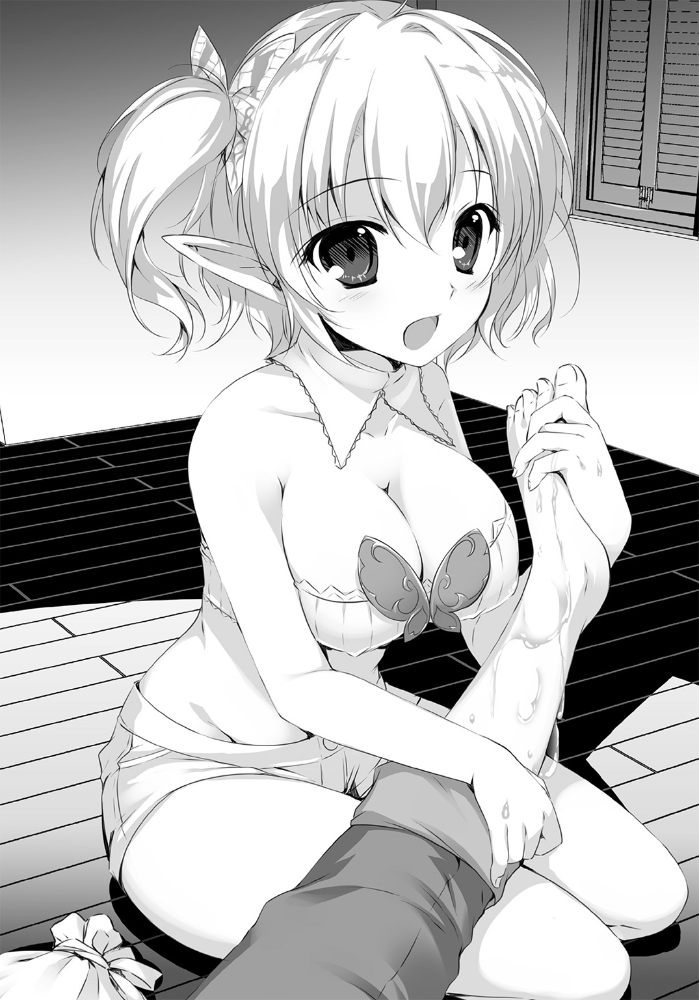
だが。しかし。それにしても。
「んっしょ、んっしょ......んっ。よ、っと、えいっ......！」
無垢にがんばる彼女を見てると。
床についたひざに俺のかかとを乗せ、一心に足をさする彼女を見てると。
両手を何度も上下に往復させ、一所懸命すぎて身体ごと動いちゃってて、当然ながら胸までいっしょにぽいんぽいん弾ませる彼女を見てると。
俺は――俺は！ このおっぱいも護るぞおッ！
「きゃんっ？」
急におかしな声をあげ、前につんのめったアニスを俺はよけられなかった。
というか、足をつかまれているわけで。つかんでいるアニスが前へ倒れたわけで。
彼女の豊満すぎる双丘がクッションがわりになったのはいいけど、ソレがそのまま俺の左すねを、ねっちょりむにゅりんと挟んでくれたわけで。
天......国。ああ、ああこれが！ 足でなかったなら！
マシュマロデカパイにネチョパフされているこれが、足でなく！ 別の何かだったならッ！
「あ、っあ、ああああに、アニス、だだだだいじょおっぱいぶかっ......!?」
「失礼いたしました」
やましくなるほど戸惑いながら気遣う俺に、涼やかな声が降ってくる。
見上げると、緑色の髪をした女性が一人、アニスの背後に立っていた。
「よく注意しておりませんで、ぶつかってしまいました......おケガは......」
「い、いえ、大丈夫ですます。こちらこそこんな通り道で、失礼いたしましたですー」
エルフ弁で応じるアニスにぺこりと一礼して、女性は奥へと去ってゆく。
思わず俺も会釈した、ありがとうどこかの誰かさん。あなたはひょっとして、俺の幸運の女神だったのかも。
くるくると、薬を塗った上から包帯を巻き、アニスが治療を完了する。
「もしも違和感があったら、すぐにおっしゃってくださいです。治療は早さが肝要なので」
「了解。......でも、不思議なもんだなー。精霊ってけっこう、火とか水とか......なんだろ、自然の摂理の現れっつーか、そういうもんだと思ってたよ。まさか医術にできるなんて」
向かいの席に戻り、アニスが小さく笑った。
ガラスビンをとり、栓を抜いて、中で眠っているナノワクトをちょいと指先でつまむ。
「不思議なことではありませんです。この精霊たちは、ただ生きているだけ......こうしていることと、人を癒すこととに、きっとなにほどの差もないのだとわたしは思います」
テーブルの端に乗せられて、ナノワクトは両目をしぱしぱさせた。
きょろきょろと周囲を見回し、お尻をもぞもぞさせて居心地を追求したあと、笑顔で左右に揺れはじめる。笑っている理由も、リズムの理由もわからないけど、えらく楽しそうだ。
「精霊医術を忌避する人々の中には、精霊の力で【疵】を癒すという、それ自体を嫌う方もいらっしゃいます。自然を司る精霊を、勝手な都合で利用する......そんなことをするからモンスター化する、おまけにそれを殺すだなんて、というわけです」
「......なるほど。確かにごく最近、俺もそんなこと言われたよ」
「精霊医術は、自然の流れに反してはいません。流れをゆがめているわけでもないのです」
ぴょこぴょこ揺れるナノワクトの頰をつついて、アニスが一段と顔をほころばせる。
「なぜなら――」
「自然の中でだって、ナノワクトはモンスター化する！」
うわびっくりした!?
頭上から響いた声に振り向くと、つつましいながら形のよいバストが目の前にあった。
褐色肌を横一文字に包む、おへそ丸出しの刺激的な衣装。すべすべの太ももがほぼ完全露出してる、ショートでローライズなぴちぴちズボン。
スレンダーな体軀の胸を張り、両手を腰に当てた彼女、イニスは張りのある声で続けた。
「自然に枯れかけた植物だろうが、自然に死にかけの動物だろうが！ 食べて満腹になったら顕現するから、強いモンスターも弱いモンスターも出るから！ 自然界に棲むモンスターの、二割近くがナノワクトの変化だって言ってる研究者もいるくらいなのよ！」
「お、おう......!?」
「そーゆーのをただ殺すことにはなんにも言わないくせに、人の命を救ってる精霊医には文句たらたらって、は!? なにそれバカなの!? そんな連中の言うことなんて、考慮する必要一切ないから！ 文句あるなら精霊医よりたくさん人を治してみろ！ ですよねー姉様ぁ」
隣に腰を下ろす彼女を、めっ、とアニスがたしなめる。
「ダメでしょイニスちゃん、そんな言葉遣い。それに、精霊に助けてもらっていることは、言われている通りなのですから」
「ナノワクトの人生......精霊生？ の中にお邪魔していると考えるべきです。顕現したモンスターを倒したらナノワクトが死ぬ、なんて勘違いしてるバカどもに付き合う必要なんてありません！ 姉様ぁ、やっぱり姉様も精霊医になりましょうよ。姉様ならきっと、お師様にも劣らない精霊医として活躍できますから！」
「そんな、もう、イニスちゃんたら。わたしなんて、とてもムリです......」
きゃっきゃっとはじまるガールズトーク。すごい、いきなり隙がない。入れない。
いや、怯むな俺！ せっかくアニスといい雰囲気だったんだ、ここは強引にでも！
「べ、勉強って、イニスはそうかテトリアの弟子なんだよな！ どんな勉強してるんだ？」
「あんた何お師様呼び捨てにしちゃってんの？ 殺すよ？」
「ほほほ本人がいいって言ったんだよ!? てかお前ほんと態度違いすぎだろ！」
フン、と鼻から息を抜き、イニスがコップの水をあおる。
「別に......病気の種類と症状覚えたり、精霊語覚えたり。覚えてばっかりよ、まだ」
「え、精霊語？ 精霊ってしゃべれんの？」
「しゃべれるのもいるわよ、当たり前だから。あんただってエルフ語しゃべるでしょ」
「いや、しゃべるっつーか、まぁ......ニュースとか、アフターケアとか、パープリンとか？ 人間社会で使われてる単語を知ってるだけだよ」
「似たよーなもんよ。あっ、なに姉様、ナノワクト出してるじゃないですかー！ エスレーゼ地方の子かわいいですよね、緑のひらひらで。わたしも出そうっと」
またたくまに姉妹の会話が再燃。こりゃダメだ。仲がいいっていうか、イニスはお姉ちゃん大好きっ子なんだな。俺はおとなしく酒飲んでよう。
テーブルの上で機嫌よく揺れていたアニスのナノワクトの隣に、イニスがもう一体を置く。
二体になったナノワクトは、お互いハッと目を合わせ――短い足で立ち上がり、小さな手をつないで踊りはじめた。謎のリズムが共有されている。
コップの周りをくるくると、フォークをまたいでぴょこぴょこと。
実に楽しげに足並みそろえて、まるで小さなお祭りだ。
極めて珍しいに違いない、ほんわか満点な光景。ほぉー、と酒場の空気がゆるむ。
「もし。先ほどは失礼いたしました」
顔を上げると、さっきの女性がアニスに頭を下げていた。
かなりの長身を、黒い襟付きのマントで足下近くまで覆っている。
濃い緑色の前髪が、鼻先近くまで厚く伸ばされているものの、よくよく見ると相当な美人さんだ......俺がぶつかられたかったかも。いやしかしあの僥倖は。
「わたくし、拙いながら楽師をいたしております。よろしければ、お詫びになにか詠わせていただけませんでしょうか」
「いえ、もうそんな、お気になさらずですますー」
「どうかそうおっしゃらず......あら。......まあ。お珍しいものをお持ちで」
テーブルの上をダンスステージにしてしまったナノワクトを見、楽師の女性が目を細める。
彼女は背後のカウンターに腰を下ろし、野暮ったい黒マントを無造作に払い落とした――ガタッ、とまた俺の椅子の脚が鳴る。
バンと張りだした、胸。きゅっと絞られた、腰。
すらりと長く肉感的な素足に、踊り子と見紛うほど挑発的な衣装。
マントの下から現れたのは、アニスに負けないナイスバディ（エルフ語）だったのだ！
「望外におもしろきお酒のようですね。ならばお詫びの詩にかえ、そちらのおチビさんたちに一曲、進ぜるといたしましょう」
ポロロン、と竪琴がかき鳴らされる。おぉ、と酒場がまた盛り上がりを増した。
ナノワクトたちの不思議なリズムを、見事につかんだ即興の調べ。アニスとイニスが顔を見合わせた。尋常でない腕前の、気の利いた演奏に心を動かされたんだろう。
気のせいか、精霊たちの踊りも、ひときわ機嫌よくなったような。
「イニスちゃん！」
「えっ、ね、姉様、わあっ」
イニスの手を引いて立ち上がり、アニスがくるくると踊りはじめた。
酒場の椅子を端に寄せ、狭いスペースでうまく回って、跳ねて、離れて、寄り合って――おいおい。これって、この、これじゃん。ナノワクトの踊りを完全トレースしてるよこの二人。
「おもしろきこと......」
楽師の女性もくすりと笑う。酒場が意味もなくワッと沸く。
手拍子くらいしかできないけれど、俺もとても楽しかった。だって、ねえ。ナノワクトはかわいいけど。やっぱり迫力が違うじゃないか。
回るたび、跳ねるたび、効果音がつきそうなほど大きく揺れ動くかたまり。
たぷたぷ波打つも悩ましく、もはや桃源郷としか言い表しようがない。
俺――男に生まれて、よかったなぁ！
「さっきから見すぎだから!? 死ねえっ！」
踊りを中断してまで放たれたイニスの拳に顔面を打ち抜かれ、俺の長い夜は終わった。
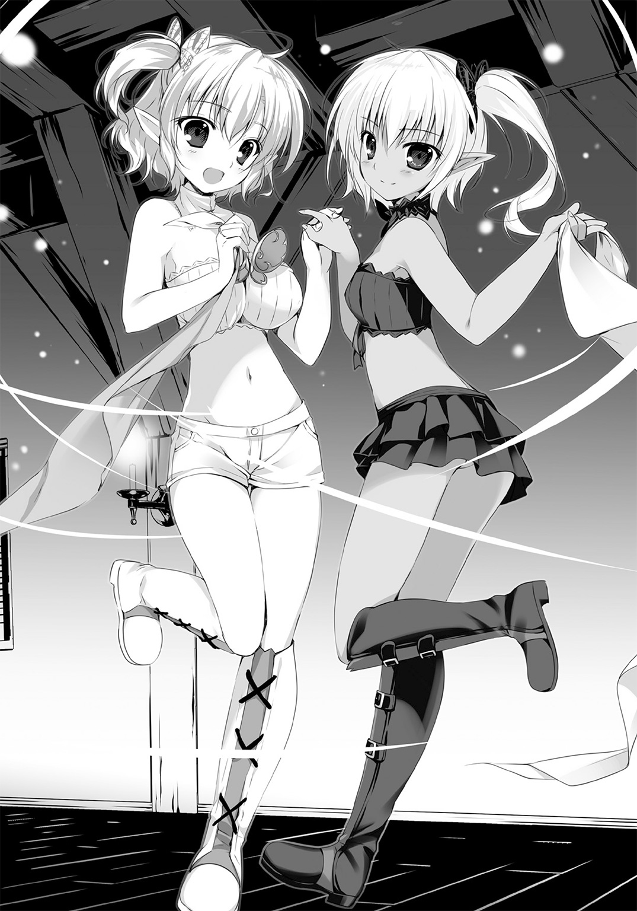
【第三章 勇者の奮戦】
がんばれ、とか。立ち上がれ、とか。あきらめるな、とか。
死ぬな――とか。
そういった言葉を向ける相手として、たぶん目の前のコイツは適役じゃない。
やっぱそういうのは、儚げな薄幸の美少女だったり、ともに死地をくぐった戦友だったり。思い入れ深い人間に向けるべき......いや、やっぱ戦友はいい。美少女がいいな！ 巨乳のな！
つまりここには美少女がいないから、死ぬなとか言うのは適切じゃないんだろう。
そもそも人間じゃないし。
たった今、俺の足下で動かなくなった、この最後のモンスターは。
「......あーあ」
天をあおいでため息をついた。
憎ったらしいくらいの青空を、黒煙がわずかに汚している。よくまぁここまで備蓄が保ったもんだ。ひとえにそのおかげだよ、この村が救われたのは。
そう。ああ。村は救われた。援軍は来なかったけど、なんとかなった。戦いは終わりだ。
終わっちまった、んだな――
残念だ。どうしてだろう、ひどく、ひどくひどく残念だ。
「もうちょっと、さぁ......お前さぁ。大トリだったんだからな？ なんか、こう......なぁ？」
倒れたモンスターの頭部を、コンとつま先でつつく。
四メートル級のサイクロプス。あの規模の群れを率いるボスとしちゃ、可もなく不可もなくってとこか。今は上半身と下半身が生き別れになってら......もう、戦えない、よな？
急に起きあがって、ビックリアタック的に襲いかかってきてくれたりしないよな？
ボロボロの剣を地面に突き立て、俺は振り向いた。
村の大人たちは、隠れたまま出てきていない。怖いだろうに、よくわきまえてくれてる。
だけど女の子が一人、そこに立っていた。
累々と地面を埋め尽くす、魔獣たちの死骸には目もくれず。
揺れもしない瞳で、まっすぐに、呆然と、俺を見つめている。
......なんて名前だったっけ？ 確か九日前、俺の手を握って、死なないでと言ってくれた子だ。ムリに笑顔をつくる様が愛らしかった。
きっと五、六年も経てば、村いちばんの美人さんに育つだろう、将来有望な少女。
だけど今は、笑顔のえの字もない。
視界に広がる光景を、まるで理解しきれない無表情。その中央に立つ俺のことを、きっと理解したくない無感情。
俺は村を救った。そう見えてるはずだし、事実だ。だからこれは、子供の直感の類だろう。
「......もう、終わっちゃったよ？」
頭のてっぺんからつま先まで、どろどろの血まみれで微笑みかける俺に、少女は応えない。
ひとしきり笑ったあと――この子が敵ならよかったのに、と考えている自分に気がついて。
俺は痛むほど、あごが軋むほど、強く強く奥歯を嚙みしめた。
それでもきっと、どこか笑って見えただろうけれど。
＊＊＊＊＊＊＊＊＊＊
今朝は悪いほうの夢だった。
見はじめてからまだ日が浅いからか、あんまり夢らしくないのがなお悪い。気づけないんだよな、これは夢だ、って。マシなほうの夢はすぐ気づけて、わりと白けてたりするんだけど。
あの女の子、今どうしてるだろ。元気にしてくれてるといいな。
一定のペースで、朝の街を走り抜ける。昨夜はあれからもいろいろあった。
楽師の美人さんがそりゃもう大人気で、いろんな歌をうたってくれたり。
アニスが頼んだ大量の料理が、知らない間にテーブルを埋め尽くしてたり。
どう見ても十人前以上あるそれを、ほぼアニスが一人で食っちゃったり。
そんなこんなで楽しく疲れたけど、足腰の鍛錬だけは欠かすわけにゃいかない。他の剣術館じゃ道具使ったり、いろいろして鍛えてるらしいけど、俺は走るのがいちばんってお師匠さんに教わった。お師匠さんの言いつけは絶対だ。雨が降らない限り欠かさない。雨きらい。
剣術館も、いつか訪ねなくちゃな。やり残したことがまだまだある。
実戦で鍛えた俺のハズバドル剣術を見せたいし、話したいことだって山ほど――
「いっ......!?」
宿屋へと続く角を曲がって、俺はギョッと足を止めた。
すぐそこに見える宿屋と、斜向かいにある空き地。その間にあるさして広くもない道に、ずらっと行列ができている。それも、普通の列じゃない。一目見りゃ俺にだってわかる。
病人たちが待ってるんだ。
昨日はさっぱり人通りもなかった、こんな裏通りにも等しい場所で。たちどころに病を治す少女の、精霊医の噂を聞きつけて、すがりにやってきたに違いない！
「テ......テトリア！」
慌ただしく宿屋に駆けこんで、まっすぐ二階にある部屋を目指した。
勢いよくドアを開けたが、中には着替え中で半裸のイニスしかいない。
「っな......な、なななな、あんたっ――」
「チッ！」
バタン、とドアを閉じて俺の部屋へ。まぁいるはずもない。てか何を焦ってるんだ俺は？
「おーい、テトリアー!? どこだー！」
「おー、おっはリドくん！」
声は宿の一階、共同洗面所のほうから聞こえた。
階段の上から覗きこむと、寝間着姿に歯磨き布でこしこし歯をこするテトリアが見える。
慌てて駆け下りる俺に、彼女は研磨樹脂で泡立った口元をにこーとゆるませた。
「昨夜は楽しかったねー。あ、リドくんを検査したとこまでは覚えてるんだけどさ、結果どうだったっけ？ あたしなんて言ってた？」
「なんだそりゃ、なんにも言ってなかったっつーの！ 酔い覚まし飲んでぶっ倒れてたろ!?」
「え、なにそれ。あたし酔い覚まし飲んだの？ そういえば二日酔いもなくスッキリしてる、やっぱあたしの薬って効くなー」
「いやあれはそうじゃないだろ......って違くて！ んなこたどーでもよくてだなぁ！」
そう、どうでもよくて。物事自体はどうでもよくないけど、今は違くて。その。だから。
......今日も薄着だなぁ、テトリア。
パジャマのボタン開けすぎだろ、てか乙女なら下に肌着とか。シャツとか。そーゆーの必要じゃなかろーか？ くちゅくちゅくちゅんぺーってかわいくうがいしてる場合じゃないだろ。
俺の知り合いの女騎士なんて、鎧着て寝てるなんて噂もあったんだぞ？
いやぜんぜん関係ないけど。ていうか何の話だったっけ。
「ぅぶー、きぼぢー......ふー。あれ？ タオル......タオルタオル。どこー」
茜色の長髪を適当にまとめ、ぱしゃぱしゃと顔を洗ったテトリアの手が、あやしく洗面台をうろつく。あれか、顔をぬぐうまで目開けたくないタイプか。わからんでもない。
なぜかずいぶん離れたところに引っかけてあったタオルを、俺は手にとって、
「......おおお......！」
そのままギュッと握りしめ、小さくつばを飲みこんだ。
顔からぽたぽた滴を落としつつ、前のめりになった上半身をフラフラさせているテトリア。
見方によってはゾンビさながら、笑いこそすれど息をひそめる場面じゃないが――たっぷり盛り上がって揺れる谷間が、普段着よりもさらにもう。
完璧に水を弾くむちむちに張り切った柔肌。垂れるではなく、あくまでも張り出す双丘。
角度的には見えていて然るべきおへそを、ゆっさり覆い隠すほど大きく。巨きく。
おおきく！
ああ、なんてこった。大きすぎて頂点が、夢を固めた小さなそれが見えない。むしろ悔やむべきサイズなのか？ いいや！ でっかいことに非などあるものか！
これ俺もう記憶戻ってもいんじゃね!?
「ひとことくらい、謝れえええええッ!?」
側頭部を打ち抜いたイニスの回し蹴りに、俺はタオルと意識を同時に手放すはめになった。
＊＊＊＊＊＊＊＊＊＊
「なんでだよ......!? も、もう一回言ってみろ!?」
昨日と同じように治療がはじまって、間もなく。二人目か三人目の患者だろうか。
不穏な空気に、俺は大鍋の湯を沸かす手を止めた――見やれば、テトリアが胸ぐらをつかまれている。興奮しきった表情の若い男が、乱暴に詰め寄っていやがるんだ。
どこにでもいるムチャしたがりか、とつま先をそちらに向けたとき、
「何度でも言います。あたしには治せません」
聞こえたテトリアの声を一瞬理解できず、俺は足を止めた。
治せ、ない。
何の変哲もない言葉だ、特筆すべき意味もないだろう。だけど――テトリアが？ どんな患者でも受け入れて、たちどころに快復させていたテトリアが!?
どうしてあんな、はっきりと。『難しい』でも『時間がいる』でもなく、『治せない』と。
相手の男も、普通の様子じゃない。握りしめた手が、小刻みに震えているのがわかる。
「さっきのやつらは、治してただろうが......！ どうしてうちのオヤジだけ！」
「あなたのお父さんはかなりの重症です。残念ですけど、今は治療に入れません」
「ふ、ふざけんな!? 瀕死の患者も治してたって聞いた、オヤジだって治せるだろ！」
「治せません。説明しますと――」
「治せない説明なんて聞けるか！ 治せ!? 早く治せよッ！」
「お断りします」
何かを伝えようとしてる。説明を聞くべきだ。結局関係がない俺には、そう理解できた。
だけど、テトリアの頰に拳を叩きつけた男には、到底ムリな話だったらしい。
直後、腰の剣を握って歩み寄る俺に気づいたそいつが、ビクッと身を強ばらせる。
「おい！ こんな場所で医者に暴力――」
「あたしの医術は!!」
今度は俺がビクッとした。
倒れていたテトリアが起きあがり、強い口調で俺を制する。
視線は男に向いてるけど、言葉は俺を含めた聞こえる範囲にいる全員――突然の暴行に驚いている、診察待ちの行列にも向けられたものだとわかった。
「精霊医術は、できることとできないことがはっきりしてる！ 目の前の患者を治せるのかどうか。それだけでしか判断できないし、しない！」
「テ、テトリア......」
「物理医術との最大の違いがそれよ。たとえすぐ完治させられなくても、少しでも快方に向かうよう手を尽くせるのが物理。完治させられなかったら、なんにもできないのが精霊！ 今、この瞬間、治せるか治せないか!! あたしの医術にはそれしかない！」
希望を即座に実現し、絶望を即座に突きつける。ゼロか一かで、間がない、ってことか？
知らなかった――いや。知ってたけど、理解できてなかった。
第一種と第二種って、そういうことか！
呆然と立ち尽くす男をよそに、テトリアは荷物をさぐり、乾薄紙の切れ端を取り出した。アニスからペンを受け取って、さらさらと何事か書きつける。
「この紹介状を持って、街医者のところへ......ミザネラ、なんちゃらホルクとかいう女医の施療院へ行って。教会とも連携してるから、必ず診てくれるし、入院もできるはずです」
「その、施療院から来たんだ......」
「そっか。じゃあ戻って、しっかり治療して、お父さんの体調が少しでもよくなったらまた来てください。そのときは違うことを言うかもしれない。その瞬間には、治せるかもしれない」
「......教えてくれ。なんで治せないんだ......」
「あなたのお父さんを治療すると、おそらく四メートル級のサラマンダーが顕現します」
それがなぜか、と問い返すにはもはや気力が足りないんだろう。
ただただ肩を落とす男に、テトリアが簡潔な説明を続ける。
「あたしにはそれを倒す自信がない。もしもあたしが倒れたら、街が被害に遭って人が死ぬかもしれない。騎士団が出動して、街医者にかかるより何倍も費用がかさむこともあります」
「俺なら倒せる！」
そう声をあげ、俺は一歩前へ出た。
「テトリアは昨日、ケガしたんだ！ サラマンダー相手なんてムチャだ、俺にまかせ――」
「ダメ」
「て、っお......ダ、ダメって！ ダメって、テトリアっ――......!?」
勢いのままに重ねるはずだった言葉が、何ひとつ口にできない。
テトリアの眼が、見たこともないほど冷たい色を帯びて、俺を押し止めていた。
「リドくんにまかせたのは、一度限り。あたしはもう大丈夫。だけど、サラマンダーはムリ」
「だ......だから俺なら......！」
「ダメ。二度とまかせない。理由はふたつ、まずキリがないから」
キリがない。それは――それは、この空き地での治療を求めて、列をなす患者たちを言っているのか。仮に彼らが皆、治すためにサラマンダーの駆逐を必要とする人々なら。
十匹。五十匹。百匹、以上。
倒っ......せる、と。約束、できない。あのときとは、状況が違いすぎる。
「もうひとつは、あたしがするのと同じ。リドくんが負けたら街が巻きこまれる。そんな賭けは人としてできない。仮に君の勝率が九十九パーセントでも、あたしの前ではさせないよ」
「そんな......！」
悪魔だ、とうなだれた男がうめく。
涙をぬぐいもしない彼の声が、胸の奥底を引っかいた。
「こんなのって......治ると思ったのに。普通に治せないほうが......来るんじゃなかった......」
「......お大事に」
重病の父親を背負って、男がとぼとぼと道を戻っていく。その後ろ姿に、列から抜け出た者たちが続いた。残って並んでいる人間も、不安げに顔を見合わせている。
「お、おい......！」
「今つられてる人は気にしなくていい。冷やかしだから」
「けど！ あんな......わ、うわわわ」
イニスに腕をつかまれて、俺は空き地の端まで引っぱっていかれた。
「仕事は山積みなんだから、サボらない！ なんだか知らないけど、お師様に治してもらう約束したんでしょ!? 変態病を」
「違うわっ!? ああもう、わかってるよ働くよ！ くっそー......！」
自分でもよくわからない何かに対して苛立ちつつ、ぐらぐら煮立った大鍋にケモノの皮と思しき何かを放りこんだ。ぐーるぐーるとかき混ぜる。昨日も思ったけど、何なんだよこれ。
気分悪ぃ。鍋の近くは暑いし、なんだかわからないけどえらくくやしい。
「変態ってだけならともかく、バカだったとはね」
得体の知れない植物をすり鉢で潰しはじめたイニスが、ぽつりと呟いた。
「あ？ なんだって？」
「あんたはノータリンだ、って言ってんの。ちょっと考えたらすぐわかることなのに、ドワーフのガキみたいに騒ぎたてて。見てるこっちが恥ずかしいから」
「さ......騒いだのは、まぁ、アレだけど。サラマンダーくらい、本当に倒せる」
「ハア？ ......ふっ、あはははは、そう。あんたがそう思うのは、まぁ勝手だから。じゃ引き下がったのはアレでしょ、患者さんの数だけサラマンダーが出たら、とか考えたからでしょ」
図星を突かれてぐうの音も出ない。だけど、それが何か間違ってるってのかよ――
「じゃあ、サイクロプスだったら？」
小さく続いたイニスの声に、俺はギクッとした。なぜだか、ギクッとした。
「ヒュドラだったら？ マンティコアだったら？ いっそニーズヘッグ・ドラゴンだったら？ ううん単純に、十メートル級のサラマンダーだったら？ あんたはどうするの」
「そ......そんなもんまで、出てくるってのか!? 治療でっ......」
何を言ってんだ俺は、と途中で気がついた。昨日のアニスの話を聞いてなかったのか？
神話級の怪物すら生み出してしまうかもしれない、悪魔の罠。
それが精霊ナノワクトを使った医術なんだって、教わったばかりじゃないか！
「キリがないのよ。あんたがサラマンダーを倒したとしても、いずれ倒せないモンスターが現れる。そのときまた、お師様は治療を拒否する。今みたいに殴られる。そういうことだから」
「それでも、今よりマシだろ!? 倒せないモンスターが倒せるようになったら、治せる患者の数も増える！ なんか間違ってるか!?」
「じゃああんた、死んでも文句は言わないのね？」
「ッ死ん......でも。死、ぬ......!?」
「相手は、元ナノワクトとはいえモンスターなのよ。戦って負けたら死ぬに決まってるから。そういう天秤に自分の命を載せて、どんな結果が出ても納得できるのかって聞いてるの」
まるで......傭兵みたいだ。いや、傭兵よりずっと崇高なことなのはわかってる。だけど。
戦場でもなんでもないのに、誰かを救って自分が死ぬなんて、そんなこと。
「お前や、アニスは......じゃあ」
「わたしたちはそういう仲間だから」
――そうだとしても リドくんはダメ 頼むとしてもイニスちゃんに頼む
昨日のテトリアの言葉は、こういう真意か。俺が底の浅さを露呈しただけだ。
俺なら倒せる、と言ったことにウソはない。
サラマンダー。火を吹くトカゲ。なるほど確かに強敵だけど、四メートル級ならなんとでもなる。一人のケガ人も出さずに処理する、その戦運びもいくつも思いつく。
でもそれは、イニスの言う通り、たまたま俺の手に負えそうだからだ。
テトリアたちが実行している医療は、そんな目先しか見てないものじゃない。
「わたし、精霊医になるんだ」
それを裏付けるかのように、イニスが突然に語った。
「お師様には反対されてるけど。いっぱい勉強して、いつか必ず独り立ちする。そしたら自分の【本】をつくって、姉様とエルフの里に帰って......エルフ病を治すの。決めてるんだから」
「アニスも、そう言ってたな......」
「言っとくけど、わたしにも姉様にも、四メートル級のサラマンダーは倒せない。二メートル級がせいぜい。だけど二メートル級なら、百匹でも千匹でも命懸けで駆除するから。何人でも治してやるから！ あんたがほんとに四メートル級を倒せるなら、精霊医になったらいい」
「......。それは......」
「ならないでしょ？ 別のことをしたいはず。それを責めたりなんかしないから」
でも、だから、仲間じゃない。ハンパな気持ちで出しゃばるな――ってことか。
すり潰した植物をちょっぴりなめて、強烈に渋い顔をするイニスにそっと息をつく。
「わかった......俺がクソガキだった。あとでテトリアにも謝るよ」
「当然だから。つーかとっととどっか消えてくれない？ ノータリンが感染ったら困るから」
「前々から思ってたけどさ、エルフのスラングってひどくねえ？ ノータリンとかパープリンとか。まぁ人間社会で流行るのも、なんとなくわからんでもないけど」
「もっとひどい言いかたもあるから」
「そうかい......でもイニスって、アレだよな。いつまで経っても俺への侮蔑言葉は変えないけど、けっこういろいろ教えてくれるよな。ありがとう、だっけ？」
「......。ま、野良犬に話しかけてるようなものだと思えば、別にね」
やっぱこいつ一回シメたい。
テトリアはすでに次の患者を招き、差し向かいで話を聞いていた。いくつも質問を続けながら、何度も何度も小さく頷き――そして、笑顔になった。患者もほっとしたように笑う。
あんな抜き差しならないところで本当のことを言ったら、いくら正しくても恨まれる。
感謝されるべき仕事なのに。どうしてそこまでできるんだ？
「俺が考えても、わかんないことな気がするな......。てか、あとで直接聞いてみるか」
どうして医者になったのか、とか。どうして続けていられるのか、とか。
ひょっとするとそれが、俺にとってもすごく大事なことのような気がするんだ。
「よしっ。じゃー気を取り直して、だ！ がんばって手伝うか――」
ピリピリピリピリピりゅリッ
と、絶妙に失敗した笛の音が響き渡る。
もう一度振り返ると、三分の一ほど数を減らした患者の列をかき分け、誰かが進んできていた。ピリピリヴィッ、ピリピリピひゅぅ、としつこく笛吹きをしくじりながら。
「う、うぅー。やっぱりちゃんとできない！ 笛まで私をバカにするのか......！ あぁ......」
「団長、そういうのいいですから！ ええい、道を空けろー!? 派遣騎士団だ、通せぇー！」
きょとんとして見守る俺たちの前に、聞こえた通りの一団が現れる。
平時にありながらマントと鎧、帯剣で武装した兵が四、五人――王国の騎士団だ。それも、
「派遣、騎士団......災害派遣騎士団ね？」
「そ、そうです。どうも初めまして」
診察を中断するテトリアに、先頭の青年がぺこりと頭を下げた。
患者の列っていってもさほどでもなかっただろうに、まるでパレードの中を逆走したかのごとく汗だくでよれよれだ。やや長めに伸ばされた髪といい、中性的な童顔といい、隊長という言葉の雰囲気におもしろいほどそぐわない。
「レクセンタル王国第一軍第二騎士団所属特別隊、第一災害派遣騎士団の団長してます、タフタス・キルガンテです。お見知りおきください」
「どうもご丁寧に。テトリア・ハルスハイファンです。役所に許可はとりましたけど？」
「う、は、話が早い!? い、いやぁ助かります、確かに役所からの許可は下りておりました。ですがあのー、実はですね。私どもは昨夜遅くにこの街に着いたんですけども、お宅様が精霊医だという噂をあちらこちらで聞き及びましてね？ そのー、精霊医の方が我が国でご活動なさる場合、王城の許可と活動地域の指定が必要でありましてー......」
「知ってます。無視しました」
「無視っ!? え、無視！ お、驚いたんですけど!?」
「指定の地域が、必ず王城になることくらいわかってます。豪華な椅子にふんぞり返ってるから医者ってわけじゃないでしょ。人を治すから医者！ あたしは現場にいたいだけです」
「な、なるほどー......ですよねー......」
二次閉鎖の街に災害派遣騎士団が来るってことは、たぶん小隊規模。五十人はいるはずだ。
それをまとめる立場だってのに、テトリアに言い合いで負けてる。珍しい人材だな。
隣で列を仕切ってた女騎士のほうが、態度もデカそうだしどこか見覚えも――あ。
あれは。
「おっしゃることはよくわかりますけども、しかし私どもとしてはその場合、お力になりづらいと言うかなんと言うか。ぁいや、団長らしく団長らしく。わ、我々がここで支援する以上、貴君の活動はその妨げでありましてぇー。速やかに、えー、なるたけ速やかに街を退去――」
「リッシードッ!!」
「ひいっ!? エ、エレナーレくん!? また驚いたんですけど！」
いきなり叫んだ女騎士に、しかしタフタスとかいう団長だけが驚いた。
テトリアはきょとんとしているし、イニスはどことなく我関せずだし、アニスはなぜかテントの中ですいよすいよと寝ているし。当の俺はといえば、ぽりぽり頰をかくしかない。
衆目の中、整った細面をキリリと引き締めたその美少女剣士が、まっすぐに俺を指さす。
「なぜ貴様がここにいる!? ここで一体、何をしている！」
「あー......久しぶりだな、エレナ。元気か？ まさか派遣騎士団に入るとはね、おめでとう」
「っあ......ありが......は、はぐらかすな!? 貴様まさか、あの噂は本当か！ 剣を見せろ!?」
相変わらず、忙しない女だ。
長い金髪に青く澄んだ瞳。たおやかさすら感じさせるスレンダーな四肢に、ライトメイルをはじめとする無骨な装備。このアンバランスさがいいといえばいいけど、もはやまとう雰囲気が俺と同い年じゃない。えらい貫禄になっちゃったもんだ。
黙ってりゃかわいいのになぁ、などと思いつつ、最後の要求に応えて剣を掲げる。
むやみにおろおろしていたタフタス団長が、あっと声をあげた。
「その剣！ わっ、スレイガドロスだ！ 聖なる剣じゃないか、すごいや。あっじゃあもしかして、あなたが九日勇者!? 勇者リッシード・ハズバドルさんですか!?」
「違いますキルガンテ団長、元勇者です！ ヤツは二日前、名誉を剝奪されてるでしょう!?」
「え、そうだったの？ 耳が早いねエレナーレくん、さすがー。でもそれじゃあ、勇者をやめてすぐこの街に？ わぁ、フットワーク軽いや。尊敬しちゃうなー」
「団長っ......！」
握手してください、と笑顔で俺に近づく彼を、エレナがぷるぷる震えつつにらんでいる。本気でどっちが団長なんだか、その時点じゃもうわからなかったけど。
応じる俺の手を両手で握って、タフタスがにっこり笑った。女と見紛うような童顔だ。
「やあやあ、光栄です！ 音に聞こえた九日勇者さんとお会いできるなんて、騎士として誉れになりますよ。彼女とは？ エレナーレくんとはお知り合いで？」
「前に話したでしょう団長！ この人間のクズとは、剣術大会で三度も対戦したと！」
「あ、そうだったね。エレナーレくんを三回も負かしたんだっけ？ あははすごいなぁ」
「そんなことだけ覚えてるし!? ええいリド、リッシード！ 貴様なぜ聖剣を持っている!?」
なんでって言われても。
「だってこれ、俺の剣だし。もらったし」
「聖剣は勇者に下賜される物だ！ 今の貴様はもう勇者じゃない、名誉を失ったら聖剣を返還して然るべきだろうが！」
「いやまぁ、めんど――いやいやそのほら、それって引退した昔の勇者たちが自主的にやってただけじゃん？ 『やめるとき返してね』とも言われなかったしさ。いいかなって」
「きっ......貴様というヤツは......！」
あははは、と腹を抱えてタフタスが笑っている。
話の内容についてこれないのか、残りの兵士たちとテトリアはきょとんとしたままだ。
イニスだけが、じっと俺を見つめている様子で、少し気にかかったけども。
「い、今からでも首都に戻り、国王陛下の前に平伏して聖剣をお返しするつもりは......」
「ない」
「だろうな！ わかった。よくわかった。貴様は勇者になっても、何も変わっていない」
しゅりっ、とエレナが抜剣した。どよめく患者たちに構わず、切っ先を俺へと向ける。
「ならばその右手叩き落として、腕ごと持ち帰らせてもらう！」
「お、おいおい。やめろよ、真剣だぞ!? 大会じゃないんだから、そんなお前......！」
「黙れ恥知らずが!? 貴様の醜聞を耳にして、わたしがどれだけ......っ貴様とわたしは！ いずれこうなる運命だったのだ、抜けリッシードッ!?」
言葉が早いか、土を蹴立ててエレナが突っこんできた。俺が大きく後ろに跳ぶことも、完全に見切った深い踏みこみ。
とっさに剣を抜き払い、俺は打ち下ろしの一撃を受け止める。
片刃剣でなければ、峰を手で支えられなければ、止められたかどうか怪しい一の太刀。
こ、この女......マジメに本気か!?
「昔のわたしと！ 思うなよッ！」
尋常でない気迫とともに、途切れることなく剣線が放たれる。
打ち合わされる鋼の悲鳴が、朝の空気を震わせた。突然の大立ち回りに、しかしギャラリーたちが大きく沸き上がる。
見世物じゃねーぞ――って、なんでタフタスまで拍手してんだよ。何なのこの団長マジで。
「首都は！ 連日っ、貴様の話題ばかりだ！」
「ハア!?」
「知らないとは言わせない！ 勇者が、聖剣をっ......持ち逃げしたと！」
右肩を狙う一撃をかわし、剣を押さえにかかるが失敗した。
たたんっ、とすばしこくサイドに動いたエレナが、飛びこむような突きを放つ。
刃を合わせて力をそらす俺に肉迫し、彼女はうなるように言った。
「悔いはないのかッ!? あんなことで、あんなくだらないことで名誉を失って！ 九日勇者と嘲られて......！ どうにかしようと思わないのか！」
「いや、別に......噂になってるのも今知ったし」
「ぐ......！ 貴様は、ほんっとに貴様は!? 自分が何をしたかわかってないだろう！ 貴様は勇者を『キズモノ』にしたんだ！」
へえ。キズ、者ね。なかなかうまいこと言うな。
「名誉の重みを考えもせず。そんなことだから剣もふぬけるんだ！ さっさと本気に......逆手になるがいい!? そんな時代遅れの剣術では、このわたしを倒すことなどできんぞ！」
「っ......エレナよ。俺のことをどう悪く言おうと、そりゃぜんぜん構わないけどなぁ......！」
力まかせにエレナを突き離し、俺はスレイガドロスをまっすぐに構えた。
「お師匠さんの悪口だきゃカンベンしねーぞ!? このチチナシがあ！」
「だったらどうする！ どうしてくれるんだ、この慢性いちいち変態病患者め！」
「決まってんだろお仕置きしてやんよ。公衆の面前でお尻ペンペンだ、覚悟しやがれッ!?」
激高と同時に思いきり打ちこんだが、余裕たっぷりにかわされる。
ヤバ、と思ういとまもなく、反撃の刃を聖剣が弾いた。考えるより先に体が動いてくれる。
というか、あれこれ考えてたらスピードに追いつけない！
「すごい！ すごいや、さすがは現役の元勇者！」
やたら無邪気に盛り上がったタフタスが、勝手に賞賛する。なんだ現役の元って。
「聞きしに勝る護りの剣だね！ これがハズバドル剣術かっ、うーんアラホレヒレハレ流免許皆伝の私もうならざるを得ない！ あ、でもエレナーレくんもすごいね、なんか思ったより互角っぽい。さすが青い目の戦闘狂！ 天才！ レクセンタルの華！」
「いいえ！」
むしろけなしてんじゃないかと思える声援に、エレナはやたらマジメな顔で応えた。
「こんなものじゃない......本当はこんなものじゃないんです、こいつは！ リッシードは！」
「ほう!? どういうことだいエレナーレくん!?」
「ハズバドル剣術館の高弟として知られる男ですが、わたしは大会でハズバドルの技に敗れたわけじゃない！ 彼独自の剣に......あの不可思議な、逆手の剣にやられたんですッ！」
「な、なんだってー!?」
なにこいつらウザい。テンションがウザい。
特に隊長さんノリよすぎてめんどい。キラキラした目でこっち見んのやめて。
「違うだろが、エレナ。ウソこいてんじゃねーよ」
あくまでも順手に持った剣でエレナを牽制しつつ、間違いを正してやる。
「一回目と二回目の大会のときは、確かに変なことしちゃったけど。三回目んときは、正真正銘ハズバドルの剣で勝ったぞ。勝って優勝した。逆手になんかなってない」
「ぐ!? そ、その一回だけだろうが！ あのときは、ちょっとわたしの調子が......！」
「まぁお前の言う通り、俺のハズバドル剣術なんて大したことないよ。お師匠さんは超スゲェけど、俺は免許皆伝もまだだしな。だから、俺のことなら何を言ってもいい......だけど」
俺のことを、十のときから守ってくれた、護りの剣。
その剣術で優勝したときは、いろいろあれこれ言われたのも事実だ。八百長扱いもされた。クジを操作して、ヘボの女剣士と当たったなんて噂もあったな。うぷぷぷ。
だけどなぁ。
「今やっても、おんなじ結果になるぜ？ お前の四敗目だ。あのときとは状況も違う」
「な、にぃ......!?」
「真剣だからよせ、って言ったろ。意味がわかってないなら教えてやる、来いよ」
答えはなかった。無言の気迫が弾け、エレナが突っこんでくる。なんとも素直でよろしい。
彼女は速い。段違いに速い。
洗練された体捌きが、男以上の剣速を生んでいる。攻撃そのものは読みやすいけど、そんなこと関係ないレベルのスピード。そう、こいつのは、そういうスピードだった。
だけど今日は遅い。単純に、なんか遅い。
髪の毛一本、斬られる気がしない――
「ストーップッ！」
エルフ語での制止が響いたのは、俺たち二人が交錯したあとだった。
キン、と聖剣を鞘に納めて、俺は戸惑いも露に振り返る。
両手を左右に大きく広げ、割って入ったつもりのテトリアが、両目をぱちくりさせた。
そして、
「ひやわああああああっ!?」
ばらばらっ、と分解され、地面に散らばるライトメイル。
下着一枚だけを残して、はらはらと舞い落ちる布切れの数々。
あられもない姿になったエレナが、小さな胸とぱんつを両手で隠した。
ムリだけどな。めっちゃ見えてるしな。まーなんとも色気のない真っ白パンティだこと。
「ふん......もう一度言っとくぜ、エレナ。真剣での戦いってな、こういうことさ......」
「サイテー」
なんでそーゆーこと言うのテトちゃん。
「んもー、ストップって言ったじゃん！ エルフ語わかんないのリドくん!?」
「いや、タイミング遅いよ......斬っちゃってから言われても」
「手負いの相手にこんな勝ちかたしたって、うれしくないでしょ!?」
まぁそうだな。起伏にとぼしいなだらかーなハダカ見たって、うれしくもなんとも――
ん？ 手負い？
「ね、あなた。エレナーレさん？ どっか悪いでしょ」
とんでもねー形相で俺をにらみつけてたエレナが、ビクッと裸体を強ばらせた。
「なっ......？」
「顔の赤み、あごの下の腫れ。これは今、この街で流行ってる病の症状よ。だけど最初は顔赤くなかったし、目がかすんでる様子もない。おそらく病気じゃないなにか。たとえば――」
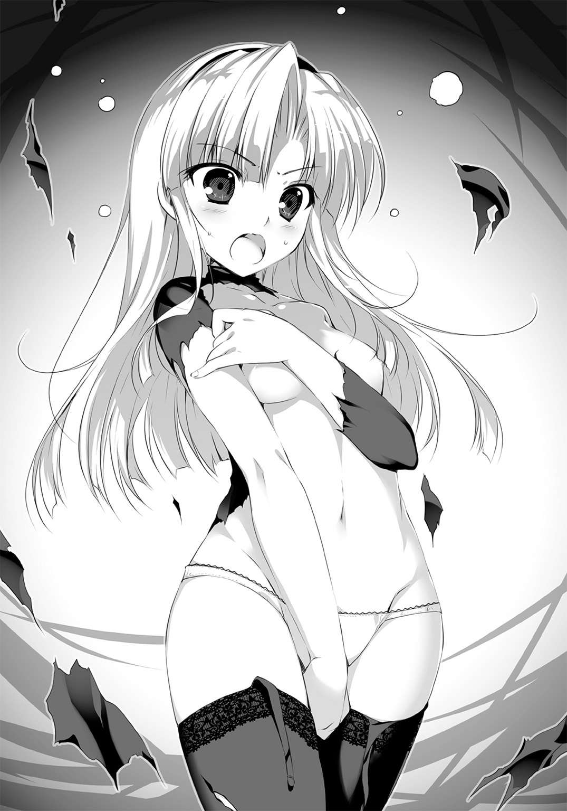
「どっ！ どこも悪くない！」
バッと腕を組んで胸をそらし、エレナが診断を遮った。ぱんつモロ見えっスな。
「このバカ男との手合わせが久しぶりで、勘が戻らなかっただけだ！ 体調は普通だ！」
「いや俺もお前、ちょっと変だと思うぞ。なんか、こう、遅いし」
「お、っそ......!?」
「遅いし。とろいし。すっとろいし。調子悪いなら、治療受けてから再戦でもいいぞ？」
じぃー、とテトリアが医者の目で見上げる。
エルフ姉妹より背が高いエレナと彼女は、まるで姉妹というかなんというか。金色の視線にさらされて、バーバリー・ブルーがそそくさと目をそらす。
「い......医者の分際で、騎士たるわたしに物言いをつけようなどと！ 言語道断――」
「虫歯だね？」
ギクッ
と、騎士たる彼女の全身が震えた。より大きく目をそらし、ほとんど明後日のほうを向く。
虫歯、って......アレか？ 歯が虫に食われるとかいう。前にお師匠さんもなってた。
「な、なにを......なにを無礼な！ わたしは、そんなんじゃ......」
「可能性高いのはそれ。カハラン病の線もあるけど、あれは基本的に冬の病気。まぁ他の病気かもしれないし、とりあえず、診察させてもらっていいですかね？ レディナイト様」
「は......!? な、なに、診察......!?」
「ええ。騎士様でも、お安くしときますよ？ その結果、大事ないならよしじゃないですか」
胸元のペンダントをカチカチ鳴らして、テトリアが営業スマイルを見せる。
まぁほんとに安いんだし、言ってることも正しい。病気じゃなきゃ診察受けられないなんてこたないしな。
だもんで、エレナが左の頰に手をやり、一歩後ずさったことでいろいろモロバレした。
「せ......精霊医の、診察......！」
「はい。虫歯があるのはよくわかりました」
にこ、と笑顔で断ずるテトリア。容赦ねえ。
「ぜひ治療させてもらいたいんですけど、そのためにもまず、問診させてくださいな。どうして虫歯になったのか、その原因と思えることをなるべく詳しく聞きたいんです」
「げ、原、因......!?」
「あるでしょ？ 心当たりのひとつやふたつ。もちろん、話せる範囲で構いませんから」
へえー。診察って、こういう質問してたんだな。遠目に眺めるばかりで知らなかった。あ、顕現する魔物に【疵】の原因が関係するんだったな。いまだによくわからんけど。
でも、虫歯の原因なんてわかりきってないか？
甘いもの食べすぎたり、歯磨きサボったりだろ。いちいち聞くようなものでもない――
と、俺は思ったもんだから。
「き......今日は」
じりっ、と距離をとったエレナに、即応することができなかった。
「今日は、わたしの負けにしといてやるッ！」
「エ、エレナーレくん!? 帰るの!? あ、それじゃどうも、お邪魔しました。ハルスハイファンさん、あなたにとっての最速で、立ち退く準備お願いしますね。さーみんな行こうかー」
両手で胸を隠したままにしては信じがたい速度で走り去っていくエレナを、律儀に鎧の残骸を拾い集めたタフタスたちが追いかけてゆく。
逃げた。あのエレナが、騎士学校に猛獣ありと恐れられたエレナが、逃げた。
どうなってんだ？ 虫歯だろ、歯が痛いんだろ？ だったら治せばいいのに。
今のやりとりに、俺にはわからない恐ろしい裏の意味でもあったのか？
テトリアが、なにやら物言いたげに上げかけていた手を、ぱたりと身体の横に戻した。
「逃がしちゃった......んー、マズったかなぁ」
「はは、ま、いいんじゃね？ あいつ女だけど、普通じゃない根性してるから。多少恥かいた程度じゃ、明日にはけろっとしてるよ......あ、そしたらまた来るかもな。ウザいな......」
「また来るならいいけど。ちゃんと視診してみないと、外見以上に深い虫歯だと危ないよ」
「危ない？ 虫歯で？ でも大したことないんだろ？」
「場合によっては死ぬよ、普通に」
おいなんだそりゃ。マジか。知らなかった。
「エレナさんていうの？ 今の子」
「あ、ああ。エレナーレ・ハートラン。さ、さがしてこようか？ どんくらいで死ぬんだ!?」
「そこまで進行しちゃいないとは思うよ。でも、ちょっと今は、それだけじゃないから......気になることは気になる。リドくん悪いんだけど、今日から休憩時間中とかに、エレナさんさがしてみてもらえるかな？ 見かけたら連れてきてくれるぐらいでいいから」
「わ、わかった。てか、え、休憩時間あるの？」
もちろん、とテトリアは苦笑した。まだまだ甘いね、とでも言うかのように。
「今日からはぶっ続け、何日勤務になるかわからないよ！ 夜にも仕事があるかもしれない。さっきみたいなことも、きっといっぱいある。だから休憩もしっかりとって、いっしょにがんばってちょーだい！ ......それとも」
「ん？」
「勇者様だったんだね。知らぬこととはいえ、失礼いたしました。こんな根無し草の、ナマイキな医者のお手伝いなんて、やっぱり嫌？ かな......？」
今度は俺が苦笑した。テトリアだって、まだまだ甘い。
「ちゃんと聞いてたか？ 元だよ、元。それも変な噂が立つようなね。よろこんで手伝うさ」
「ほんと......？ ほんとにいいの？ お給金出ないよ？ 相変わらず」
「い、いいってそんなの。そのかわり、あはは、おっぱいでももませてもらえたら？」
「......も、もう。またなに言ってるの！ バカなんだから」
えっ......お。おお？
なんか、反応が。かつてと違うような。
ちょっとほっぺた染まってたりして、テトリアが三倍かわいいような。......待てよ？
フーテンのプータローだと思ってた男が、実は一国に認められし勇者。もとい元勇者。
女の子的には、アリなシチュエーションってことか？ そうだな？ そうなんだな!? おおおみなぎってきたあああああ！
「テ......テトリア。そう、俺は勇者だから。勇者だから言うことはマジメなんであって、やましい気持ちなんて決してないわけで。い、一回だけ、後学のために――」
「お師様、お師様」
ちょちょちょと近寄ってきたイニスが、テトリアを手招きしてなにやら耳打ちする。
「なになにイニスちゃん？ ......え？ 王宮......上司......おっぱい？ えっちな......お、王女様......!? 九日......剝奪......」
あらやだなにこのヤバげな空気。聞こえてくる単語がもれなく不穏。
愛想笑いしかできない俺に、イニスの報告を聞き終えたテトリアが、にっこり笑顔を返す。
「リドくん。あ、ううん、元九日勇者様？」
「う、うんっ？」
「今までありがとうございました。どうぞお達者で。さーみんな仕事に戻ろうねー」
はいですぷーくすくす、とイニスが会心の嘲笑を漏らしている。
違うんだ、とか。誤解なんだ、とか。話を聞いてくれ、とか。
君のおっぱいがいいんだ――とか。
言おうと思えばいろいろと、余計なことを言えたかもしれない。だけど俺は、ただ叫んだ。
「み......見捨てないでえええええええっ!?」
＊＊＊＊＊＊＊＊＊＊
それから数日間。テトリアにギリギリ見捨てられずにすんだ俺は、けっこう疲弊した。
エレナーレ・ハートラン。
騎士の名門ハートラン家の次女で、去年の王城騎士学校の首席。十五歳だった三年前に全国剣術大会ベスト８。一昨年はベスト４。去年もベスト４。
華奢で可憐な容姿と、比類なき剣速を併せもったレクセンタルの華――なんて言われちゃいるけど、キレると危ないお子ちゃまでもある。俺の目から見てもかなり幼い。胸の話でなく。
だって、お医者が怖くて逃げ回るなんて。ねえ。
「待てっつってんだろがあああ!?」
「断るッ！ 絶っ対に、断るッ！」
見かけた俺が追いかけるたび、掛け値なしの全速力で逃げていく。
いい加減面倒だから、派遣騎士団の宿の前で待ち伏せもしてみたけど、不気味な勘でかわされる。ケモノかあいつは。
治療が必要だから捕まえといてもらえないか、とタフタス団長に頼みもしたけど、
「も、申し訳ない、すみませんっ！ 精霊医として特別許可のない方々には、騎士団としての協力をしかねる約束になっていたりするので、そのー......！」
「街の許可は出てるはずなんスけど......」
「そ、そこのところが難しくありまして。空き地からの立ち退きは強制できないけど、街からの退去は勧告できたりとか、あれやこれやがややこしく。すみません、ごめんなさい！」
謝り倒されつつきっぱり拒否され、地味に八方塞がりだった。うーむ。大人って難しいな。
そーゆー追いかけ疲れ。疲労段階レベル１。
テトリアの仮設診療所には、連日患者の列ができている。
治せるか治せないかはっきり断言される、って評判が良くも悪くも働き、冷やかしの類は一切ないままだ。からかうつもりが、うっかり不治の病を宣告されたくない、ってことだろう。
反面、初日より患者は増えた。ダメ元でテトリアに診てもらって、治せないとわかったら教会や施療院へ行く。便利な通過ポイントとして、彼女の的確な診断が利用されてるんだ。
俺にはそれが、どうしても腑に落ちなかったりするんだけど。
「それでいいんだよ？ 特にこういう、病気が流行るか流行らないかってときの街はね。少し赤字、くらいが平和の証。あたしが儲かるようになってきたら、危ないってことだよ」
テトリアの意見に、アニスもイニスも同意らしい。俺だけが、どうにもモヤモヤする。
理由はたぶん、相変わらず身体を張って魔物と戦う、彼女たちの姿なんだろう。
日に三、四回は、ナノワクトがモンスター化する。しばしば「間違えちー!?」の産物もあるみたいだけど、ともかくテトリアが戦ってるんだ。毎度毎度、傷だらけになって。
キリがないことは、もうわかった。俺は剣を持ってるだけで、医者でもなんでもない。
だけど、俺の戦力を見込んで治療して、裏目に出た結果俺が死んで――この場の誰にも倒せないモンスターが、人々を巻きこむのが怖いなら。
テトリアはいいのか？
極論、死んだらいちばん困る人材は、精霊医術を施せるテトリアなんじゃないのか？
「そうなったとき、あたしやあんたにモンスターを倒してほしいってことだから」
イニスはそう言うが、そんな問題じゃない。このままじゃ、日を置かずテトリアは壊れる。
なんて考えてもどうしようもなく、俺は一人で頭を抱えてるわけだけど。
「あの、これ......お花つんできたの。せんせえにわたして......？」
この街に着いて、最初に治療してもらっていた女の子が、花束を持ってきたりする。
俺がそれを伝えると、テトリアが笑ったりもする。
「すみません......ジオホルクさんが、もう一度こちらで診てもらえ、って......」
紹介状を持って街医者のところへ行った患者が、なぜか送り返されてきたりする。
テトリアがすぐさま診察すると、これまたなぜか今度は治癒できたりもする。
わけがわからん。医術はなぜ、こうも難しい？ 剣術のほうがよっぽど簡単だ。
慣れないことに頭を使って、思考疲れ。疲労段階レベル２、と。
大したこっちゃないわね、なんてイニスあたりにゃ言われるかもしれない。まぁそうだな。俺もここまでだったら、体力にものを言わせることもできるさ。けど問題は夜だ。
夜が、問題なんだ。
＊＊＊＊＊＊＊＊＊＊
「こんな時間だと、けっこ不気味だなおい......」
俺は闇夜にまぎれ、その建物を見上げた。
派遣騎士団が総員で利用している、そのわりにはボロくて小さな宿屋だ。街の中心部からずいぶん外れた、この場の雰囲気には妙にマッチしちゃいるけど。
こんな時間とは言ったものの、さして遅い頃合いでもない。
だがこの時間、すでにあいつが――エレナが床に就いているであろうことを、俺は知っていた。幼いころからの習慣らしい。夜更かしが苦手という情報もある。なんてお子ちゃま。
派遣騎士団も昼間、伝染病患者への炊き出しやら、教会の手伝いやらで働きづめだ。
なおかつあのバカは、必死ぶっこいて俺から逃げ続けてもいる。かなりの疲労だろう。
すなわち、夜襲の好機。
「エレナをふん縛って連れていきゃ、テトリアの興味がしばらくそっちにいくかも......！」
冷や汗をぬぐいながら独りごちる。
そう、テトリア。極めて熱心に、俺の記憶喪失を研究してくれているテトリア。
うれしいことだ。まったくありがたい。だけどその熱意がここ最近、いろんな意味で明後日の方向に向かっちゃってるような。そんな気がしてならない。
たとえば、昨日の夜なんて、こうだ――
「この『牽引』って魔術はねぇ、カンタンなんだけど、とぉーっても便利でねー」
真っ赤な顔でケラケラ笑いつつ、テトリアはそう講釈をぶったもんだ。
もちろん顔色の原因は酒だよ。俺が買ってきた弱めの果実酒でも、ゆでダコの有様だよ。
「本来、もともと魔力が強かったり、あらかじめ関連づけしたものを強く引っぱる術なんだけどさ。んも、あたしくらいになっちゃうと、フツーの人間でも引っぱれちゃうんだよにぇー」
「そう、かいっ......！」
「だから逃げらんないよ？ うふふおとなしく、特製反射薬バージョン６を飲みなさいっ！」
背後から組みつかれ、ムリヤリ液体をのどに流しこまれる俺。昨日のは特にひどかった。あまりの味付けにめまいがして、気づいたらベッドで仰向けだった。
俺に馬乗りになったテトリアが、一見マジメな感じで両手をかざしている。
「んー......んんー......ん、んー！ んふふふ、わかんにゃーい」
「こっ......また、か、よ......！」
「だーってわかんないんだもん。フシギだねぇ。さすが第三種......よんしゅ？ あれ？」
「あんたが酔ってるからだろっ......！」
「なにおー!? 酔ってないもん！ こーなったら本気出してやる、うりゃあ！」
ぴと。
と、俺の額に、自分のおでこをくっつけたりして。
「っテ......テ、テトリア、ちゃん......!?」
「ちゃん付けキモーい......んー」
ぺた、とほっぺとほっぺと合わせたりして。
くんくん、とあごの下のにおいを嗅いでたりして。
挙げ句、俺の胸に耳を押し当て、何かを聞こうとしてたりして――その。馬乗りになって、胸に耳ってことは、俺の腹にも何かが押しつけられてるわけで。でっかくて柔らかいわけで。
最高の感触。最っ高のシチュエーション......っなのに身動きひとつできない！
どんだけだよ!?
「テトリア、テトリアマジで、ちょっともうマジで......！」
「すぴー」
「寝るなあ!? 起きろおいコラ！ あるいはもませろ！ マジで！ お願いします！」
つられていろいろとかなぐり捨てる俺に、テトリアはむにゅむにゅと身を起こして、
「んうー。やっぱぁ、アレだよねー。薬だよね。明日はもっと、濃くつくることにするよー」
「げぁ!?」
「だってあたし酔ってないしー。酔ってないけどー。でもちょーっと待ってねー......」
いつもの酔い覚ましをくいっとあおり、
「ぱびゅぅっ!?」
口から鼻から噴き出して自滅する――
――こんな調子だ。毎夜毎夜。
酒を飲むなと怒ってみれば、泣く、わめく、ジタバタする。命の水を取り上げるのかとイニスに泣きつき、なんやかんや俺が殴られたりもする。
やってられるかバカタレ！ 疲労レベル10だ10！
あれより濃い薬とか、毒にしか思えねえ。死ぬ。記憶が戻る前に死ぬ、医者の薬に溺れて。
せめて今夜くらい、胃腸を休ませてやらねば！ ていうかエレナもいい加減にしやがれ！
「つーわけで、いくかね」
月夜に浮かぶ宿屋への侵入は、呆れるほどあっさり成功した。
起きてる気配のある部屋も多いけど、さすがに軍事拠点でもなんでもない民宿だ。さくっと宿帳を確認し、階段を上がって、二階の一室に素早く入りこむ。
案の定、エレナはぐっすり眠っていた。
窓から忍びこむ月光が、金色の髪と無彩色のクロースアーマーを照らしている。......そう、あの、アレだね？ 金属鎧の下に着込んだりする、緩衝に優れた布防具だね。
はは、マジだったのかあの噂。ただでさえ少ない色気が全滅してやがる。
今年からの新入りのくせに一人部屋なんて割り当てられてるのも、女の子だから気を遣われてるんだろうに。これじゃムダもいいところだ。しょうがねーなぁ。
「テトリア、は......こんなだった」
両手のひらを上に向け、それぞれまるくお椀型にしてみる。
うん、こんなだった。それでいてめっちゃ溢れてた。あれナマでさわったら、ど、どんなだ？ 一瞬で記憶戻ったあと、一周回ってまたなくすんじゃね俺？
まぁともかく。手の形をそのままに、ぐーすか寝こけているエレナの胸に置いてみる。
「ん......」
サイズ差は......おいおい。なんだこりゃ。え、俺今、おっぱいさわってる？
これタッチカウントしていいの？ 板じゃね？ つかクロースアーマーごわごわ。
記憶の扉が閉ざされていくのを感じる。これじゃ開かないわ。開か――ない、けど。
この手の中に、すっぽりと。
ナマならもっと、すっぽりと。
......なんか、今までにない感覚。これはこれでアリだってことか？
いや、違う。そんな些末なことじゃない。これも――これも、おっぱい？ 護るべきもの。そうか。諸手の中に包みこんだこれは、まさしく俺に護られている様......ああ。
奥が深い。お師匠さん、やたらと奥が深いっスこの道。
おっと。時間かけてる場合じゃなかった。まずは猿ぐつわ、と。
「......ん。......っ!?」
「あ」
いかん、と認めた瞬間に、視界の端から何かが迫る。
とっさに身を反らした俺の鼻先を、短剣の刃がかすめた。瞬時に距離をとり、舌打ちする。
「気づくとは......！ ほんと勘だけは冴えてやがんな、虫歯のクセして。ケモノかマジで」
「き、きっ......きききき貴様、り、りりっりっりっ......！」
「お迎えに来てやったぞ。テトリアがお待ちかねだぜ」
「り!?」
短剣を小さな胸に抱き、エレナはベッドの上を後ずさった。名前が出ただけでこの反応か。
「うちの師匠じゃあるまいし、医者嫌いもいい加減にしろ。めんどくさいんだよもう」
「し......し、忍びこんでおいて、何をえらそうに。そ、それに今、今、何をしていた!?」
「猿ぐつわをちょっと」
「それだけか!?」
「それだけだ」
「......そ、そうか」
あれ。納得した。やっぱ変だぞこいつ。いまだに「であえ」とも「曲者」とも叫ばないし。
この薄闇でも見て取れるほど、エレナの頰は真っ赤に染まっていた。
ナイチチタッチがそれほどのショックか、クロースアーマー就寝が恥ずかしいのか。どちらにしろ、妙に女の子らしい反応だな。引き際としては、今だろうけど......
「なぁ......治療しろよ。テトリアがやたら気にしてるんだって、お前のこと。お医者の勘ってやつだな。ひとつだまされたと思って。それともなんだ、虫歯治療は怖いか？」
「ふ、普通の医者に行く......！」
へ？ 普通の医者？ ってお前。虫歯で普通の医者ってお前、それは。
「いやいや。虫歯だろ？ 外科医とか行ったら、即抜かれるぞ。即だぞ。嫌じゃないのか？」
「嫌だ......！ でも精霊医はもっと嫌だ！ 悪魔の罠め！ てゆーか悪魔め！」
「ムチャクチャ言うなおい。いやまぁ、気持ちはわかるぜ？ いろいろ伝説とかあるしな。でもテトリアはそんなんじゃない、ちゃんと治してくれるから」
「そうじゃない！」
は？ じゃあどうなんだよ？ 精霊医術なら、きっと抜かずに治療できるってのに。
うちのお師匠さんなんて、下手に医者から逃げ続けたもんだから、業を煮やした実の娘にムリヤリ引っこ抜かれたんだぞ。「お隣に教わった」とか言って、歯に糸結ばれてさ。
「まぁいいや。どっちにしろ、連れてくだけだからな。今日こそは覚悟しろ......」
ちゃき、と腰のスレイガドロスに触れた。
もちろんハッタリだ。少し大声を出されたら、こっちが逃げなきゃならない。
テンパってるエレナがそれに気づかず、状況を不利と見て勝手に観念するのを期待した、なめくさった一手だったんだけど。
予想外というか、予想通りすぎというべきか、エレナは毛布を投げつけてきた。
「ぬっ......!?」
あえてその場を動かず、ただ剣を抜いて正眼に構えることで、毛布を縦に切り裂く。
それだけで物を斬れてしまうのが聖剣の恐ろしさ。奇襲に備えたまでだったが――
「なあ!?」
俺の驚愕と、窓が砕け散る音とが同時に響いた。
飛び降りやがった、のか!?
靴がないからはいて寝てるとは思ってたけど、まさかの強行逃走。ここまでハデに、迷いなく逃げるか!? 精霊医術の噂ひとつで!?
当然もう、廊下からは回れない。ここは二階だが、直で追うのみ。
下での待ち伏せがないことを確認し、無言で飛び降りた。「待てぇーっ！」は心の中で叫んでおく。路地を駆け抜け、通りを突っ切り、いくつも角を過ぎ去って。
「足速ぇあいつ!!」
結局逃走に成功され、俺は吐きそうな心地で一息ついた。
いや、知ってたよ？ 昼間もあんだけ逃げられたし、エレナのスピードは承知してたつもりだけど。まさかここまでとは。やっぱあのバストサイズゆえの速度なのか。
だが、諦めるわけにはいかない。というか今帰ったら、ジャストでテトリアにとっ捕まる。
しばらく、あっちの通りこっちの通りと、人の多いところをさがしてみたんだけど。エレナはついに見つからず――しかしそのかわりに、
「♪思い出す 雲を追った日々 風のような 君を想う日々」
一度見た身体、いやいや顔を発見した。
道端に黒いマントを敷き、ぺたりと座りこんで竪琴をつまびく姿。濃い緑色のセミロングヘアが、月の光を浴びて重厚に輝く。鼻先近くまで伸ばされた前髪。露出度極大の、下着と見紛うような服。そしてなにより、生唾もののボンキュッボンなスペシャルボディ。
いつぞ、酒場で会った楽師さんだ。まだこの街に、って当たり前か。出られないし。
「♪想いは 遠く空の果て 夢のような 君の言の果て」
月夜を制して静謐に、朗々と詠いあげる彼女の前髪の奥の目が、一瞬俺を捉えた気がした。
おほぉ、なんてズキュンとくるポーズ......！
両足を絶妙に崩して、服の奥のあえかな影が見えるような見えないような。周りを囲む男どもは皆、全身全霊で月光を応援してることだろう。がんばれ！ もっと照らすんだ！
なんて目を凝らしてるうちに演奏が終わる。あ、エレナのこと忘れてた。
「アージュちゃん、今夜こそ付き合ってくれよ！ なあ！」
「おっちゃんなんでもおごっちゃう！ メシでも酒でも宿屋でも！」
「俺と約束してたよな！ ああっ、待ってアージュちゃん！ せめて振り向いて！」
えらい人気をぷいとそでにして、楽師さんはマントの土を落とした。
蠱惑的な肢体をすっぽり包みこむ瞬間、また視線が俺を貫いた気がする。ああ、気がする。気がするったら気がする！
こっち向いてー、アージュちゃん好きー、ケッコンしてー、などなど追いすがるファンたちに俺も混ざりこんだ。何を言えばいいかわからなかったから、とりあえず、
「酒場ではありがとうー」
「なにっ!? おいボウズ、お前今なんつった！」
「アージュちゃんが酒場にいたのか!? どこの酒場だ!? 何飲んでたんだ!?」
「どの椅子に座ってたのか言え！ ワシャ今すぐ行ってその椅子買い取る！」
うわあああああ、オッサンの波があああ！ つか全員アホだ！ 俺を上回るアホだ！
もみくちゃにされ、なんとか脱出したときには、もう楽師さんの影も形もない。
角を曲がったのは見えてたけど......おのれオッサンどもめ。相手にされちゃいないくせに、確実に視線を合わせた、いいや見つめ合ってたと言っても過言じゃない俺の邪魔すんなよ！
諦め半分で覗きこんだ細い路地の先を、カンテラの灯りが曲がるのが見えた。
まるで俺の目に映るのを、あらかじめ予期していたかのように。
「......。どぅふ」
我ながら気味の悪い笑みをもらし、路地の中をひた走る。
先の角を曲がると......あれ。いない。今度こそ追うのが遅すぎたか!? あ、あわあわ。
適当な方向に全力疾走しようとしたとき、ピン、と遠く弦の音が響く。
聞こえたほうへ足を進めると、いた。薄闇をすいっと泳ぐように、別の角へと消えていく。もはや迷うまい。うおおお、としゃかりきに追いかける。
「待って！ 待って待ってあの、酒場ではありがとう！」
それしか言うことないのか俺。
「ずっと歌ってたの？ 知らなかったな、けっこうあの酒場には逃げて、いや行ってたんだけど。すごい人気だったねぇ、俺も聴き惚れちゃったよいやほんと」
「......ふふ。おありがとうございます。見送りにいらしてくださったのですか」
「え、あっ、ご、ごめん。やっぱ迷惑だよな、ついこんなとこまで......」
とんでもございません、と微笑んでくれる。
うおおー、真っ赤な唇......！ エレナにこの半分でも色気があれば。アニスちゃんの天使な笑顔も最高だけど、こーゆーのも、ええのう。
お、送るよ？ という腰の退けた疑問形の提案にも、彼女はこっくり頷いた。
「頼もしゅうございます。夜の夜中に、女一人では物騒で」
「そ、そうだよな！ 特に君みたいな子は、フードとかで顔隠さないと危ないよ」
「まあ。恐縮なこと......わたくしのような女でも、お気に召してくださるのですか？」
「えっ、そ、そんなようなだなんて！ 歌はうまいし竪琴うまいし美人だし、さっきの客とかすごかったじゃないか。そういえば、アージュちゃんていうんだね？ 宿こっちなの？」
「左様です。ネズミが多くて、困っております」
「ははは、そうなんだ。よかったら俺、退治してあげるよ？ なーんて......」
「よろしいのですか？ ぜひにお願いしたいところです」
おいおいおい。なんだこれ、いいのか。急に人生がイージーモード入ってないか。
しゃらりしゃらりと、マントの衣擦れを響かせながら先をゆくアージュ。
野暮ったい装いだけど、ふくよかな腰つきは隠しようもない。ど、どうにかなっちゃうんだろうか――こんな人気のカケラもないうらぶれた路地やら、明かりの灯っていない屋敷の裏やらを、幻想的に揺れるカンテラの光だけを頼りに進んで。
この美女とこれから、どうにかなっちゃうんだろうか！
てゆーか。......あれっ？
「こっちのほうって、宿屋あったっけ？」
アージュの歩みが止まった。
荒れた畑が望める、川沿いの道。街の郊外の、さらに外側みたいだ。
月がひときわ明るく見える。アージュもそう思ったのか、カンテラの灯りがふっと消えた。
「ああ......失礼いたしました、リッシード様」
「え？ ああ、道でも間違えちゃっ、ぉおお......!?」
カンテラが無造作に投げ捨てられると同時、ぱさ、とマントが地に落ちた。
濃い青を基調とした、踊り子風の衣装が再び露になる。
ま、前から見てもスゴかったけど、これ背中から見るとほぼなんにもないじゃん!? お尻にちょっぴりひもがかかってるだけだよ！ 食いこみがもう。ゾクゾク。ヤバい暴発しそう。
「こちらに、宿はございません」
「そ、そそそそーなのっ？ まさか屋外でっ......あれ。俺、名乗った......？」
「こちらには墓場がございます。あなた様の」
ジャン、と竪琴がかき鳴らされる。
肌が粟立った。
数秒前とは違う『ゾクゾク』が、俺の全身を這い回る。殺、気――囲まれてる。こんな何もない場所で!? 隠れるところなんてないぞ、どこにいる!?
というか。何者だ。
「アージュ、ちゃん......!?」
「何の恨みもありはせず。なれど、寄る辺もなしは夜の常......お命、頂戴いたしましょうか」
振り向いたアージュは、妖しく笑っていた。
金地に緑のラインが走った、特異なデザインの竪琴が、不気味な不協和音を奏でる。
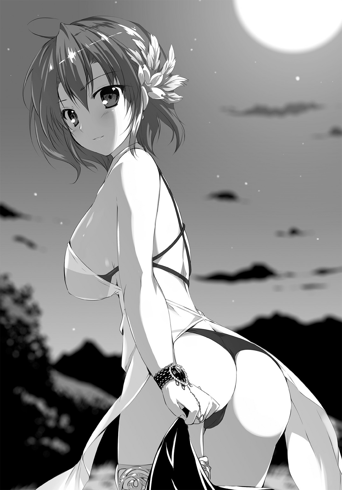
周囲の殺気が形になった。地面の上に青白く光る目が現れ、無数の鳴き声もこだまする。
「これは......！」
ネズミか!?
「ご機嫌よう、九日勇者様」
ジョァンッ、と鳴り渡る弦の音が、開戦の合図なのは俺にもわかった。
四方八方から押し寄せる群れを、とっさにスレイガドロスで薙ぎ払う。
やっぱりネズミだ。普通のよりひと回り大きいみたいだけど、モンスターじゃない。だけど、この数......！ 的が小さいし、暗くてよく見えない！
それを利用して、襲ってきている。獣の知恵じゃない、アージュが操ってるのか？
そうだな。どう考えても、そうだ、な。
「――だッ！」
思いきり地面を蹴りつけ、ネズミどもの上を跳んだ。
アージュまでの距離は十歩ほど。だけどその気になれば一手だ。決断に手間取ってたらヤバいってことも、まったく簡単に想像がつく。
だから、斬る。恨むな！
「っ......！」
分厚い前髪に隠されたアージュの表情が、驚愕に歪むのが見えた。ためらわず振り抜く。
硬い音が、ネズミの鳴き声を制して響き――聖剣が跳ね返された。
「な......くっ!?」
離されちゃダメだ。大きく退がるアージュを追い、ひたすらに刃を振るい続ける。
掛け値なしに本気で打ちこむ攻撃が、しかし金色の竪琴にすべて受けきられた。
バカな!?
「さす、がに、音に聞こえた勇者様......！ 一の一手で、わたくしを殺す選択をなさるとは。今の世の剣士にしておくには、惜しいお方......」
言葉には乗らない。反応しない。
少しでも距離が空いたり、動きが止まったりすれば、あっというまにネズミに群がられる。だけどこの女、何なんだマジで......!? ベスト状態のエレナに劣らない使い手だぞ！
油断した。俺の剣術じゃらちが明かない、この敵には届かない。
ハズバドル剣術、では。
――だからって！
「っう......!?」
闇夜を切り裂いて放たれた反撃の回し蹴りを、ギリギリで回避した。足長っ、きれいっ......言ってる場合じゃない、距離をとられた！
ざざざざ、と洪水のような音を立て、ネズミの大群が楽師との間に溢れる。
俺の強ばった顔を見たんだろう、アージュが逆に表情をゆるめた。
「お覚悟を」
「......なんで俺を狙った？ 会ったのだって二度目なはずだろ」
今度は俺から言葉を振る。
ただの時間稼ぎだ。声に混ざったわずかな諦念を察したか、楽師がさらにほくそ笑む。
無論、手がないわけじゃない。
多少サイズがデカくても、ネズミはネズミ。一撃で致命傷とかいう話じゃないだろう。
アージュを倒すのが難しいなら、右手か左手、どちらかを斬って演奏できなくする。当然、相手も予想してるだろうけど、予想を上回る突進力を出せばすむ。あとは逃げる。
だが今は、アージュのすべてが万全だ。
話に乗ってきてくれて、わずかな隙でもできれば......でも、手か。ムリかなー、手はちょっと。......もう一カ所、斬れそうなとこはある、かな？
「もしかして、アレか。おっぱいばっか見てたの、やっぱキモかったか。すみませんでした」
「ふふ、まさか。英雄色を好む......女の栄誉ではございませんか。状況こそ違えば、元勇者様の子種をいただくのも、やぶさかでありませんとも」
「!? マジで!? じ、じゃああのちょっとだけ、ほんのちょっとだけ心変わりしない!? 一回だけ！ 先っちょだけ！ おっぱいもませてくれるだけでも！」
「こたびのことには、貴方様のお力がいささか過剰なのですよ」
おい聞いてんのかこのアマ。けっこう本気でよろこんだんだぞ俺は今。
「精霊医の存在は、むしろ重畳......なれど矛まで携えられると、今の病では太刀打ちできませぬ。最良の結果を求めるならば、あちらより、こちら。ご理解くださいませ」
「いや理解させる気ないだろ？ わかった見るだけ、見せるだけでいいから。つーかその服もう見えてるよーなもんじゃん？ 冥土の土産に、その美巨乳を......。今の病、だと？」
ビュリンッ、と今まで以上の激しさで竪琴がかき鳴らされる。
機先を制された。相手の隙どころじゃない、俺が墓穴を掘っただけだ。
想定の倍以上の被害を覚悟する。一斉に殺到するネズミどもに、俺も地を蹴って――
「尖炎火霊、アルトレ！ 重複可視ッ！」
背後から飛んできた二条の炎が、左右のネズミを焼き尽くした。
頭が動く前に体が反応し、前後のネズミを剣線で打ち払う。
今の声。でもってこの魔術は。
「テトリア!?」
「リドくん、親玉を！」
聞き間違いじゃない。川沿いを走ってきたテトリアが、猛然と攻撃魔術を連発した。
ケモノの苦手な炎の術式。さらに白い切削杖を振り回し、バシバシどつき回して奮戦する。
まさかの援軍。すぐさま竪琴が鳴り、うごめく影の半分が向きを変える。
アージュが、気をとられた。今の最善手は、テトリアの言う通り！
「うおおおッ！」
大声をあげ、派手に振りかぶる。打ち下ろした一撃は、芸もなく竪琴に止められた。
峰打ちということに、アージュは気づいただろうか。
スレイガドロスは、世にも珍しい片刃の聖剣。その刀身はわずかに反っている。
切っ先で竪琴の縁を引っかき、防御面の角度をムリヤリ変えて、
「――ッせエ！」
続く一撃に、全体重をかけた。
勢いに逆らわず、受けながら大きく後ろへ跳んだアージュが、ギョッと顔色を変える。
「......弦を。この、弦を......!? なんということ......」
「弾けないだろ！ 観念しやがれ！」
ネズミたちの動きが、気配が、明らかに鈍くなったのがわかった。
ブーツで蹴散らし、アージュへと向かう――が、彼女は背を向け、一目散に駆けだした。
追うべきか。しかしネズミが残っていて、テトリアがいる。
逡巡する俺を振り返り、アージュがにぃっと嗤った。
「わたくしの負けです......が、まぁ、よろしい。いずれまた、お会いいたしましょう」
いつのまにか拾い上げていた黒いマントを羽織り、細い路地へと消える。
今度はカンテラを点ける親切もしてくれないだろう。追跡は厳しいか......くそっ。
「テトリア！ 無事か!?」
「うん！」
「うおおっ!?」
すぐ後ろまできていた彼女にびっくり。いろいろな意味で心臓に悪い。
「ネ......ネズミは？ いないか、もう。ていうか、どうしてここに......!?」
「リドくんさがしてたら、変なカッコしたエレナさんが街を爆走してるの見つけたから。これは派遣騎士団のお宿があるほうかなって！」
「おお、なるほど！ ......え、ここ、派遣騎士団の宿とぜんぜん方向違うけど」
「はぇ？ そなの？」
すげえ。なんだこの頼れる方向オンチ。背筋がちょっとうそ寒いんですけど。
「まぁこの近くまできたら、急に魔女の気配がしてね。もしかして、って思ったら......」
「魔女......!? アージュが、今のがそうなのか......！」
「そうでしょ確実に。何なの？ リドくんの敵？」
「......だと、思う。心当たりはないけど、俺を名指しで襲ってきた」
魔女、だったのか。いまだまともに人の手が入ってない北の山脈を主な棲処とし、精霊神を崇めて日々魔術的研究に明け暮れる女たち。一般人と、というよりあらゆる国家と折り合いが悪く、たびたび街に現れて悪さをするっていうけど......勇者を、元勇者を狙って、人殺し？
どういうことなのか、さっぱりわからない。
「ってか......テトリア、それ。左手！」
「......ん。ちょっと、牙っぽいのにかすった」
テトリアの手の甲から、血が滴っている。ネズミが――いや。アージュがやったのか。
「くっそ......！」
「リドくん、もうムリだよ！ 追いつけないし、一人にならないほうがいい！」
「っ......す、すまん。ごめん！ 俺のせいだ......！」
慌ててハンカチを取り出し、ひとまずテトリアの傷を縛る。
なんてこった。
「あはは、ありがと。なんかここに来てから左手ばっかケガしてるけど、大したことないよ」
「いや......ほんと悪かった。俺が、その、な、なかなか帰らなかったから......」
「すんごい露出とでっかいおっぱいにつられて、ほいほいついてっちゃったから？」
「ううっ!? そ、そんなことは！ おっぱいはテトリアのほうが大きいし絶対！」
「うるさいわっ！」
右手のボディブローを埋めこまれる。痛みにしかし笑いつつ、俺はそっとため息をついた。
嫌な予感がする。誰でもそうだろうけど、こういうときの勘は......比較的、よく当たる。
＊＊＊＊＊＊＊＊＊＊
翌朝。空が白みはじめて間もなく、朝靄も晴れきらない頃合い。
俺は一人、宿屋の裏手で棒立ちしていた。ゆっくり色を変えていく空を、うすらぼけーっと眺める。昨日と同じ服に、剣をはいただけの格好だ。
昨夜は、さすがに俺の診察はなかった。宿に戻ってテトリアとわかれ、すぐに床についた。
いや、まぁ。正直、あまり眠れなかったわけで。
ほんの数時間前の、あの戦い。まったく苦々しいものがあった。
「......お前もだろ？」
ちゃり、とスレイガドロスを鳴らす。聖剣。聖なる剣。その名の聞こえはいいけれど。
聖剣とはすなわち、祝福を受けた魔剣。
世の中に伝わる、いわば『精霊医術は悪魔の罠だ』と同レベルの噂に、そういうのがある。ただしこっちはモロ真実だ。聖剣と魔剣は、製法も性能も一切変わりない、同じものだから。
普通の剣と違うのは、斬れ味。というより、斬れるか斬れないか。その一点に尽きる。
「たとえば達人がいたとして......」
なんてぶつぶつ呟きつつ、俺は石をひとつ拾い上げた。
手のひらより少し大きい程度のそれを、ぽーんと高く投げ上げる。
仮に石を斬るほどの腕前があっても、剣がそれを成し得るかはわからない。
逆に言うと、斬りつけて斬れなかった場合、『腕前』が悪いのか『剣』が悪いのか、どっちの原因で斬れなかったのか判断するのが難しいわけだ。「石くらいなら腕が悪いだろう」「鉄なんて斬れるわけない、剣が及ばないだけだ」とか、そういう曖昧な感じになる。
だけど、魔剣・聖剣はなんでも斬れる。斬るに値する結果を実現する。つまり、
「ッは」
抜き打ちで放った剣線が、落ちてきた石を両断した、この結果。
もしもこれに失敗していたら、それは剣が悪いんじゃなく、斬るに値しない結果が実現された――俺の腕が悪いことになる。だから、その、なんだ。昨日のアレね、うん。
......あの竪琴を斬れなかったということはっ......！
「うぅ、うあああああああクソおおおおお！ おお！ おお！ おぉらっ！」
苛立ちの末尾を気合いに変えて、抜き身の剣で素振りをはじめる。
聖剣を振った以上、言い訳はできない。エレナの鎧斬ってよろこんでる場合かよ。
俺が弱かったせいで。
俺の腕が、剣術が、及ばなかったせいで――あの子がケガをしてしまった。
「ちょっとばかしっ......大会でっ......勝ったからって！」
完全な落ち度。慢心とすら言える。一体いつまで油断していた？
女の色香に惑わされた、ってだけならいい。いやよかないけど、昨夜最悪だったのは、
「勝てない！ 相手と！ わからずに！ 自信満々にケンカ買った挙げ句っ......！」
切った手札が通用せずに、自ら窮地に陥った。
あの竪琴は尋常のものじゃない。それを見切れなかったことがまずひとつ。
斬るつもりになればいつでも斬れる、そう勘違いしてたことが大きなひとつ――
「くっ！ ......っそ」
振り回していた剣をだらんと提げて、俺は荒い呼吸を整えた。
頭の奥に、固いしこりがある。眠れなかった原因だ。その名前も、俺は知っている。
ハズバドル剣術では、魔女を倒せなかった。
ならばあのとき、逃げることを選び損ねていた俺がとるべきだった、最良の手段とは。
――もう 終わっちゃったよ？
「ふー......ー......―――......ー......」
上がっていた息を、細く、長く、限界まで吐ききった。
足をやや開き、跳びこみの姿勢。重心を可能な限り分散。
順手に持った抜き身の剣を、振り下ろす勢いを利用してくるりと持ちかえる。
鈍く輝く刃を、小指の側に。
逆手。
「ー......ぅ......」
吐ききった息をゆっくりと吸い、言葉はなく、わずかに唇を開いた。目の前をただ拓けたものとして認識、見るともなしに視ることを成す。
ハズバドル剣術に、逆手の技はない。
俺は世間一般にとって、九日勇者で元勇者、多少詳しけりゃハズバドルの門弟だ。だけどエレナをはじめ、幾人かは俺を逆手のリドって呼ぶ。逆手なんて、俺は習ったこともないのに。
「この世で護るべきもの、みっつ......」
閉じるでもない、開くでもないまぶたの裏に、なにかが姿を見せた。
ぼやけた世界。背景が見えない。ただ人影だけが在る――あの夢の、影。
夢と同じく両刃の剣を手にして、夢と違って構えをつくり、そのままじっと動かない。
その構えは、逆手。今の俺がしているのと同じ、逆手持ちだ。
（国と、誇りと、おっぱい......）
影は動かない。そこも夢とは違う。声も出さないから、自ら胸中で繰り返す。
あのとき一体どうすれば、アージュを初撃で斬れていた？
（国と、誇りと......）
影は動かない。イメージだけが湧く。そうか。もっと、もっと踏みこんで。
あの女の吐息を感じられるほどにまで踏みこんで。その吐息を消す。
（国と......）
国ってなんだ？
影が、
動く。
「――......ッだ!!」
前へ跳び、スレイガドロスを横一文字に振り抜く。
白刃に裂かれた空が、一瞬その温度を下げたようにすら思える――我ながら、なかなかに鋭い一撃。今の剣なら、なるほど、あの竪琴ごとアージュを斬り伏せられたかもしれない。
けど、人影はもう、どこにも見えなかった。
まぶたの裏にも、この使えない頭のどこにも、姿の残滓すらない。だからこうして止まってしまう。俺の逆手は、つまりそういうことだ。
剣の持ち手を逆に握ると、まぶたの裏に影が来る。
影をなぞって、俺は剣を振る。
正確には、なぞってるわけじゃないのかもしれない。よくわからない、すべて感覚的なものだ。ただ、影が動いて、同じく俺が動いて、負けたことは一度もなかった。
剣術大会のときも。あの北の村でも。
「練習だと、やっぱ......一回で消えてくれるな」
スレイガドロスを順手に持ちかえ、苦笑しながら鞘へ納める。
昨夜、アージュが人家のないほうへ向かったとき、罠を察するべきだった。それができずとも、誘いこまれたと知ったとき、いち早く逃げるべきだった。
それすらできなかったなら、あのネズミの群れを操る魔女を、『最も確実に殺せる手段』でもって戦うべきなんじゃなかったのか？
今の俺にとってのそれは、残念ながら、ハズバドル剣術じゃない。
でも。......でも、これは。
逆手は、正直言って、こわい――
――全身血まみれで歩いてたんだと 山すその道をたった一人で
「ッ......！」
ぱしゃっ、と聞こえた水音に、俺はビクッとして目の焦点を合わせた。
汗が冷えている。背中に張りついた肌着が気持ち悪い。どのくらい棒立ちしてたんだ......？
「あ、っと......井戸か」
今の音は、たぶん。そういえば勝手口のすぐそばにあったな。
服のすそで汗拭くより、体洗わせてもらおう、そうしよう。
つまり井戸にいるのは、宿屋の亭主か誰かだとナチュラルに決めつけてたわけだけど。
「......え」
「う......？」
建物を回りこんで、俺は動きを止めた。てゆーか、動けなくなった。
テトリアが身体を拭いている。
大きなタライに水を張り、白いタオルを両手で絞って。ローブを井戸端にかけ、上着のボタンをいちばん下だけ残して外し、脱ぎ落としている――そんなところまで見て取れたわけで、ついでに不意打ちだったわけで。肝心なところも、まぁ。
丸く大きく張りだした、ほどよく上向きの真っ白いおっぱい。
水の滴と朝靄に濡れて、日の光にキラキラ輝く様は......もはや女神か？ 美の化身なのか？
自分でも信じられないぞ。アレを服越しにとはいえ、さわったことがあるだなんて。
「お......おはよう」
挨拶してくれるし。なんて爽やかなおっぱいなんだ。
「おはよぅどわあッ!?」
水が入ったまま飛んできたタライをギリギリでかわし、そのまま後ろを向く。
挨拶したあと我に返ったんだろうけど、ときどきとんでもないことするなこの子!? どんな腕力してんだ。
「ご、ごめんっ！ でも事故だ、今回はほんとに事故なんだ！」
二撃目がきたらかわせないので、背中を向けたまま声を張りあげる。
「や、宿屋の人がいるのかと......！ 俺も井戸使おうと思って、いやほんとごめん......」
「うー！ うがぅー！ がるるるる」
「うなってる!? お、落ち着いて!? 最近ケモノでいい思いしてないことだし！」
自分のセリフを聞き、俺はつと眉をひそめた。たった今見た光景を思い描く。
どこかに、違和感があるような気がした。
地面に両ひざをつき、服をはだけているテトリア。茜色の髪も少し濡れていた。瑞々しくも艶めかしい肌の曲線を伝い落ちる滴が、ぷくりと尖ったピンク色の頂点をいやいやいや！ そこじゃない！ この世のものとして違和感あるくらいきれいだったけど今はいい！
今は、そう――タオルを絞っていた、テトリアの左手。
「な、なぁ、テトリア......傷、は？」
慌てて服を着ているらしい背後の気配に向かって、そっと問いかける。
昨夜のケモノ、ネズミにつけられたはずの外傷が、まったくなくなっていた。見間違いじゃない。だって、メセトワに来た初日に負ったはずの火傷も、同じく見当たらなかったんだ。
火傷のとき、テトリアは言っていた。自分で自分を治療することはできない、と。
だったら、傷は一体......？ 火傷は完治したんだとしても、昨日の嚙み傷は、なぜ？
「......見られちゃったか。ま、もうずいぶんいっしょにいるもんね。しょうがないか」
「そ、そっち向いてもいい......？」
いいよ、と許可を得て振り返る。
白いローブに、若草色のシャツを着たテトリアが、困ったように笑っていた。
「さて、と。どうしようかな。なんとかなーなーで、ごまかし通すつもりだったんだけど」
「な、なにを......？」
「薄々気づいてたんじゃない？ あたしの身体が普通じゃないこと」
大きく何度も頷く。ほんとバツグンのボディだよね！ 若干身長が足りないだけで。
「なんか、失礼な誤解されてそーな気配もあるけど。......まぁ、いっか」
「いっか、って――う、えっ......!?」
どこか投げやりな雰囲気で、テトリアがシャツをまくりあげる。
突然の行動を受け止めきれず、もともと加速気味だった鼓動がいよいよ本気出して三倍速になり、それでも視線は露になってゆく白磁の肌から動かせないまま――
現れた刻印に、俺は両目を見開いた。
左の胸の、真下。いいや、少し乳房にもかかっているだろうか。リンゴくらいの大きさの黒い正円が、複雑な紋様を囲いこんでいる。見覚えがあるようなないような、でもそれは。
魔術印。身体に刻まれたそれを見せ、テトリアはもう一度苦笑した。
「こんなの見られちゃったら、言い訳のしようもないしね」
「え、ごめん。それは見えてなかった。その真上にある奇跡にいろいろと釘付けで」
「へ。......う、うそっ!?」
「あ、かっ、隠さないで！ いや今ばかりは変態的な意味じゃなくて！ ち、近くで、見てみてもいいかな......？」
「......。いいけど......スケベしちゃダメだよ？」
正直、そのセリフにはだいぶぐっとくるものがあったんだけど。
テトリアのそばでしゃがみこみ、再びたくしあげられるシャツの下を覗きこんだ――やっぱり、魔術を行った印。まるで刺青みたいに肌と同化してる。円の上が少し乳房にかかってるけど、見えてる部分だけで十分だ。元騎士柄、魔術印や召喚印の知識にはわりと自信がある。
でもこんなものは、知らない。
「何なんだ、これ......!? 召喚、いや。封印......でも、ない......!?」
「あは、やっぱりわからないか。知ってたら、リドくんスゴかったけどね。南大陸ぜんぶと、この大陸の西の果てからここまでで、誰も知らなかったから」
「み、なっ!? なんて!? 南大陸、と......西からここまで!?」
何度も素っ頓狂な声をあげてしまう。
大海を渡った先にある大陸と、レクセンタル王国があるこの大陸の、西の端からここまで。なぜだろう、ウソだとなじれなかった。十年や二十年で旅できる距離じゃないのに。
まさか。
「あたしね」
見上げると、テトリアの顔から笑みが消えていた。
「死なないの。死ねないの。そういう、魔術......ううん病。あたしが持ってる【疵】、なの」
「そんな。......バカな」
「笑わないでくれるんだ？ うれしいな。精霊医にはけっこう話したんだけどさ。半分ぐらいの人は大笑いして、三割ぐらいの人もとりあえず笑ったから。君みたいな顔したのは、二割」
おしまいっ、とシャツを元に戻して、彼女は笑顔を復活させる。
死なない、死ねない、って......それは。
「不老不死......!? き、九十九歳って、ほんとだったのか!?」
「厳密には、不老じゃないみたいなんだけどね。九十九歳は、たぶんほんと。できれば言いたくなかったんだけど、でも隠しててごめんね。いっぱい心配してくれたもんね、リドくん」
「そ、それはまぁ......でも、その、う、うえええっ......!?」
「あははは、そうなるよねー。変な身体で、気持ち悪いよね」
「いや!!」
幸いにもと言うべきか、すぐさま首を横に振ることができた。ためらいなんてなかった。
だって数日前には、まったく逆の状態だったんじゃないか。
「気持ち悪くなんてない！ そんなこと言ったら、俺の記憶喪失だって気持ち悪いだろ！」
「リドくん、自分で気味悪いって言ってた」
「うぐ!? う、あ、じゃあ......じゃあ、気味悪くない。俺も気味悪くない！」
「あははは。似た者同士ってわけかな？ あたしたち。......ま、そんなわけでさ。あたしはあたしで、この【疵】をどうにかしたくて旅してるの。医者がキズモノだなんて、シャレにもなんないんだけど......思い立ってからそろそろ五十年。さっぱり収穫ないんだぁ。あはははは」
テトリアと十年いっしょにいるという、アニスの言葉も今は理解できる。
だけど俺より年上とか、そんな......そんなレベルじゃなかった、ってな。
アニスたちは知ってるのか、と聞くとテトリアは頷いた。当然か、風呂とかいっしょに入りに行ってたし。ああそうか、それで女三人だけで旅を......
「さて。リドくんにお願いがあります」
投げてしまったタライを拾ってきたテトリアが、腰に手を当てて言う。
「今日は診療のお手伝いはいいから、昨日の魔女をさがしてみてくれない？」
「魔女......アージュか。警備隊には伝えとこうと思ってたけど、なんでまた？」
「あたしの勘が当たってたら、これからあんまりよくないことになる。本人がいたら、いろいろ聞き出せるからね。まぁ、もう......街にはいないんじゃないかと思うけど。でも、お願い」
頷く俺に、自分の左胸をぽんぽん叩いて、「ヒミツだよ？」と彼女は笑った。
もちろん言うわけがない。誰にも言うわけがない。今の仕草でほよほよ揺れるおっぱいエロい、なんてムダなことを考えられる程度には、あれこれ整理できてきた。
要するに、なにも変わらないわけだ。テトリアは医者で、俺はその患者。
「あ、なぁ！ その、の、覗いちゃってほんとごめんだけど。大通りのほうに、朝からやってる湯屋あったぜ？」
昨夜はばたばたしちゃったもんな。宿の風呂も、まだやってないし。
テトリアが一瞬、なにかをためらったように見えた。けどすぐ笑顔になって、
「ありがと！」
ハダカを覗かれた者とは思えない言葉を残し、ぱたぱたと宿へ入っていく。
記憶喪失の勇者と、死ねないお医者さん――か。確かに、似た者同士。
「【疵】モノ同士、ってか......」
さんざんだな。
【第四章 勇者の逆手】
テトリアの依頼通り、俺は空き地での手伝いをパスして、一人街を歩いた。
アニスはにこにこ送りだしてくれたけど、イニスは例によってかわいくない文句を言う。なにが「ナンパね？ うっわ、キモいから」だ。手伝ったら手伝ったで皮肉言うし、手伝わなかったら嫌味言うし。俺のこと嫌いなだけだろ。いつかぎゃふんと言わせてやる。
だいぶ勝手のわかってきたメセトワの街を、あちらこちらへ赴く。
街の入口で検問を張っている正規兵にも話を通した。お久しぶりねの兵士長は、露骨に嫌な顔をしつつも「そんな女は通してない」と教えてくれた。あっそフーン。
よく行く酒場の店主。毎日見かける屋台のお姉さん。長らく空き地にいるうちに、すっかり馴染みになったパン屋のおじさん。手当たり次第に聞きこんでみたけど、思わしい結果は得られなかった。一、二度見かけたことがあるかもとか、そういう返事ばっかりだ。
むしろ、『数回姿を見せた場所』には二度と行っていないような、そんな節すら感じた。
何度も現れる可能性があるところ。俺が頭をひねって思いつけたのは、
「なんだい!! 仕事の邪魔すんじゃないよ!!」
「すみません、すみません！ そ、そんなつもりじゃ！」
街いちばんと評判の施療院。
こないだ訪ねたときより、はるかに多くの患者でごった返している、ここだけだった。
「そんな女見ちゃいないよ!! 見ても覚えてないさ、あんたが誰か思い出せないようにね!!」
相変わらず患者を寝台に寝かせ、てきぱき診察しながら女医が怒鳴る。
確か、ミザネラ――ミザネラ・ジオホルクとかいったか？ んっとに元気な人だなぁ。
でも、俺を忘れてるのは都合がいい。確か騎士団とかなんとか、適当ぶっこいたからな。
「一度見てたら忘れない女ですよ。こう、胸がボーンで。尻がバーンで」
「そりゃ興味深いね!! アタシよりいい女かい？ ガハハハ!!」
「あ、はい」
「あ？」
「いっ、いえ!? そんなそんな、とんでもないスよ、はははは......」
め、めんどくせえ！ 情報ないみたいだし、もういっか。
そりでは～、とフェードアウトしはじめる俺を、振り向いた女医の青い目が捉える。
相変わらずすごい迫力とダミ声。意味不明な存在感だ。よく見たら足下は長靴だし。
なんつーか......剣術館の近くにあった、揚げ物屋のオバチャン思い出すなぁ。バツイチ四十歳。悪さしたら騎士でもぶん殴られるけど、必ずコロッケ一個おまけしてくれる。懐かしー。
「そいで!! そのなんとかいう楽師も、アタシの患者だってかい!!」
「や、ですから、患者として来てたーとか、そういうのないかなと......え、楽師も、って？」
「フン!! 空き地の小娘のおかげで、普段来ないようなやつまでかかりに来ててねえ!! ったく冗談じゃないよ、このアタシを気軽に使い回すなんざ!! 今度ケツひっぱたいてやる!!」
「その光景はけっこう見たいっスね。でもなるほど、この盛況はテトリアのせいでしたかー」
「違う」
へ？
「しかし楽師ときたかい!!」
一瞬、冷水を浴びせるかのごときテンションの下落を挟んでのダミ声。やっぱやだこの人。
「察するにあんたの思い人かね!! ニクいねぇ、もし来たら手ひどく治療しといてやるよ!!」
「なんスかその意地悪......それに治療もどうかと。楽師のカッコしてても、実は魔女なんで」
「......なんだって？」
ぴた、とミザネラが動きを止めた。
今度こそ、部屋の温度を急激に引き下げるような沈黙が訪れる。がやがや騒がしい廊下と一瞬で決別した空気に、思わずのどを鳴らした。何なんだ......何か知ってるのか？
しばしのち、ミザネラが寝台を回りこんだ。
患者の左腕に取りつけられていた器具――ガラス製と思しき透明なそれを、無造作に取り外す。見慣れない代物だけど、おそらくは瀉血用の道具だ。
「ちょいとこらえな」
そう患者に声をかけるが早いか、ミザネラの右手に小刀が現れた。
この俺に抜く手も見せないムダな早業。ぶくぶくローブの内側から出てきたのか？
彼女はそのまま、患者の左腕を素早くピッと切り裂いた。
「よし......、ったく!! どうしてまっすぐうちへ来なかったい!! 南区なんぞに寄り道してるから、『あついの』だけじゃなく『かわいたの』まで出ちまってるよ!! バカタレが!!」
かかりつけなもんで、とバツが悪そうに答える患者の腕に、器具を付け直すミザネラ。
テトリアの治療とはぜんぜん違うけど、迷いの一切ない見事な手管だ。
「フン!! 一服つけるかねぇ、おぉーい!! いつものを中庭に出しな!! あと紙とペン!!」
どかどかとミザネラが部屋を出ていく。人差し指でくいっと、無造作に俺を招きながら。
廊下の突き当たりのドアを開けると、施療院の中庭へ出た。
なるほど、中央がくり抜かれた四角い建物だったのな。日当たりと窓の数を確保するための庭、その一角に設えられた小さなテーブル席の前で、ミザネラが頭巾を取り払う。
「......えっ？」
ばさっ、と日の光を浴びて広がる、ワインレッドの髪に目を惹きつけられた。
意表をつかれる艶やかさ。なんか、あれ？ イメージと違う。髪の時点で違う。
目をぱちくりさせる俺の前で、口元を覆う布までもが外された。
「その魔女!! 怪しいもんだね!!」
「びっ......美人だとおおお!?」
「そうさ!! なんか文句あんのかい!!」
そうさって。あるわ！ めっちゃ文句あるわ！
どういう現象だこれ。なんでこんなっ......しゅっとした鼻筋に分厚い唇が色っぽい、熟した魅力のオトナな美女から豪快なダミ声が聞こえるんだよ!?
動揺を隠せない俺ににやりと笑い、ミザネラは勢いよくローブをも脱ぎ捨てる。下から現れたのは――またローブ。かなり厚手で、無数に並んだホックに小刀や小瓶がずらりと引っかけられてる。いろいろ言いたいことはあるけど、転んだら死ぬんじゃねーかこの人？
ずんぐりシルエットの原因になっていたと思しきそれらも脱ぎ落とし、薄い肌着一枚になったミザネラが、ドカッと椅子に腰を下ろす。
「ふー......おーぉ、きたきたきた」
シスターさんが一人やってきて、蒸留酒と葉巻を置いていった。
っておい。まさか。葉巻に火ィつけて、グラスに酒注いで、うわあ！ 飲んだ！
「ぶっはあ!! ったまんないねえ!!」
「おいちょっとー!? あんた仕事中だろ！ 酔って診察するつもりか!?」
「こりゃリンゴジュースだよ」
「うぉいどういうこったよ!? むしろ納得できねーよ、なんで酒のボトルに入れてんだ!?」
「あの小娘、モノホンの精霊医だったみたいだねえ」
聞いちゃいねー。このへんちょっと、テトリアに通じるものがあるな。
「なかなか堂に入った診察をやりくさる。多少は見直してやってもいい。少なくとも、事ここに至ってまで庁舎から出てこない内科医どもよりゃマシさね」
「なんかそれ内科医どうこうってか、人間的な問題の気もしますけど......なんで俺に？」
「名前を呼び捨てる間柄なんだろ、あの小娘と」
うわ変なとこ耳聡いし！ ここもテトリアとおんなじだよまったく！
「精霊医なんざ気に食わないけど、アタシの邪魔しないなら別にどうだっていい。けどね、魔女......魔女はまずいよ。これからたぶん、よくないことになる。もしもこの流行病、根っこに魔女が絡んでるとしたなら......」
「......！ 魔女が......この病気に!?」
「そこの紙に、思いつく限りその魔女とやらの特徴を書きだしておくれな。似顔絵の心得でもあるなら、そっちのがいいけど」
「い、いえ。あ、他にも見てる人いるんで、描けないか聞いときますよ。でも、なぜ......？」
「そもそも伝染病がちとおかしい。皆体が熱くてセキが出る、目がかすむ。あんた、カハラン病ってのにかかったことあるかい？」
「ええ、一度。まさにお言葉通りの症状でしたけど」
「そう。症状も特性もカハラン病にそっくり、違うのは人に感染ることだけ......アタシャこの病気の報告書も作ってるけどね、亜カハラン病なんて名前にしようと思ってたくらいだよ。けどね!! 気づいたのさ!! 伝染病にしては......感染力が弱すぎる!!」
なんだそりゃ。
「そ、それって、実はカハラン病なんじゃ......？」
「うつることはうつる!! それだけで十分とんでもないのさ。だけどアタシが言うのは、今!! 現状!! この施療院内での感染がゼロなんだ、街の流行とあまりに嚙み合わない!! 他の要因が絡んでる。それが神罰なら、まだいいけどね」
「神の......。俺はそう教えられたけど、テトリアは違うって言ってました」
「アタシもそう――......、いや。やっぱ神罰だね!!」
へ？
「精霊医に魔女!! でっかい異物がふたつも街にのさばってるから、精霊神様がお怒りになられてるのさ!! そうに決まってる、やれ忌々しい!! そら書けたのかいっ!!」
乱暴に俺の手から紙をひったくりざま、ぼはぁーと葉巻の煙を吐き出すミザネラ。
医者じゃねー、こいつ絶対医者なんかじゃねー。よくまぁ訴えられないもんだ。
「書けたなら行っちまいな!! カゼひくんじゃないよ!!」
「は、はーい......」
「待ちな!! ......あの小娘。なんでアタシにばっか患者寄越すんだい」
数多くの施療院や教会が、街にはある。しかしテトリアは、自分の手に負えないと判断した患者に、すべてこのミザネラの施療院を紹介していた。
その理由は俺も気になったから、一度聞いてみたことがある。
『あのヒスババア、ムダに声デカくてウザいしめっちゃムカつくけど、医者としてはまだマシっぽいし。それに、患者に信頼されてるみたいだから？ 変わってるよねー、この街の人』
「って言ってました」
「とっとと出てきな!! このクソガキめが!!」
な、なんで俺が怒鳴られてんだよ!? ウゼえ！ めっちゃムカつく！
＊＊＊＊＊＊＊＊＊＊
そんな調子で、魔女の目撃情報すら満足につかめなかった俺は、せめてということで第二目的の達成に全力を注いだ。
すなわち、
「はっ、はなせぇー!? 下ろせコラッ、リッシード!? 貴様、貴様許さん！ 許さんぞー！」
ふん縛ったエレナを肩に担いで、俺はよく晴れた空の下、いつもの空き地へと戻った。
アニスとイニスは啞然としているが、テトリアは無慈悲にもこっくりと頷く。
「ごくろーさまだよ、リドくん。捕獲できてなにより」
「おう。これだけはやるまいと思ってたんだけど、こいつの勤務中に奇襲した」
「ありゃー。ああそれで、団長さんもついてきたんだ？」
どうもですー、と俺に続いて診療所に入ってきたタフタスを、寝台に乗せられたエレナが恨めしげににらみつける。
「なぜです団長!? 彼らには協力しないはず、むしろ公務執行妨害で縄を打つべきでしょう！ というかそれ以前に、部下が縛られててなんですかその笑顔は!?」
「こ、これは地顔だよぅ。いやね、確かに協力はできないけど、妨害しなきゃならない決まりもないわけでさ？ 部下である君を守るのは私の役目だけど、君、虫歯って本当？」
「そ......それは、まぁ、本当であります」
「ならリッシードさんの行動は、君を救うためじゃないか。敵じゃない人からどう守れと......い、いや、そんなににらまないでくれないかい!? 怖いよ！ とってもバーバリーだよ！」
今にも嚙みつきそうな顔つきのエレナに、テトリアがにっこり笑いかけた。
「お久しぶりでーす。お話しするのは二回目だけど、なんだかそんな気しないってゆーかー」
「くっ......!? な、馴れ馴れしいぞ、医者風情が！」
「はいはい、あたしは医者風情ですよ。だから怖がらなくてもいいでしょ？」
「無礼者!? 誰が怖がるものかっ！ 今日にも医者に予約をとろうと思ってたんだ、普通の医者にな！ ただ、その、い、忙しくて。思うにまかせずいただけで」
「うん、炊き出しとかしてくれてるもんね、派遣騎士団。とってもありがたいことだから、リドくんもお仕事中は手出ししなかったんだと思うけど。今日はあたしがムリにでもって言ったんです。このままほっといて、あなたが痛みに耐えかねるのを待てなくなっちゃったから」
胸元のペンダントを右目に当てて、テトリアが診察をはじめようとする。
エレナは身をよじり、激しく抵抗した。完璧に縛ったから、縄は絶対外れないけど。
「嫌だっ！ か、患者の意思を無視した治療なんて、暴力と同じだ！ 絶対に、絶対に！」
「このままじゃ、お口もお顔も腐っちゃうけど。いいの？」
「うぐ......!? ま、まだ平気だ！ だいたい何なんだ、なぜわたしを狙う!? 虫歯を患ってる人間なんて、それこそ腐るほどいるだろう！」
まぁ、確かに虫歯って、年中無休で流行ってる伝染病みたいなもんだしな。
治水がしっかりしてるこの国でも、三十すぎて虫歯のない人間はいないって聞く。俺は大丈夫だけどな。朝と夕と、歯みがき布に塩つけてごしごしやってるし。......え、大丈夫だよね？
てゆーか、あれ？ 虫歯の治療のはずなのに。
テトリアはいつものペンダントを使って、病気の患者と同じ診察をしてるような？
「......よかった」
暴れるエレナに手こずりつつも診終え、テトリアは額に浮かんだ汗の珠を拭う。
「治療、できるよ。アニスちゃん、イニスちゃん、手術室準備！」
「「はいです！」」
ギクッ、と俺のほうが派手に反応してしまった。
「し、手術室......!? やっぱそんなに悪いのか、このエレナは!?」
ナノワクトが『満腹』になり、モンスターの顕現をまぬがれないほどに。
バカだとぉ!? とまたじたばたするエレナをよそに、テトリアは首を横に振る。
「今なら大丈夫。虫歯は相っ当ひどいけどね！ かなり長期化してたものだよこれは。剣なんて振り回したところで、とても実力出せる状態じゃない」
「よ、よけいなお世話だっ......!? だからって治療する理由にはならない！」
「十分なると思う。まぁでもね、患者の意思は大事だよ。たぶんモンスターが顕現すると思うけど、それは虫歯好きのナノワクトがもういっぱいいっぱいってだけだし。でも、最初に言ったでしょ？ もう待ってられないの。今のエレナさんは、伝染病に対してすごくもろい」
「......え？」
「かかったら、たぶん助からない」
強烈なひとことに、俺まで言葉を失った。
具体的すぎる未来。いいや、テトリアにはその結末が見えてるんだろう。
治せないでも、治さないでもない。死を突きつけられて、エレナが反応できないでいる。
「伝染病っていうわりに、感染力は強くなさそうだった。だからとにかく、発症してる人から治療してきたけど......これからどうなるか、危うくなってきたの。治せる人を治しておかないと、精霊医術じゃ手遅れになる可能性が高い」
「て、手遅れ......？ そんな。だって、歯が痛いって、だけで......」
「ナノワクトって、みんな悪食なの」
巨大なガラスビンから取り出した妖精を、テトリアが自分の手のひらに乗せる。
悪食。そうだ、アニスも言っていた。満腹と、悪食と、食中りが問題なんだって。
「ナノワクトが、ケガや病気を食べて治すのは知ってます？ この子たち、好き嫌いがある上に無分別でね。虫歯を食べるのが好きな子でも、同じ体が別の病気を持ってると、いっしょに食べちゃう。それが嫌いな病気でも。切り傷を治させようとしたら、擦り傷までまとめて食べられて......食中りしたナノワクトがモンスター化する。精霊医の言葉で『複合食を起こした』っていうの。食べ合わせ失敗ってこと。精霊医術でいちばんありがちなミスだよ」
「モンスター......あ、悪魔の、罠め......！」
「うん。治ると思ったら魔物が出て、襲われるばかりか周りまで巻きこむんだもんね。ひとつ間違えたら、ほんと悪魔が来たみたいな結果になっちゃうんだけど。今のエレナさんは、その一歩手前......この虫歯はもう、物理じゃ治せない。伝染病に感染した場合、精霊医術には、あたしにはなんにもできなくなるし、しない。今しかないの。......わかってもらえました？」
オークやらピクシー亜種やらの、比較的くみしやすいモンスター。
リードラットやリトルキメラなどの、人間にとって危険なモンスター。
それらが入り乱れて出てきてもしっかり対処できたのは、ひとえにテトリアの読みのおかげだ。よく間違えるけど。わりと豪快に。
食中りしたナノワクトは、満腹時よりはるかに強力なモンスターを顕現させる。
エレナは他に傷を負ってない。虫歯以外は健康なもんだ。だから、今なら治せる。
「よくわかりました」
黙って話を聞いていたタフタスが、唐突に口を挟んだ。
「治してもらおっか、エレナーレくん」
「なっ......わ、わたしはまだ、なにも！」
「君におかしな治療されると私も困る。でも、スジの通った話じゃないか？ 精霊医術のことはよく知らなかったけど、どんな危険があるのか、何を心配すればいいのか、よくわかった」
「ぐ......！」
「精霊医術を危険とする、例の説を軽視するつもりはないよ。でもこうして、目の前にあることじゃないか。それで判断しよう？ それとも怖いかいぁあああにらまないでごめんなさい」
結局しまらない団長を笑うように、ナノワクトがテトリアの右手でぴこぴこ踊っている。
ふぅ、と逆の手で頰を伝う汗を払い、テトリアはエレナに微笑んだ。
「さて！ 治療に同意していただけるなら、今度こそお話ししてもらえます？ どうして虫歯になったのか、原因と思えることをね。甘いものは好き？」
「あ、大好きですよこの子。自分で作ったりもしてますし、しかも分けてくれないですし」
「ふんふん。いちばん最近、意識していっぱい甘いの食べたのはいつ？ 何年前でもいいよ」
「あっ、ついこないだです。メセトワに発つ直前、急にお菓子山盛り食べまくってましたね」
へえー！ エレナにそんな特技っていうか、普通の女の子っぽい趣味があったなんてな。
ぜんぜん知らなかったよ。けっこうかわいいとこあるじゃないか。
答えてんの本人じゃないけど。
「そうしようと思った理由はなに？ 食べたくなっただけ？ 他になにかある？」
「うーん私が思いますに、あのとき起こってたことといえば――」
「団長ッ!!」
「ひっ!? ご、ごめんなさいごめんなさい！ だってー！」
がるるる、と虫歯のクセして牙を剝き出すエレナに、テトリアが苦笑する。
「ほんとに言いたくないことなら、言わなくてもいいです。治療はできる。ただ、モンスターへの対策として、知れば知るほどこっちが有利になる。聞いていいことなら......ね？」
「......。そ......その......」
エレナの頰が赤い。当たり前か、ひどい虫歯なんだもんな。
俺をちらちら見てるのはなんでだ？ あ、お菓子好きだって知られて恥ずかしいのか。バカになんてしないよお子ちゃまめ、げへへへ。
もごもごと言いよどむエレナに、テトリアが前屈みになる。耳打ちを促してるんだろう。
そう思ったのに。
「......え？」
かく、と地面にくずおれたテトリアを見て、俺の体は身構えることを選んだ。
スレイガドロスの柄に指を引っかけ、周囲すべてに気を配る。
見えないなにかに、攻撃されたんじゃないか。遠くからなにかに撃たれたんじゃないか。
そう考えてしまうほど、俺にとって突然の変化だった。
「テトさん！」
すぐに駆け寄ったアニスが、テトリアの肩を支える。俺とは違う風に見えてたみたいだ。
なんらかの攻撃じゃ、ない――だったら。え。どういうことだ。
「こん、な......こんなに、早いなんて。こりゃ、油断しちゃったかな......」
弱々しくテトリアが呟く、その言葉の意味がわからない。
俺の分の仕事まで一人でこなしていたイニスが、何事かわめきながら駆けつけてくる。エレナとタフタスはきょとんとしていた。俺と同様、状況がのみこめてないんだろう。いや。
なんとなく、俺にはわかった。テトリアに今、なにが起こっているのか。
「病......気？」
ベルトセットから取り出した、小さな筒状の器具――師のペンダントと同じ物を使い、その様子をつぶさに診てとったイニスが、表情を歪める。
汗にまみれた頰を真っ赤に染めて、テトリアがずいぶん力なく笑った。
「みんな、離れて......感染っちゃう、かも」
地面に転げ落ちたナノワクトが、不思議そうに人間たちを見上げていた。
＊＊＊＊＊＊＊＊＊＊
空き地で診察を待っていた人々には、一旦家に帰ってもらった。
もめるかと思ったけど、みんなわりと素直に解散してくれる。確かに、そんなに珍しいことでもないか――医者が病に冒されるなんてのは。
すぐに治るよ、と笑ったテトリアは今、ミザネラの施療院で身体を休めている。
有り体に言って、追い出される形で宿を出たわけだ。ここの亭主がそういう、まさに悪魔を見る目でテトリアを見てたとはね。ずいぶん口汚くよけいなこと言ってくれるもんで、食堂のカウンターを縦に二分割しておいた。静かにはなった。
おかげでゆっくり時間をかけて、残されたテトリアの荷物を整理できるんだけど。
「......。これは......」
ベッドの前に正座して、俺は冷静にその布切れを見つめた。
リュック代わりのガラスビンだけ背負ってるのかと思いきや、テトリアの荷物は意外なぐらい多い。医療用具はイニスが持ってるとしても、この衣類は一体どこに隠してるんだか。
たとえば、この純白のパンティ。
女性用の下着が一般化したのは、そう昔のことじゃないってどこかで誰かに聞いた。
いやーそれにしちゃあ、デザインも洗練されたもんだなぁ。
ひらひらとあみあみで実にかわいらしい。ふむ、テトリアがこれをはいている、と。
......素っ裸より、むしろはいてるとこを見たい。フシギだ。女体のなんと奥深きことか！
「ごはッ!?」
視界のすべてが横滑りに吹っ飛ぶ。
壁と床板に叩きつけられながらも、手にした下着は放さなかった。こすって破けたりしたら、テトリアがかわいそうだ！ 護るッ！
「そういう冗談、今は笑えないから」
痛みに震えながら顔を上げると、イニスが無表情に見下ろしていた。
姿勢に、生足を振り抜いた名残がある。こいつほんと俺に暴力振るうの好きだな。
「荷物はわたしが整理するって言ったでしょ。あんたは自分の部屋カタしなさいよ」
「い、いや......お手伝いしようと......」
「あーあ、下着もっかい洗わないと」
「ひでえ......！」
ずりずりと、イニスは四人分の洗濯物の入った麻袋を引っぱり、俺から遠ざける。
空き地での仕事中、シーツなんかを消毒するついでに、彼女が毎日洗ってくれていた。
「あんたさぁ」
袋の中から、俺の服だけイニスがぽいぽいこちらに投げてくる。
「どっか行きなさいよ」
「いい加減俺もやさぐれた心を前面に押し出そうかと思うんだが」
「そうじゃなくて。お師様の入院、けっこう時間かかるから」
「......治らないのか......？」
「そんなことないからッ!!」
ごめん、と謝る。にらみつけるイニスの瞳が揺れ、すぐに俺を映さなくなった。
そうだな。何バカ言ってるんだか、俺は。テトリアが治らないなんて、あるわけない。
「死なないんだもんな......」
「......!? っな、んで、知ってるの......!?」
「聞いた。ちゃんと本人からな。ムリに聞き出したわけじゃないぞ、俺そんなことしないぞ」
「べ、別に、そうとは言わないけど......。そっか。お師様が、お話しに......」
洗濯物を畳む手を止めて、イニスは少しの間うつむいた。
長いまつげが、褐色の肌に影を落とす。見るからに元気ないけど、やっぱこいつ美人だな。
「お師様は......必ずまた、この街で診療するから」
「うん」
「あんたのこと、お師様が妙に構いたがってることも知ってる。でも元に戻るのに一カ月はかかる、その間は何もできないから。姉様はお師様についてるし、わたしは勉強してるけど、あんたはやることないでしょ？ とりあえず、適当にどっか行ってたら」
なるほど。言ってることはわかる、確かに少し気が楽になった。
実際、テトリアがいない間、俺にできることなんてないしな。バイトでもしとくかね。
ただ。
「なぁ。俺の勝手な推測なんだけどさ」
「なによ」
「あの伝染病、感染力低いんだよな？ テトリアも、街医者もそう言ってた。なのに、ここまで広まってる原因って......ひょっとして、ネズミ、か？」
壁に立てかけておいた聖剣が、ちりっと鳴った気がした。
イニスは手を止めず、俺を一瞥もしない。だからそのまましゃべってみる。
「俺の師匠から習ったことがあるんだ。獣やモンスターの武器、特に爪なんかは天然の毒刃みたいなもんだって。たとえかすり傷でもしっかり対処しなきゃ、場合によっては命取りにもなる。......魔女の話、もう聞いたか？」
「......聞いた」
「あいつはネズミを操ってた。戦闘力なら犬とかのほうが高いだろうに。どういうつもりかさっぱりわからないし、理屈も想像できないけど、もし......もしあいつが、この街に病気を広めようとしてたんだったら」
ネズミに嚙まれたり、引っかかれたり。それで人間が病気になってるんじゃないか。
ただの悪ふざけか、悪魔的企みか。いずれにしても、魔女の術ならあるいは。
てきぱきと畳み終えた洗濯物を、イニスがリュックにぎゅうぎゅう詰めこむ。
「......データがそろうまで、行動を起こせなかった」
「え？ デ、データ？」
「わたしたちのやり方は、内科医とも外科医とも違う。ずっと調べてたわ。ここで治療をはじめてから昨日まで、顕現四十一件、うち虫型一件人型五件、動物型は三十五件。中でもダントツの二十八件を記録してたのが......あんたの言う通り、ネズミ型。数字が示してる」
ナノワクトが変化するとき、【疵】の原因が顕現する魔物に影響を与えることがある。
アニスに教えてもらったそれが、つまりそういうことなんだろう。ネズミ型のモンスターが多いってことは、ネズミが原因の【疵】をナノワクトが食べたってことだ。
待てよ。......昨日まで？
じゃあ俺が魔女に襲われてた、あのとき。テトリアはもうこのデータを知ってた？ ネズミが怪しいとわかってて、その上で助けに飛びこんでくれた？
俺を救おうとして！
「ねぇ......あんたさ」
リュックを担いで立ち上がったイニスが、どこか逡巡するように間を置いた。
「もし......もし、ね？ 倒せるとするなら、どこまで......」
「え......？」
「あ......な、なんでもないから！ とにかく、ひと月経てば元通り。わかったわね！」
足音も荒く、イニスは部屋を出て行く。
......何だったんだ？ まぁ、なんでもないなら、きっとなんでもないんだろう。
イニスは悪くない。俺のせいだ。
「なにが......勇者だ」
テトリアは今、非常な苦境にある。
イニスは一度も、顔の正面を俺に向けようとしなかった。心を押し殺し、平静に努めていることを、必死で隠そうとしているかのように。だからこそ伝わるものがあった。
でも、じゃあ......ひと月っていうのは？
ずいぶんとはっきりした数字だ。さすがは精霊医の弟子ってことか？ 治る時期まで、ちゃんと――いや待て。なにか変だ。
イニスのあの、妙な歯切れの悪さ。一カ月という時間。治るって一度も言ってない。
なにかが、変だぞ。
「魔女を捕まえりゃあ......いろいろ聞き出せるんだったな」
立ち上がり、聖剣を腰にはく。バイトなんか、してられるわけないだろ。
＊＊＊＊＊＊＊＊＊＊
結論から言うと、緑の楽師は見つからなかった。
メセトワは二次閉鎖中だ。一次閉鎖よりマシとはいえ、警備兵の目に触れず街を出るルートは限られる。完全にゴロツキの発想だけど、そういうのもお師匠さんに教わった。
入ってきたときの検問、アージュを追ったときの河原、この二方は抜けられない。
特に河はいけそうだけどダメだ、小さいけど運河だから下流でも上流でも見つかる。だとすれば、山――見たところ道はないけど、そんなに険しくもない。選ぶとしたらここだろう。
タフタスに事情を話し、山側に警備兵を回してもらえないか頼んでみた。
しかし、返事は思わしくない。派遣騎士団は街に関係ないから、ムリもない話だ。おまけに俺たちには協力できない。ふぁっく。ちなみにふぁっくはエルフ語だけど、意味がよくわからないからイニスに聞いたら思いっきりビンタされた。なんなの。
仕方ないから自分で見張る。付近の路上で寝泊まりしてる連中に交ざり、酒をおごってアージュの風体を説明。見たらすぐ報せてくれるよう頼んで、俺自身は最も通る可能性が高いとにらんだ道を見張る。虫は多いけど、この季節でよかった。冬だったらシャレにならん。
昼間は街をさがし、夜は待ち伏せ――この生活を繰り返すつもりでいたけど、また結論から言うと、たった一度の実行で終わってしまった。魔女を見つけたわけじゃない。
なぜなら、張りこみを開始した初日。俺のいる道に、テトリアたちがやってきたからだ。
＊＊＊＊＊＊＊＊＊＊
まだ日も満足に昇らない、薄暗がりの裏道で。
「な......なにしてんだよ、テトリア!?」
俺の声にビクッと身を強ばらせ、彼女たち三人は足を止めた。
テトリア、アニス、イニス。美人トリオがそろって旅装ときたもんだ。
テトリアのローブはともかく、エルフ姉妹までマントを着込んだ長旅の備え。こんな夜明け前に、そんな姿で、街の裏からこそこそと。
まさか、
「夜逃げか......!? なんで相談してくれなかった!? お金ならお兄さん出してあげるから！」
「違うわっ!? ちょ、やめてこんなとこで金貨出さないで！ なにそれ噂の勇者マネー!?」
「な、なら、なんで......？ どこ行くんだ？」
「むしろなんでリドくんがこんなとこにいるのかってほうが疑問なんだけど......見つかっちゃったなら、しょうがないか。ちょっとね、病気を治しに行ってくるよ」
「病気を？ いや、だってそれは......施療院で」
「あたしはダメ。普通の治療じゃ治らないの。少し留守にするけど、ごめんねぇ」
困惑する俺に、テトリアが真っ赤な頰をゆがめて苦笑した。
声には比較的張りがあるけど、いつも元気に振り回していた切削杖を地面についている。例のでっかいガラスビンも、アニスがかわりに背負ってて――身体の前で固定してるベルトが、彼女の爆乳を上下から挟みこみ、よりいっそうの全方位射撃でたっぷんたっぷん、い、いや。
それはともかく、この方向に街を出ると、本気で山しかない。山の先に別の街も、ない。
「じゃあ、どうやって......？」
「ひと月かかるって言ったでしょ」
こちらを見ないまま、イニスが言う。
「それまでは何もできない、って。だから気にしなくていい」
「いやでも、普通じゃムリっつったって、ナノワクトで治療もできないんだろ!? 一体――」
「うるさいから！ あんたに教える筋合いなんてない！ とっとと戻らないと、ひどいよ!?」
猛然と食ってかかる彼女を、
「燃やすのです」
アニスのひとことが止めた。朝の静謐な空気を、さらにシンとしずませるように。
振り返るイニスのみならず、テトリアも愕然と両目を見開く。
「っな......ア、アニスちゃん！ それは――」
「これからわたしたちは山へ行きますです。岩場を見つけて、草を刈りますです。木で箱を作り、テトさんの手足を縛って中に入れ、薬でお眠りいただきますです。そして火を点けます」
「アニスちゃん、やめて!? 教える必要ない！」
「テトさんは完全に骨と灰になりますが、死ぬことはありませんです。テトさんが不死なこと、ご存知でございますでしょう？ 全損した肉体が元に戻るまで、だいたい一カ月――」
アニスが言葉を切ったのは、俺がよろめいたからだろう。
知らず知らず、ひざから力が抜けていた。体が想像に振り回されている。
テトリアを、燃やす？
眠らせて、箱に入れて......生きたまま？ なんだ、それ。
「リドさんのことはもう、お仲間と思っておりますです。知る権利も......」
「それは勝手な押しつけでしょ!? 嫌な気持ちにさせるだけじゃない！」
「でも、リドさんなら、もしかして――」
「アニス!! 黙りなさい!!」
ひっ、とアニスがうろたえるほどの気迫。しかし直後、テトリアは激しく咳きこむ。
棒立ちしていては何にもならないことを、俺は悟った。
テトリアは行ってしまう。俺を置いていくことを、三人の中の誰よりも望んでいる。
「ど、どういうことなんだよ......!? 燃やすって、そんな、おかしいだろ!?」
「大丈夫......ちゃんと治るし、ひと月で帰ってくるよ。リドくんの治療も、もちろん続ける」
「んなことどうだっていい！ 治るっていうか、元に戻るんだろ!? そんなこと......！ ナノワクトで治療したほうがいいじゃないか！」
「あたしがつらいと思ってくれてるのはうれしいけど、ほんとにわかってないよ。燃えるのなんて、別になんでもない。寝てるしね」
「起きたら!?」
「起きたら......っちょっとやめてよ!? 人には思い出したくないことだってあるんだから！」
「だったら！」
「ダメなの！ どう言ったって、リドくんはここまで！ 街で待ってて！」
もちろん、どう言ったってついていく。面倒に思われようが構わない。
燃やすなんて......それに『思い出す』ってことは、最低一度は実行したんだろ!?
「......！ そんな目、やめてよ......もういい。イニスちゃん」
テトリアに指示されたイニスが、迷いなく宙に魔力の陣を描く。おいおいっ!?
「北方風霊、ザマテ、可視」
ゴウッ！ と大気の躍る音が響いた。圧力が塊となり、押し寄せてくるのがわかる。
無論、召喚印を見た時点で、体は動いてくれていた。
腰を落とし、魔力の残滓をきらめかせて迫りくる突風に、しっかりタイミングを合わせる。
「ッは！」
抜き打ちに振りきったスレイガドロスが、術を完璧に断ち割った。
「な......えっ......!?」
「......魔剣、聖剣はなんでも斬れるんだよ。持ってるやつがちゃんと振ればな」
ただのそよ風と化した魔力を受けつつ、啞然とするイニスをビシッと指さす。
「風の精霊を扱いきれてないぞイニス！ 超一流の術なら、やすやす斬られないもんだぜ！」
「う、く、ぬぅーっ......!?」
「とゆーわけで、納得するまで動きません。街からも出しません。......なんで、燃やす？」
テトリアは頰を引きつらせ、しばらく立ち尽くしていた。かわいい顔が台無しだ。
アニスだけはなぜか、少しうれしそうに見えるけど。
「......わかったよ」
ため息をつき、テトリアは歩を進めた。
道端の崩れたレンガ壁に近づき、大儀そうに腰を下ろす。急激にこみあげる罪悪感をこらえる俺に、彼女は汗まみれの顔を上げた。
「複合食の話、覚えてるかな？ ナノワクトには好き嫌いがあるの」
「あ......ああ。よけいなものまで食べちゃうっていう......」
「うん。あれね、熟達した術者なら、ある程度ナノワクトをコントロールできるんだけど。でも、【疵】によってはどうしようもないのもあるの。ナノワクトに『転換』させたが最後、絶対食べちゃってなおかつ食中りしちゃう【疵】。わかるよね？ あたしの病がそうよ」
自らの左胸を、テトリアの右手が押さえる。
謎の魔術印が刻まれた、その場所を。
「だから、どんなナノワクトであたしを治療しても、必ずモンスターが顕現する。ただのカゼでも、少しの切り傷でも、血も出ないような擦り傷でも......最悪に近い答えが出ちゃう上、何回食べさせてもこの【疵】は消えない。印が薄れもしない。だから、ダメ」
「な......い、いや、それでも......！」
「今回の伝染病に対して、ずっと使ってるエスレーゼのナノワクト。あれをあたしに使えば、おそらく五メートル級のサイクロプスが顕現する」
想像以上の答えに、思わず顔をしかめてしまった。
サイクロプス。いわゆる単眼の巨人。人型モンスターの中でも、かなり強力な部類だ。魔物だてらに知恵もあり、時に群れも率いる危険な存在。城攻めしたりもする変態だ。
五メートル級っつったら、それ単体倒すために騎士団の中隊が出動するな。
「もしくは、同級のヒュドラ。この街にいる軍隊で倒せるかどうか、微妙でしょ？」
「......今なら派遣騎士団もいるから、たぶん勝つよ」
「そっか。でも死ぬね、何人も。万が一負けたら、街の人もいっぱい死んじゃうね」
やっぱりそこか。どうあっても、その問題がつきまとうのか。
ふぅー、と大きく息をつく俺に、テトリアはやたら明るく笑った。
「困らせちゃってごめんね。でもどうしようもないの。あたしの身体、外傷に対してはものすごい復元力なんだけどさ。病気には、ちょっと勝手が違って......肺がただれても、内臓が腐っても快復し続けるけど、病魔も長いこと保存しちゃうんだ。災いを配って歩くことになるの」
「だから......火で、一旦ぜんぶ消すのか」
「うん。何もかもリセットするには、それしかないの。いやーほら、昔はどうにかして死のうとしててね？ いろいろ試したんだけど、燃えてみたらすっごい身体スッキリしちゃって！ どんなヤバい病気でも、燃えればたちどころだよ！」
「ご......ごめん、笑えない......」
「う、うん。......ま、そーゆーこと。わかってくれた？」
理解はできた。けど納得できない。でも。
なんで納得できないのか――なにがわからないのか、わからない。
どうすればいいんだ!?
「リドくん、邪魔しないなら、ついてきてもいいよ」
レンガから腰を上げ、テトリアは歩き出した。
「あたしが復活してる間、アニスちゃんとイニスちゃんはそばにいてくれてるんだけど。こんな二人でしょ？ 悪いやつらに目をつけられないか、心配だったんだ。護ってあげて――」
「待たんかい!!」
朝靄をつんざくダミ声に、三人はおろか俺までビビりあがる。
振り向くと、すぐ近くの廃屋の陰から、女性が一人姿を現した。
鋭い目つきと、真っ白いローブ。下に重ね着していないのか、すっきりスレンダーなシルエットだ。白い頭巾もマスクもなく、ワインレッドの髪が厚ぼったい唇をなでている。
堂々たる雰囲気の妙齢美女に、テトリアはハッと表情を変えて、
「......どなたさん？」
「そっかそーだよな、そーなるよなー！ ジオホルクさんだよ！ ミザネラ・ジオホルク！」
「えっ!? へっ、はあーっ!? ウソでしょ!? わ、若くない!? どんな精霊使ったの!?」
えらい言いようだけど、正直ムリもない。テトリアを施療院に運びこんだときも、あの水太りオバサンスタイルだったもんなぁ。
てか実際何歳なんだろ、と目を細めて観察する俺には構わず。
「患者が医者に黙って退院たぁ、一体どういう了見だい!!」
テトリアただ一人をにらみつけ、ミザネラが大声で怒鳴った。近所迷惑もなんのそのだ。
「あ、あたしは医者だもん！ だからいーの！」
「いいわけないだろ、このスカが!! 医者だろうが国王だろうが、アタシの施療院に来たからには患者さね!! 許可なく外出は許しゃしないよ!!」
「アルトレ、可視」
無表情のまま、イニスが魔術を放った。
ンゴォー、とミザネラに迫る火焰を、慌ててスレイガドロスで斬り払う。
「な、なにしてんだお前っ!? さすがにお前！ お前!?」
「この女だけはいつか殴ってやろうと思ってたから」
「いや今燃やそうとしたよな!? ぶちぬく勢いでしたよ!? なんて恐ろしいやつだ......！」
傍らのすったもんだを気にもせず。自分への攻撃を意にも介さず。
じっとテトリアを見つめて、ミザネラが小さく息をついた。
「不死者か。まさか、そんな話が出てくるなんてねえ」
「......聞いてたのね。このスケベオバハン！」
「フッはっはっ!! まーだ言ってんのかい!! いいじゃないか、あんたがそんな立派なパイオツしてるのが悪いのさ!!」
「あんた酔っぱらいなの!? どこの世界に重病人の胸もむ医者がいんのよ、しかも女同士！」
なにぃ!? し、診察中にそんな光景が!? 知らなかったぞ見たかったぞとっても！
「ま、だからって。あんな魔術印、見落とすわきゃないさね」
キッ、とミザネラが目つきを改める。不死者の話を、まるで疑っていない様子だ。
「タトゥーにしちゃ悪趣味すぎる。紋様もなにも見たことがない。お前さん、南方から来たって言ってたね......？ よもや、あの国の出、なんてこたぁないかい。カーロニア大帝国の」
「っ......！ そう、よ」
「やはりね。フン、それにしちゃ訛りが少ないじゃないか」
「九十九歳だからね」
「なんだい年上かい。よっバーサン」
「ブチ殺すわよっ!?」
スゴい。テトリアが手玉にとられてる。それはスゴいけど。スゴい、けど......
カーロニア大帝国!?
「八十年以上前に、なくなった国じゃないか......!?」
うめくように呟いた俺に、テトリアがため息まじりに頷く。
「そう。その生き残り。誰でも知ってる伝説でしょ、精霊医術に亡ぼされた国。あれね、事実なのよね......だから、さ。わかるでしょ？」
「アタシにゃわからないねえ。何言ってんだかさっぱりだよ」
「ぬっ......！」
「わかるのは、今お前さんにひと月抜けられると、メセトワは危険。ってことくらいさね」
そう語るミザネラの目の下が、色濃く黒ずんでいることに俺はようやく気づいた。
眠ってないのか。患者が急増してるのは見たけど、それほどまで......まさか。
「昨日から今日にかけて、運ばれてきた患者。そのうち、お前さんを含めた九割以上が、次々に伝染病を発症していやがる。ネズミに嚙まれた、引っかかれた、っつってね。お前さんら精霊医なんぞが街にのさばるから、神様がお怒りになられたに違いない......と、アタシャ思ってたんだけど。そうじゃないんだね？ 小僧」
「そ......そうです。昨日話した魔女が、ネズミを操ってて......」
「フン、そんなところだろうさ。だったらこの病、これからがピークだよ。どこのクサレアマか知らないが、正体を知られた魔女の置き土産が大爆発する。首都に応援を頼んどいたけど、おそらくすぐには動かない......現場が手遅れになってから、慌てて一次閉鎖にする程度さね。ネズミの神にでも祈りを捧げるんだろう。そんなもん、アタシまで死んじまうさ!!」
それはどうだろうか。あんたはなんか、街が全滅しても生きてる気がすんだけど。
唇を嚙むテトリアに、ミザネラはフンと鼻を鳴らした。
「アタシャ、精霊医なんざ好かないよ!! お前さんのこともね!! だけど少なくとも、お前さんはまやかしじゃあなかった。今はなにより手が足りない。手よりウデならなお重畳さ」
「......あたし......」
「ひと月後、お前さんが戻ってきたとき、メセトワは地獄になってるだろう。アタシに言えるのはそれだけさね。悪いけど......アタシじゃ、治してやれそうにないからねぇ......お前さんは」
この女医が、わずかでも肩を落とすところを、俺は初めて見た――この未明の出立に気づいたのも、気にかけてくれていたからか。
ふ、とまた小さく、テトリアが笑う。
「あたしは、ゴメンだよ。ムリして失敗して、恨まれるなんて嫌だもん」
「そ、そんな。この状況で、テトリアを恨むやつなんて――」
「いない、って？ 本気で言ってるのリドくん？ 人は恨むよ。簡単に恨む。自分に関係ないことでも恨む。アニスちゃんとイニスちゃん以外、あたしは信用しない」
「逆に考えようぜ!? テトリアが戻って治療すれば、患者が増えても乗り切れる！ たぶんだけど、あの魔女もう街から逃げてるだろうし。この大波をこえれば終わりってことだろ!?」
ここだ、と俺は剣の鞘を握った。説得するならこのタイミングしかない。
サイクロプスぐらい、
「俺が倒してや――」
「ダメ」
ここ最近でいちばんの気合いが、盛大に空回りした。
何を言うこともできないかわりに、視線でなぜと問いかける。
「どこからどこまで......事実だと思う？ リドくん」
白みはじめた空を見上げて、大きくため息をついてから、テトリアは続けた。
「カーロニアの伝説。百年近く前、不老不死を望んだ皇帝を蝕む不治の病を癒そうと、強力無比な希少ナノワクトを何体も注ぎこんで治療した結果......史上最悪の天龍、世界最後の光景を顕現させたおバカな国家。自分たちの領土のみならず、コヴィ、アハーカ、メルヘステ、周辺国まで巻きこんで巨大な焦土をつくりだした最低な国。どこまでほんとのことだと思う？」
「どこまで、って......」
「答えはぜんぶだよ。ぜんぶほんとのこと。何万人も死んだ。何十万人も死んだ。そういうことになるってわかっていながら、それでも死にたくなかった皇帝も、死んだ。......ひと口に不死とは言うけどさぁ。どれだけおかしなことか、身に染みちゃうよね」
「......なんで、テトリアは不死に......いや。そもそもなんで、そんなこと......」
「お父さんなの。あたしにこの術をかけたのは」
右手で左胸を押さえたテトリアの顔から、微笑みが消える。
「誰よりも長生きしたかった陛下に、この【疵】を刻まれたのよ」
俺も、ミザネラも、言葉をもたなかった。エルフの二人が、つらそうに目を伏せる。
今はなきカーロニア大帝国の皇女は、手にした切削杖でガリッと地面をひっかいた。
「いまわの際にね、理解したんだって。盛大に失敗しといてさ。ヨルムンガンドに城ごとぶっ飛ばされて、まさしく今死ぬってときにひらめいた不老不死の秘術を、たまたま近くにいた第三皇女にかけたの。あのアホは」
「あのアホ......」
「でもね、失敗してる。この術失敗してるの。不老じゃないって言ったの覚えてる？ 精霊医になって人を治しはじめてから、ほんの少しずつだけど、身体が成長してるんだよ！ カーロニアが亡んで一人になったとき、こんなにおっぱい大きくなかったもの」
失敗バンザイ。
「だけど死ねない。なぜか死ぬのはできない。燃えてみたし沈んでみたし切り刻まれてみたけど、死ねない。人間じゃない......不老に失敗して、不死にだけ成功したの？ そんなことってある!? ないない、絶対ない！ 必ず原因があるの、他の原因が！ たとえば、これを――」
服をまくり上げ、左胸の魔術印をさらして、テトリアが叫ぶ。
「これを目印にして、みんなが恨んでるとしたら!! ヨルムンガンドに殺された何十万人もの人が、残ったあたしを恨んで！ だから死ぬことだけできないんだとしたら!?」
「っそ......そんなことって。死者にそんな、意志があるわけ......！」
「死者になくても術にあるかもしれない。武器にもあるでしょ、血囚魔王印。殺した相手の血を吸って、剛さや斬れ味を維持する秘術と似た理屈かもしれない。あの国のせいで、あのバカ親父のせいで――あたしのせいで！ 死んだ人たちの恨みを、この魔術印が力に変えて――」
イニスが、人語にもエルフ語にもなっていない、悲鳴に近い声をあげた。
テトリアの言葉を遮るためだけの音。いつしか彼女は両手で顔を覆い、下唇を切れそうなほど嚙みしめている。
「お師様のせいじゃないっ......そんなこと、お師様のせいなんかじゃ！ 昔も、今も......！」
「......うん。ありがと、イニスちゃん。わかってるよ。イニスちゃんと、アニスちゃんのことは、わかってる......万が一のときは、あたしのこと恨んでくれて構わないから」
「恨むなん、てぇっ......！」
ほとんど涙声になってしまったイニスの肩を、アニスがそっと抱く――ああ。そうか。
この子の覚悟は、意味が違う。ようやく俺にも、それがわかった。
テトリアは、精霊医術の被害者なんだ。
ゆがんだ父親。亡われた帝国。そう口にしてはいるけど、どの根幹にも精霊医術がある。はるか昔に栄えた医学、そのために人生を根こそぎにされたようなものだろう。
治せないと見たら、引き受けない。手に負えないものに、手を触れない。
そうやって、テトリアはずっと自分自身を守ってきたのか。たった一人で。アニスやイニスが誰かに助けを求めようとしても、それすら振り払って。どれほどの苦しみが積み重なっているのか、想像もできない。そんな生き方を、何十年も。
......でも。
だったら、なぜ......？
「業がそのまま鎖となるか。難儀なもんだね、お前さんも」
だけどね、とミザネラがあごをなでつつ言った。
「逆恨みまでとって食うような、器用な術なんかありゃしないさ。アタシら外科医にだって業はある。だけどあくまで、自らの手腕に対する業！ 誰にも文句なんざ言わせやしないよ」
「......恵まれてるね」
「お前さんがアタシんとこに回してきた患者な。昨日までで二十二人、死んだよ」
あまりにもあっさり告げられた現実に、テトリアが唇を引き結ぶ。
その弾みに、またひどく咳きこんだ――口元に少し、赤いものがにじむ。
「中には、お前さんへの恨み言を連ねるやつもいたけどね。本心で言っちゃいない。病と......今回の場合、それを広めたド阿呆が悪いのは、皆よくわかってる。ま、アタシに言わせりゃ、薄氷を踏みすぎだけどね。どんなに弱いモンスターが相手でも、お前さんが不覚をとる可能性はあるだろ。そうさね。それを考えるとー......これだから精霊医は!!」
「うっさいわね!? 薄い氷の橋でも、向こう岸まで届かない石橋よりゃマシよ！」
「なんだってえ!!」
「切り札はあるもん！ なめないでよ！ あたしだってたまには間違えるし、予想外のモンスターが出ることだってあるし！」
そうだね。わりかし頻繁にあるもんね。対策してて当然か。
疑わしげな目のミザネラに、テトリアはペッと血のまじったつばを吐く。ムダな迫力だな。
「カーロニアで最強だった魔術士、ロアシード・セグレイがヨルムンガンドを撃ち落とした攻撃魔術よ。まぁ......自分の命と引き換えに、だけどね。どんなモンスターでも粉微塵だもん」
「だったら――」
「ただし、あたしの復活には丸一年かかる。そういう術。だから......」
今回は使えない。使う状況になったら、それはメセトワの窮地――負けを意味する。
この場の誰もにそれは伝わったようで、しかしミザネラの眼光がひときわ鋭さを増す。
「誰にも死んでほしくない......いや、違うね。自分の手で死なせたくない、死なせるくらいなら関わりたくない、ってことかい。その結果、街ひとつ亡ぶとしても」
「それはあたしだけの責任じゃないし。なんて言ったら、あんたに恨まれちゃうのかな」
「バカ言うんじゃないよ。他人を恨むほどひまじゃない。......ひまじゃないが......なぜだ？」
「え？」
「なぜそうまでして、精霊医術を使う？」
テトリアが一瞬、顔色を変えたように見えた。
「それしか生き方を知らない、ってわけでもないだろう。極論、医者なんてやる必要もないはずさ。それこそ魔女じゃないけど、山奥にでも引っこんで、研究してりゃいいんだからね」
「......それは......」
「人を助けたいってんなら、外科医や内科医になる選択肢もある。少なくとも、魔物の心配をしたり、選んで危険な目に遭うこたぁない。それを......、なぜなんだい？」
その通りだ。俺もさっきから、そのことばかり考えていた。
医者であるテトリアが、人を治す。
言葉だけ聞けば当たり前で、何の疑問も持たずにいたけど。彼女が、精霊医術の被害者なんだったら――忌まわしいはずのそれを、どうして自らの手で扱うんだ？
悪魔の罠だなんて誹られながら。助けたい相手に殴られながら。
それでも身を張って立ち向かうのは、一体なぜ？
朝の冷たい空気の中、視線を落としていたテトリアが、キッと顔を上げる。
「あたしがやらなきゃ......誰がやるっていうのよ」
ゾクッ、と背筋をなにかが走り抜けた。
スレイガドロスが小さく音を鳴らす。
この世界中で、テトリアのことしか見えない数秒間が、俺に訪れていた。
「不死の病なんて、あたし以外に見たことない。正直、アプローチの手段は限られてる。どうすればいいのか、いまだに定かじゃないけど......ひとつだけ、はっきりとわかってる。あたしはあのバカ親父の逆をいかなきゃならない!!」
「テトリア......」
「精霊医術を正しく使わなきゃいけないの！ 今、この瞬間、すぐに治せる人がいたら、誰だろうと治さなくちゃいけない！ そうでなきゃ、他の誰が治っても、あたしは治らない......ずっと治らない、ような。そんな気がするってだけよ」
なるほどね、とミザネラが呟く。
彼女は無表情のまま、何度かうんうん頷いたあと、静かに言い放った。
「首都に騎士団の出動を要請する」
「え......？」
「もともとこの国は医者不足だ。グータラ内科医どもなんぞ頼るだけムダ。けど一個大隊もいりゃあ、サイクロプスの王だってなんとかなるさ。そいつに賭ける」
「ま、待ってよ！ だから、死んじゃうじゃない何人も！ そんなのって......！」
「意味ない、ってかい？ そいつぁ精霊医の理屈だ。たとえ百人死のうが、百一人救えるならそうする。それが物理医の考え方だよ。あんたの力がありゃ、それができる......アタシが恨むかっつったな？ あんたこそ、アタシを恨んでくれていい」
「なっ......!?」
「アタシの責任でも、ある。精霊医の力なんざ必要ないと、そう言うことのできないアタシら物理医の業の問題でもあるのさ。きれいごとは言わないが、あんただけを誰かに恨ませるようなマネはしない。だから、頼む......街を救ってほしい」
ミザネラが腰を折り、深々と頭を下げた。テトリアが息を呑み、次いで目をそらす。
今、この瞬間、治せるかどうか。イチかバチか。それが精霊医術。
できることは物理医術のほうが多い、そうテトリアは言っていたように思う。だが、及ばない。治しきれない。物理医師がそう判断し、こうまでまっすぐに助力を請う。
人の在り方をひとつ、ここに見た気がする。少なくとも、俺の肚は決まった。
「......。ムリ......よ。あたし、この国に許可、とってないもの......」
唇を引き結んだテトリアが、それでも首を横に振る。
「大隊どころか、この街の騎士団だって動かせないよ。許可をとったら、都に直行させられるだろうし......どのみち――」
シャンッ、と響き渡った音が、彼女の声を遮った。
誰もがきょとんとして見つめる中、俺はまっすぐに歩を進める。
テトリアに向かって、何の迷いもなく。抜き払った聖剣、スレイガドロスを右手に提げて。
我に返ったイニスが、間に割りこんでくるよりも早く。
「君の剣にしてくれ。俺を」
片刃の聖剣を地面に突き立て、俺はテトリアの目を見つめた。
「君は恨まれない。誰にも恨まれない。少し休みに行って、すぐ帰ってきて、みんなを治す」
「......剣？ ダメだよ......そんなことさせられない。させないよ」
「俺が信用できないからか？」
しばし逡巡したのち、彼女は小さく頷く。
当たり前だろう。出逢ってまだ、十日も経っていないんだ。仮に信用してると言われたところで、逆に信じられない。
アニスとイニスには目的がある。テトリアについて旅をして、いつかエルフ病を治すという強い信念。その道の半ばで果てたとしても、きっと誰のことも恨みはしない。
なら、この俺の――記憶に【疵】持つ剣士の道、とは。
「俺にはさ......知りたいことがあるんだ」
「おっぱいでしょ？」
「スゲーなおい。これ逆に信用されてないか俺。いやまぁ、おっぱいもそうなんだけど......国を護る、ってことが。わからなかったんだ。それって一体、どういうことなのか」
この世で護るべきものみっつ、そのいちばん上にくる言葉。
国。王国、帝国、共和国。いろいろある。人間の社会単位の最大値。
誇りの護りかたはお師匠さんに習った。おっぱいの護りかたは、現在勉強中。
だけど、どうやったら国を護ってることになるのか。どうしても得心できなかった。
「剣士になってみたし、騎士になってみたし、挙げ句は勇者にもなってみた。九日間、一人で戦ったりして、村を助けてみたりもしたけど......なんか、こう。あんましピンとこなくて」
「いや、十分だと思うけど。ぜんぜん国護れてるけど」
「感謝はされたよ。でも、誇りを護ることとの違いが、いまいちわからなかったんだ。エレナとか見てると、国がつまり誇りなのかなって思えて、ひとまず納得はしてたけど」
テトリアに会って、考えが変わった。
剣一本で国を護る機会なんて、そうそう転がっちゃいないんだ。
俺が今まで護ってたのは、国に通じるなにかだと思う。誇りはあんまり近くないけど、あの村の女の子はきっとかなり近い。そうして一人で戦うのも、決して間違いじゃないんだろう。
でも俺は、記憶を取り戻したいから。あるはずの過去を思い出したいから。
それならもっと、いい手段がある。
俺がテトリアに出逢ったのも、きっとそのためなんだ。
「テトリアはきっと、国を護ってる」
「そんな......今の話、聞いてたでしょ？ あたし、自分のことしか考えてない......」
「テトリアのことを考えたら、人をたくさん助けられるんだろ？」
テトリアの、明らかに熱に浮かされてるだけの真っ赤な頰が、それでもかわいくて。
「国ってもしかして、人のことなのかな、って......なぁ。父さん」
誰に聞かせるつもりもない小声で呟いて、俺は胸を張った。
地面に突き立てた聖剣の柄頭に、両の手のひらを重ねる。特別な様式の礼――おおげさだ。自分でもわかってる。でも、テトリアをまごつかせても、こういう形にしておきたかった。
結局、俺が誰なのか、俺にもテトリアにもわかっていない。
だけど、国を護ってるこの子を、護る。たかだか一本の聖剣には、十分な大役だろうよ。
よく変態とか言われてる、住所不定無職の元勇者だけど。
「今、この瞬間、国を護ろうとしてる君を護るためなら、死んだって構わない」
「......。じゃあ......仲間だね」
「ああ。仲間だ」
テトリアは笑った。咳きこみながら笑った。
俺も笑って、そして――彼女のための剣を、地面から引き抜いた。
＊＊＊＊＊＊＊＊＊＊
できるだけ拓けた荒れ地がいいとのことで、俺たちは山をひとつ越えた。
本格的な山地がはじまる手前。木もろくに生えず、草すらまばらな岩山の中腹――岩盤の上に土が乗ってるだけだから、農業にも林業にも使えない。そんな場所を見定め、準備する。
今までとは、桁違いの規模の大手術を。
「手術室！ 設置ぉー！」
気合い十分に間延びした声で、アニスが結界を展開した。
外からは入れるが中からは出られない、極めて特殊な魔力壁。手術室を成す青い光線が、地面の上を長く長く走った。遠く結びついて四角をつくり、空へと伸びて箱が完成する。
なんというか、デカい。手術の難易度を表してるかのようにデカい。
「すごいなー......高さもこんなにいるのか」
「あう、ち、違いますのです。基本の手術室は、地面につくった形を投写する要領で、むっつの面をつくるので......縦も横も高さも同じの、立方体になってしまうのです」
「あっ、そーだったんだ？ へえー」
予想される相手がサイクロプス――かなりの重量級ということで、手術室の面積は相当に広く取られてある。一辺だいたい五、六十メートルってとこか。
なにせほんとに五メートル級のひとつ目野郎だと、手の長さが三メートルだからな。
武器にされそうな木はあらかじめ処理してあるけど、下手したらリーチだけで追いつめられかねない。あ、早速小鳥が結界に迷いこんでるぞ。かわいい。
「上級者の方なら、幅だけ狭くしたり、味方に有利になるよう作れるらしいのですけど......わたしは未熟で、できないのですます。申し訳ございません......」
「いやいや！ 何言ってんの、こんな結界一人で張れるだけでスゴいって！」
「リドさん......ありがとうございますです。先ほどはテトさんを説き伏せてくださるし......」
「や、やだな、あんなのなんでもないって。それにほら、サイクロプスが問題なんだしさ」
とはいえ、まぁ。たぶん大丈夫だ。
ひと回り小さいけど、四メートルのサイクロプスとは、一対一でやりあったことがある。そんなに根性ある相手じゃない。あの村とは条件がぜんぜん違うけど、なんとかなるだろう。
今度こそ、見誤っちゃならない。それは重々承知してる。
けど、きっと――きっと、ハズバドルの剣で。
「準備、いい......？」
「ぅおうっ!? び、びっくりした......もちろん。って、そっちこそ大丈夫か......？」
ここまでの行程ですでにふらふらのテトリアが、何度も咳きこみながら頷いた。
「ナノワクトを......使った瞬間に、全快するから。平気......でも今は死ぬかも......」
「さっきすげーいっぱいしゃべったもんな......」
「まったくだよ、あのクソビッチ！ 結局何の役にも立たないし！」
女の子がクソとかビッチとか言っちゃダメです。
精霊医術を行う、とだけ確認したミザネラ・ジオホルクは、実にあっさりと施療院へ引き上げていった。俺たちを見送ることもなく、「ちゃっちゃとやりなよ!!」とだけ言い残して。あ、確かにクソだわ。まぁついてこられても困るけど。
空き地での治療と違って、俺たちは最初から全員手術室の中にいる。
安全な場所に、患者を隔離する必要がないからだ。なにしろ患者も戦うんだから。
「アニスちゃん、イニスちゃん、いい？」
手術室の隅にスタンバイした二人が、テトリアに頷いた。いつもの布陣に、プラス一。
イニスがアニスを。俺がテトリアを、護る。
「先に言っとくけど......けほッ。誰かの命が危ないと思ったら、あたし、使うよ」
ギクッ、と一瞬背中が強ばった。
命とひきかえに放つという魔術。もしもテトリアが、それを使うことになったなら。
「その場合、あたしの仮死遺体を教会かどっかに放りこむのだけよろしく。そのあとは三人とも、施療院を手伝いに行ってあげて。ただし決して、病気にかからないこと。お願いだよ」
「難しいな、おい......」
「あは。あるいはそうね、どんな病気になっても、一年間は生き延びること！ ねっ」
はいです、とエルフ姉妹が応える。覚悟のこもった、短い返事。
テトリアは白杖のみを手に、何度か大きく深呼吸した。
今回は、例の本を持っていない。手術室の中から外へ投げるひますらもないからだろう。小さなガラスビンを開け、寝ていたナノワクトを手のひらに乗せる。
むにゃ？ と目覚める精霊を、ボタンひとつ外した胸元に抱き、
「ッ喰らえ！ 喰らえ！」
精霊医が、すべてをはじめた。
「我が指先は至天の光！ 其の宿りしは生命の木！ 見よ輝きしは調和なる道、【疵】を喰らって天へ翔べ！ 其は転換！ エスレーゼのナノワクト!!」
ナノワクトを抱くテトリアの指の間から、強烈な白光が溢れる。
荒れ地を疾り抜け、朝の空気に浸る森を貫き、驚いた鳥たちを飛び立たせるほどの光。
右手で目をかばいながらも、俺は重心を前へ移した。時間をかけるつもりなどない。
テトリアがまばたきするよりも早く斬ってしまえば、全員何事もないんだ！
「牽引」
身体を膨れあがらせ、白かった閃光を禍々しい赤に変じたナノワクトが、イニスの呪文でテトリアから離れる。
モンスターが顕現したら、この術で動きを制限し、俺が跳びかかって仕留める手はずだ。
呼吸を細く、長くする。タイミングだけは逃さないように。いつだ。いつくる。
赤光が粘つくオーラとなり、爆発的に肥大して――
「え......」
何かがおかしいことは、早い段階でわかった。
オーラの肥大が止まらない。
どんどんと、ぼこぼこと、途切れなく湧きだし続けている。五メートル級のサイクロプス、でもそれにしちゃいくぶん細身かな？ ただ、やけに長い。横に、いや後ろに長い。
ていうか、サイクロプスにしっぽはなかったはず。サイクロプスに羽はなかったはず。
何も言わないまま、俺とテトリアは足並みそろえて後ずさった。
見上げるそれに、色がつく――濃い紫を基調とした陰影。びっしりと縦に並ぶ、光を照り返さない鱗。太く短い脚には鈎爪があり、音を立てて地面に食いこんでいる。
前脚のかわりにある巨大な黒翼。案の定生えていた細長いしっぽ。
真っ赤な口は大きく裂けて、もちろん眼はちゃんとふたつある。
トカゲが岩石に溶けこんだようなその顔が、ぐるりとこちらを向いた。額にあるのは、まるで第三の目のごとく輝く、真っ赤な発光体。間違いなく、ナノワクトの顕現みたいだ。
サイクロプスのサの字もないそれを指さし、俺はテトリアに確認した。
「......ニーズヘッグ」
「うん......」
「なんで？」
「......間違えちー」
ありえねえだろ。
『ギィエエエエエエエエエエエエエッ!!』
後脚で立ち上がって天を仰ぎ、ニーズヘッグ・ドラゴンが咆哮した。
ビリビリと大気が、手術室が揺れる。立たれると、高さも五メートルどころじゃない。
どうしよう。どうする。――いや。
「リドくんっ!?」
テトリアを置いて、俺は駆け出した。スレイガドロスに手をかけ、抜き打ちの姿勢。
ニーズヘッグの視線が俺を捉えたのを、肌の粟立つ感触で察する。
「せえッ！」
脚を狙って振り抜いた白刃は、しかし届かなかった。
ニーズヘッグが地を蹴り、そのまま落ちてこない。羽ばたく音だけで耳が圧迫された。飛ばれて初めてわかる、全長おそらく十メートル以上。翼長はさらに大きいだろう地龍。
騎士団一個大隊でも交戦を見合わせる、最悪な部類のモンスターに対して、
「牽引！」
イニスが声高に術を仕掛けた。
体長の三分の一はあるニーズヘッグの首が、がくんと前へつんのめる。
翼の力と魔力が引き合い、空中で巨体が停止する摩訶不思議な絵をつくりあげた。
「イ、イニスちゃん、やめて!? 勝てないよ！ こうなったらもう――」
「ダメですます！ 戦いますです！」
師匠の言葉を拒絶して、イニスが両足を踏ん張る。
モンスターの力に、魔力と筋力を足して対抗しても、それでも引っぱられてるんだ。
「ドラゴンって言っても、普通のじゃ、ないっ......！ 精霊核を割れれば、勝てますです！」
「っく......！ 最大圧魔刃、設置！ 固定――」
テトリアが切削杖に刃を灯し、そのまま大きく振りかぶった。
「解除ッ！」
斬りつけるように投擲された魔力刃が、まっすぐに発光体を狙う。
ぐりっ、とニーズヘッグの首が巡り、縦に割れた眼が己に向かう攻撃を捉えた。
「きゃああっ!?」
その動きだけで拘束術を断ちきられ、地面に転がるイニスを気にもとめず。
大きく開かれたニーズヘッグの口から、炎の塊が溢れ出る。
ドドウッ！ と信じられない轟音が響き、切削刃が火焰に呑みこまれた。慌てて身を投げ出し、テトリアが余波をかわす。再び見上げる彼女の顔には、色濃い絶望が見て取れた。
気が早いとは思う。だけどこいつは、やっぱりシャレにならんぞ！
『ギアエエエエッ！』
「うおおおっ!?」
俺に向かって滑空し、首を伸ばしてきたニーズヘッグの牙を、すんでのところでかわす。
い、今......完全に喰う気できてた！ そりゃそうだよな、だってニーズヘッグだ。
北の山脈の中腹にいる魔獣。いつでも腹を空かせてて、なんでもかんでも食らいつく。
『ギヨッ！ ギヨアッ！』
嗤っているのか、高らかに咆え猛るニーズヘッグが、翼を大きく打ち鳴らし――
ゴンッ、と手術室の天井に頭をぶつけ、地面まで落ちてきた。
地割れが起こるんじゃないかと思えるほどの震動。巨体をバタバタともたつかせ、起き上がったニーズヘッグの眼に怒りが宿るのがわかった。大きく鎌首をもたげ、
『ガエエエエエエエッ！』
ゴンゴンゴン、と結界に頭突きをかます。
魔力の壁はビクともせず、地龍だけが再び地面にひっくり返った。
「こ......こいつ」
俺はテトリアと顔を見合わせる。
ニーズヘッグ。
様々な伝承に登場するほど著名なモンスターではある。俺もよく知ってる、十五種類いる地龍の一種。常に空腹で食料を求めてるけど、棲処の真下に広がる豊かな森林には気づかず、天空から獲物が降ってくることばかり待っているという言われよう。加えて今の挙動。
「バカ、か」
「バカね」
頷き合い、俺とテトリアは左右に分かれた。対角線を同時に走っていく。
『ギ......!?』
「最大圧魔刃設置！ 固定解除ッ！」
切削杖から、再び刃が撃ち出された。
なにもない青空、手術室の天井へ向かって飛んでゆくむなしいそれを、ターゲットを定め損ねていたニーズヘッグの首が追う。
『ガエエエエエッ！』
ドムンッ！ と爆裂する重低音とともに、炎が切削刃を消し飛ばした。無論意味はない。
俺がニーズヘッグの足下にまで達していることにこそ、意味がある。
「だあああっ！」
横一文字に斬りつけた聖剣が、今度こそ手応えを伝えた。
明らかに苦痛とわかる咆え声が響く。傷はまぁ――浅い。骨まで達していない。
だけど斬れる。地龍の鱗でも、この順手の剣で貫ける。
「尖炎火霊、アルトレ！ 可視ッ！」
二条の炎が螺旋を描き、ニーズヘッグの胴を直撃した。
効果があるようには見えないが、しかし何発も何発も飛来する攻撃。巨体を揺らすそれが目眩ましだと、アホなこいつには気づけまい。
俺にはわかるぞテトリア！ 俺かしこいから！
「......っえ」
再び突撃しようと構える俺を、飛翔した真っ赤な双眸が見据える。
土埃をしっぽが切り裂く寸前に、俺は体を投げ出すことができた。
地面を転がり、身を起こして――呼吸を止めたまま、もう一度思いきり土を蹴る。
ほぼ真上から降りそそぐ炎弾の爆発が、手術室のまんなかからイニスたちのそばまで、軽々と俺を吹き飛ばしてくれた。受け身に失敗し、肋骨が嫌な音を立てる。
「ちょ......ちょっとあんた!? 大丈夫!?」
「ぐ、くっそ......超痛ぇ。伝承に記されるレベルのバカのくせ、にっ......!?」
起きあがろうとして、ゾッと背筋が冷えた。
ニーズヘッグの大口が、まっすぐにこちらを向いている。のどの奥で炎が揺らめくのも見える。炎弾ではないことを知る、逃げ道がないと悟る、今まさに撃たれる、そう今。
「退がって！」
イニスの声に、矢も盾もたまらず従う俺を、津波のような炎が襲った。
隅に追いこまれてる。かわせない。イチかバチか――を打つ前に、
「三硬結界！ 設置！」
俺とアニス、イニスを完全に取り囲む、小さな立方体が出現した。
炎はその青い壁面を流れゆき、まるで熱さも感じさせないまま消える。
キュドキュドキュドッ！ とテトリアの援護射撃がニーズヘッグに着弾した。
「イニスちゃん、えらいっ！ さすが！」
「つ......通常結界か、今の？ スゴいな――」
テトリアに続いてほめようとした俺の襟首を、イニスの手がつかんでねじりあげる。
「困るからっ!? 結界ふつーに切り札だったんだけど!? わたしもう何もできないから！」
「えっ。な、なにも、って......？」
「これがあったから攻撃もできたのに！ もう防御だけ考えないと姉様守れない！ あんただけでお師様の援護しなきゃならないってことだから！ バカッ！」
「あ、な、なるほど。そりゃ悪かった......」
額の汗を拭い、ともかくひとつ深呼吸した。
手足の確認、いまだどこも軽傷未満。これはずいぶん幸運なほうだろう。しっぽ、炎弾、ファイアブレスのコンボは、さすがにヤバすぎた。
ていうか......狙われすぎじゃないか？ 俺。
『ギヨョヨッ......！』
ばっさばっさとえらく大らかに羽ばたき、ニーズヘッグはホバリングしていた。
休憩のつもりか――違うな。どうして俺を喰えないのか、丸焼きにできないのか理解不能なんだ。頭をゴン、しっぽをベン、と結界壁にぶつけてるけど、まるで気にしていない。
こんなヤツに喰われんのだきゃゴメンだ。
「しっかしほんと、結界もスゴいもんだな。あんなの防ぎきるなんて。つか流れ弾バンバン当たってるけど、アニスの手術室も平気なのか？」
「平気ですます！ 一度完璧に完成した結界は、多少のことでは壊れません！ たぶん！」
心強い保証だ――た、たぶん？ さすがにドラゴンを野放しにはできないぞ？
どうにかして、ここで仕留めきらないと。
具体的には、あの額の光に俺の剣か、テトリアの切削杖を届かせる方法を考えるんだ。
「向こうもわかってんだな、ありゃ......ぜんぜん下りてこないぞ、バカのくせして」
「あんたもいい勝負だから。気に入られてるみたいだし」
「冗談でもそういうこと言うなよ......」
「そんなんじゃないから。ずっとあんた見てるよ」
え......。あ、マジだ。
イニスの言う通り、壁にぶつかっても方向変わっても、俺のこと見てる。すんごい熱視線。
なにゆえ!?
「テ、テトリアさん？ 専門家さん？ ちょっと......!?」
「んー......？ あっ、そっか！」
手術室の対角線上にいるテトリアが、得心してぽんと手を打った。
「ネズミが原因の病気だから！ あたし、リドくん助けて嚙まれたから！」
「ふむふむ」
「本来やられるはずだったのはリドくんでしょ！ って、あたしが心の底で思ってたってことかも。いやー、メンゴメンゴ」
「ちょっとおおおおおい!?」
再びニーズヘッグが咆哮し、炎の雨が降りそそぐ。
逆に好都合、だかなんだか言っていたテトリアの声が、通常結界外の爆音で聞こえなくなった。この攻撃からも、はっきり俺を狙ってるのがわかる。精霊医術って怖い。
「お......俺が囮役するしかない、っぽいな。つってもまず、外に出れないけど......！」
「もうすぐニーズヘッグに隙ができるから。そしたら出て、お師様と逆側行って」
「へ？ あ、わ、わかった。けど、なんで......？」
「あんたが今、まさに囮役果たしてるから」
それはむしろニーズヘッグがバカなおかげ、と言おうとしたところで爆撃が止まった。
土埃を透かして見やると、なるほどテトリアがなにかを準備している。魔術印がいくつも浮かんでは消え、浮かんでは消え――巨大な精霊攻撃らしいと察して、俺は胸をなで下ろした。
例の乾坤一擲魔術を、テトリアに使わせるわけにはいかない。
そのためにはせめて、敵が地上に降りてくれたら。
『ギイ......ギャッ！』
鳴きかたがおかしい、と気づいたその直後。
ニーズヘッグが向きを変え、手術室の壁へと突進した。
激突し、わずかにたわんだ魔力の壁に鉤爪を食いこませ――そのまま、壁へとかじりつく。
バリビリバリッ、と信じがたい音とともに、青い壁面が引き剝がされた。
「なっ......!? な、何やってんだあのバカ!?」
普通の魔獣なら思いつかない、思いついてもやろうとしない、やろうとしてもできるわけがない行動を、ニーズヘッグであるがゆえに。
口の中を傷だらけにしながら、それでも手術室を喰い破っていく。
「ね......姉様！」
「は、はい！ 手術室、再生！」
アニスが胸の前で両手を合わせ、結界に魔力を送りこんだ。
穴を開けられた青い壁が、即座に色濃く修復される。けど、ニーズヘッグはむしろうれしそうに、引き続き牙を突き立てた。飽くことない食欲。口に入ればなんでもいいのか。
アニスの額に、珠のような汗が浮かんだ。
「も......もち、ません、です......！」
「いや。十分みたいだ」
「え？」
イニスの結界から一歩踏み出した俺を、ニーズヘッグの赤い眼がにらむ。
そのむやみにデカい背中めがけて、
「アルトレ！ ドノヴァナ！ レータ！ フリューネ！」
テトリアが魔力を解放した。複数の召喚印が描かれ、重なり合って新たな紋様を成す。
「火焰精霊王、ヴァルハウス！ 可視ッ！」
膨れあがった巨大な火球が裂け、無数の光弾となってニーズヘッグへと殺到した。
直撃、爆発。さらに爆発に次ぐ爆発。
連鎖する轟音が、魔獣の絶叫すら呑みこんでゆく。イニスの歓声も聞こえない。攻城戦術級の攻撃魔術が、たっぷり五秒以上も猛威を振るい――
穴だらけになった翼を垂らし、ニーズヘッグが仰向けに落下した。
地響きを聞く前に、俺は走りだす。すっ転んでるうちに、精霊核を斬っちまえば終わりだ！
テトリアも切削杖を手に駆け寄ってくる。それは。
俺たち人間にしてみれば、二手に分かれてるつもりだったけど。
土煙の奥から薙ぎ払われたしっぽに、二人まとめて巻きこまれた。
「っぐあ......！」
ギリギリ剣で受け、勢いに逆らわず飛ばされる。剣の背を支えた左腕がゆがんだ。
折れた、と思った瞬間には地面に叩きつけられ、視界が暗転する。
飛びかけた意識を、長年の経験値を総動員して繫ぎ止め、
「テ......テトさん......！」
「お師様ああああああっ!?」
アニスたちの悲鳴で、はっきりと覚醒させた。
気絶してる場合じゃない。けど、すぐに立ち上がれもしない。
もがきつつ見回すと、結界壁に背をあずけるテトリアが目に入った――切削杖が、折れている。口と鼻から大量の出血。腹で受けてしまったんだろう。本当なら、きっと助からない。
野郎がッ――!!
『ギイイッ......！』
土煙の中で、ニーズヘッグがのそりと身を起こした。
こっちも相当ズタボロだ。翼は完全に使い物にならず、壊れた窓枠みたいに垂れ下がっている。左脚も、斬られたまま動いたためか、血まみれだ。
その赤い眼は、俺を見ていない。ドラゴンの怒りが、はっきりとテトリアに移っている。
「う......リド、く......？」
「動かないでいい。あとは俺がやる」
「......使う......よ」
立ち上がり、再び手足の確認。
左手が利かない。全身に打ち身、たぶん数カ所は骨折してる。時間が経てば経つほど痛みが増し、動けなくなっていくだろう。両足を動かせるのが、不幸中の幸い。
テトリアとニーズヘッグの間に立って、俺は背後の彼女に答えた。
「わかった。俺が合図したら、使ってくれ」
「ん......わか、った......」
ニーズヘッグと同じくらいバカかもしれないな、この子は。合図なんかするわけないだろ。
このうえ一年も、胸のいちばん奥を引っかかれてろって言うのかよ。
「だけど......背中は、押してもらえた。かな」
呟く俺に、魔獣が咆吼する。怒ってんな。喰われちまったら、いくら不死身のテトリアでもしばらくは復活できないだろう。テトリアは望まない。だからさせない。
させないために、俺は。
「アニス！ イニスも！ 結界から出るなよ......！」
敵から視線を動かさず、声だけ精一杯張り上げて。
右手のスレイガドロスを、回した。
人差し指を引っかけて、順手からちょうど半回転。柄を手のひらに収めて、刃を返す。
刀身を地面と平行に寝かせて、一歩ずつ、ゆっくり前進した。
『キィッ......グエエエエエエ!!』
背中が痛いのか、ひときわ大きく咆え猛ったニーズヘッグの口から、炎が溢れる。
細く息を吸い、体を開いた。左足を前へ。意識を集中。戦場。剣。おっぱい。
逆手。
影が――躍る。
「......え......？」
イニスのマヌケな声を聞いた気がして。
スレイガドロスに斬り裂かれた火球が、小さく乾いた音を残して消え去った。
ニーズヘッグがのどの奥でうなる。さすがに違和感を覚えたんだろう。
何が起こったのか、そんな赤い眼で見えてるとは思えないけど。
「飛び道具はムダだぜ......って、ブラフが通じりゃなぁ」
言葉を持たないトカゲ野郎が、性懲りもなく火球を吐き出した。
髪の毛一本の狂いもないタイミング。
敵の攻撃線を外しながらそれをつかめば、あとは筋力を総動員する。
ひと呼吸の半分の半分で、可能な限りの距離を跳び進み――すれ違いざまに火球を斬り払い、体ごと爆発の範囲を抜けた。
正しく振れば、斬れないものなんてない。
あの影が正しく振らなかったことなんて、ない。
『グルッ......ゴ、ゴォ......！』
必殺の一撃を二度も外され、けれどニーズヘッグは鼻を膨らませた。
息を吸いこんでいる、たっぷりと。火球じゃないな。炎の津波を吐くつもりだ。
これは、斬れるか......？ わからない。いや違うな？
斬るしかない。いいや、それも違う。
「斬らせてくれる、ってのか......？ そんなもんまで」
口元に浮かんだ笑みを自覚する。なんだ、楽しい。なぜだ？ 護ってるからか？
きっとそうだ。今、俺の背中のうしろには、国が在るんだから。
「リド、くん......？」
テトリアの声を合図に、呼吸を絞る。細く長く、細く長く、細く、長く――やがて消えた。
かわりに、脳裏に波が立つ。
両目をしっかり開いているのに、まぶたの裏が視界に入る、この感覚。
そこには人影が在る。
動いている。練習とは違う、片時も止まらずに動き続けている。その通りにすれば斬れるんだ。斬れないものは、なにもない。
だから斬ろう、と思ったのに。
『ッギエエエ!?』
肝心の炎がこなかった。ニーズヘッグの右目に、深々と矢が突き刺さっている。
......矢？
「リッシード！ 無事かあーッ!?」
ドカカッ、と響く馬蹄の音が、今さら耳に入ってきた。
かなり高くなった太陽を背に、金髪の女が弓を掲げている。
駿馬を駆り、ためらいなく手術室に突入してきたんだろう彼女は、ろくろくギャラリーもいないのに騎士の口上を張り上げた。
「第一軍第二騎士団所属特別隊、第一災害派遣騎士団三部騎士、エレナーレ・ハートラン！ 責任によりて助太刀する！」
「せ......責任!?」
何言ってんだこいつ。す、助太刀だあ？ 騎士団はテトリアに手を貸せないはずだろ!?
「タフタス団長と、ジオホルク医師から事情は聞いた！ そのっ......精霊医殿は、ネズミに嚙まれて病にかかられたと！ そうだろう!?」
「あ、ああ」
「わたしが貴様から逃げて、追いかける貴様を追った夜のことだろう!?」
「そうだけど。お前説明へったくそだな」
そんなの、とエレナは唇を嚙んだ。虫歯が痛かったのか、青い瞳がじわりとゆがむ。
「そんなのっ......どう考えてもわたしのせいだろうが!! 責任、とらせていただくッ！」
「あー......まぁ、そうなる、のか？」
「というかリッシードなんだこれはっ!? サイクロプスと聞いたのに！ 一体何が――」
目玉を串刺しにされたニーズヘッグが、いよいよもって怒り心頭の咆吼をあげた。
そうだ。乱入者に構ってる場合じゃ――いや。これは天祐、か？
「エレナ！ テトリアを拾ってくれ、すぐにだ！」
「っ!? な、う、承った！」
ニーズヘッグののどが膨らみ、裂けた口を限界まで開いて炎の津波を吐き出す。
見事な腕前で馬を操ったエレナが、駆け抜けざまにテトリアを拾い上げていった。いっしょに国を護ってくれるってか。さすが騎士。こうなったら、ムリに斬る必要はない。
そんな必要は、ない。のに。
「リッシード!? っおい、なにしてる避けろ――」
押し寄せる紅蓮の津波の向こう、焦った女の声がする。
それをもまとめて、引き裂くように、
「ッらあああああ!!」
俺は逆手の刃を叩きつける。
耳元を幾重にも熱波がかすめた。
波というより壁として認識した炎の塊を、真下から斬り上げた片刃が縦に裂く。圧力を意識、振り切ってしまわないように。切っ先が行きすぎてしまえば、それ以上斬れなくなるからな。それはダメだ。それはダメなんだ。
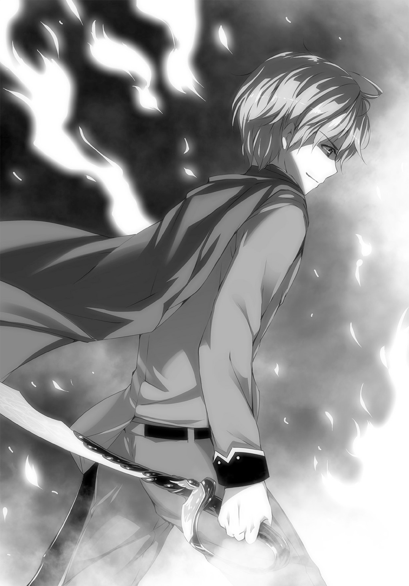
なぜなら、もう。
影が躍っている。
「リッシード......!?」
その場から一歩も動かずに火炎を切り抜けたあと、地面を蹴って走る。
避ければ避けられたのに、意味のない行為だった。意味のない行為だったか？ あんなのを斬れたじゃないか。ああ。
影が、躍り続けている。止まらない。
「いくぞ？」
さすがに戸惑っているらしいドラゴンのひざ元まで、ひと呼吸、ふた呼吸で間合いを詰めた。
嚙みついてくるのをかわしざま、岩のような右脚に肩がこすれるほどの距離を駆け抜ける。
直後、地龍が絶叫した。痛みは感じても、すねを骨まで断ち割られたことはわからなかったんだろうか。血まみれの左脚で巨体を支えようとし、もろくも失敗して倒れこむ。
だけどまだ、まだまだ死なない――いいね。
振り向くと同時に剣で弧を描き、用をなさなくなっている右の翼を斬り飛ばした。
『ギゥエオオオオオオッ!!』
もう痛みもどうでもいいんだろう。
右側に俺がいる、そのことだけを認識して、ニーズヘッグが動く。
全身をのたくらせてるだけだけど、巨体ゆえに速度はあった。こりゃ斬れない。
俺を殺すためだけに振るわれる牙を、首が伸びてくる分だけ退がってかわした。
影といっしょに、心も躍っている。さぁ、あと何回、どこをどうやって斬ろうか――
「リド！ やってッ！」
耳に届いたイニスの声で、刹那、まぶたの裏から人影が消えた。
目の前に、ニーズヘッグの顔面。瞬間的に剣の握りを戻す。
逆手から、順手――地面を蹴って飛び上がり、右手を伸ばして思いきり振り回した。
「うらあああああ！」
ガキンッ！
と叩きつけた剣が、ドラゴンの額で輝く赤光にあっさり跳ね返される。
斬れて、いない。
『ギャエエエエエ――』
「リ、リッシッ、逃げろぉーッ!?」
鎌首をもたげたニーズヘッグのあご下に、エレナの放った矢がこれまた跳ね返る。
声を聞くからに焦りすぎ、まともに矢が飛んでないけど、魔獣の気はそれたようで追撃が来なかった。ありがたく数歩跳びすさって、ふぅーと長く息をつく。
あの精霊核、ありえない手応えだった。
顕現した魔物のランクが上がると、精霊核の硬度も上がる、のか？ よくわからないけど、そんな感じなんだろう。まただ。また同じだ。
あの夜の、楽師の竪琴と同じ。順手で持った俺の剣じゃ、力不足で斬れやしない。
逆手にならないと。影を躍らせないと。
その結果、俺が――どうにかなってしまうとしても。
「......どうした？ 来ないのかよ」
グググ、とのどの奥を鳴らして俺をにらんでいる、ニーズヘッグとの距離。
首では詰めきれず、火を吐くには近く、つまり今こいつは尾を振り抜きたくてしょうがないはずだろうに。なにを考えてる――ああ、そうか。
見切ったつもりなのか。さっきの一撃で、『こいつじゃオレを殺せない』って。
脚や翼は斬れても、本丸である精霊核は砕けない。だから仕掛けず、俺が動いて隙を見せるのを待ってるってか。バカのくせしてやるじゃないか。
「この世で護るべきもの......、あれ。......なんだったっけか」
腰を落として、わずかに半身。剣は再び逆手持ち。刃ではなく牙と見る。集中しろ。
身を捨ててでも接近し、たとえ肉を切らせることになろうと、敵に喰らいつくんだ。
そのかわり、えぐりとるのは骨まで一気に。そうできるだけの力はある。
この、剣、には。
――リドくん
テトリアの声が聞こえた気がする。
不思議だ。訓練や、あの村のときとは違う。
すでにニーズヘッグを背景の一部と見、五感すべてを真っ平らななにかに向けている自分の脳裏には、またあの影が――きっと父親であるはずの、暗い人影が躍ってるっていうのに。
『リドくんの記憶、きっと思い出させてあげるから！』
影の動きも、なんだか期待してたのと違うぞ。剣を振ってない。おかしいな。
『キリがないから』
影の動きを見れないと。影に動いてもらえないと、うまくできない。
今までずっとそうやって、斬れないはずのものを斬ってきたんだ！
でも影は、剣を持ってすらいなくて......これは。揺れてる？
馬？
『死なないの。死ねないの』
影が右手をあげた。
なにかを指さして――なんだ？ わからない。まるい。
まるい。まるくて。
まるくて、とがる。
『似た者同士ってわけかな？ あたしたち』
なんだっけ。それは、なんだったっけ。
――この世で護るべきもの、みっつ？
ひとつも思い出せない。
『グァエエエエエエエエッ!!』
気づけばふらふらと前へ進み、ニーズヘッグが嚙みつける距離にいた。
本能を抑えきれなかったらしい大口が、血でギラつく大牙が、まっすぐに向かってくる。
自分の右手に。間合いをずらす足に。
あの影が宿っていることを、どうしてか知った。
「――ッだ!!」
ひと振り。続いてもうひと振りで、斬り飛ばす。
魔獣が、斬られるはずなどないと思いこんでいる物。
俺を貫くはずだった上あごと下あごの牙が、高々と宙に舞う。
ニーズヘッグが痛みに気づくより速く、平たくなった下あごに足をかけ、俺は力の限り跳び上がった。折れた左手も剣に添え、悲鳴すらなく見上げる魔獣に向かって、ただ落ちる。
まぶたの裏の影も、いつしか剣を握っていた。
「ぜああああああッ!!」
赤く輝く光の中心を、深々と貫き通す。
なにかの脈動が、その瞬間、止まった。
足の下、ニーズヘッグの顔面が、大きく波打った気がして――またたくまに白い光と化し、スレイガドロスの根元へと集束する。全身も続き、視界が輝きに満ちた。
「やった......」
倒せた。手応えあり。倒せちまった。勝った。勝てた。勝ってしまった。え。
終わり？ ――ちょっと待てよ。
死んじまうのか？ もうなのか!? 影が剣を持ったんだ！ いつもとは違う感じなんだ！ もっと斬って、続けて斬って、斬って斬って斬って斬らないと。殺っちまったのか？ 違うよな、もっと斬るとこあったじゃないか。今剣を抜くから、抜くってのに、ああ。光が。
消えて。
「......っぐ」
「リ、リド！ 違うあのそのリッシード、大丈夫かあー!?」
どうにか足から着地した俺に、ドカドカと騎馬が近づいてくる。
馬から下りる女を見つめた。大きい女と、小さい女。小さいほうはぐったりしてる。
敵か。いや違う。違うのは、わかってるけど。
まぶたの裏で、人影がぼやけていく。
あんなに動いてたのに、止まっちまってる。あのときといっしょだ、あの村のときと。どうしたら、また動いてくれるんだ？ なにかを斬れば、動くんじゃないのか？
なんでもいいから、なにかを。
「ニーズヘッグは、た、倒したのか!? なにもかも消えてるぞ、一体どうなって......おい、リッシード？ どうした。まさかどこかケガしたのか!? いやケガはしてるな、たくさんしてるな、すぐ手当てしてやるから剣はもう――」
なにかを――
「リド、くん......」
ビクッ！ と右手に生まれた震えが、そのまま全身を駆け抜けた。
「リドくん......こっ、ち」
聖剣が震えたようにも思える。いや、そんなわけない。そんな理由もない。これは斬るためだけに生まれた道具だ。仮によろこびを感じるとしても、そのことだけに違いない。
だから、震えているのは俺。
少女に手を差し伸べられて、次の言葉を待っている、俺自身だ。
「こっち、きて......」
「......テト......リア」
「治して、あげるね」
俺は確かに、全身傷だらけだから。左腕だって、思い出したように痛いし。
だから彼女が、俺の何を治そうと言ってくれてるのか、正しくはわからなかった。
けど、同じくらい傷だらけな彼女に、にっこり笑いかけられて。
自分が自然とその名を口にできた、そんなことにとてつもなくほっとして。
「リ......リッシード、おいっ!? 結局倒れるのか、なんだそれ！ おい誰か、医者を！ 医者を呼べえ！ ダメだしまった医者も倒れてる!? ど、どうすれば！」
「リドさん！」
「リド......！ お師様ぁ！」
唐突に生まれたかしましさの中、頰に冷たい土を感じつつ目を閉じる。
長い朝が、ようやく終わりを告げた。
【エピローグ 護りたいもの】
幸いにも、テトリアの傷は深くなかった。
本人いわく、「ちょっと内臓やられたくらいだと思う」だそうで。......深いな。深いよなそれは。でもあのまま山で休憩し、エレナがわざわざメセトワへ戻って運んできてくれた昼食を食べ、日暮れ前には自力で歩いて街まで戻ったんだから。わかってても信じられない。
むしろアニスのほうがひどかった。ニーズヘッグに暴食された手術室を維持するのは相当キツかったらしく、高原のまんなかでずーっと眠りこけてた。帰るときにも目を覚まさず、テトリアに左腕を治してもらった俺といっしょの馬に乗ることになったわけだが――案の定、妙な気を回したイニスが俺の後ろに乗りこんでくるし。フフン、馬が哀れなのはともかく、愚かなやつだ。二種類のおっぱいに挟まれて凱旋なんて、最高の栄誉以外の何ものでもないのに！
それでも疲労の色は濃く、俺たちはエレナが手配してくれた宿で、一晩泥のように眠った。
ここ十日ほどの間で、ずいぶん慣れ親しんでしまったメセトワの、朝の空気の中。
「どこ行くの？」
誰もいないはずだと油断しきっていた俺は、突然の声に逃げることもできなかった。
たった今出てきた宿の玄関脇に、テトリアがちょこんとしゃがみこんでいる。
み、見えてなかった、小さすぎて。アニスが選んだっていうフリフリ付きのゆるゆる寝間着でしゃがんでるもんだから、もうちょっとでぱんつが。い、いやダメだダメだ！ 見るな！
この期に及んでそんなの見ちゃったら、未練がつのることこの上なしってもんだ。
「ちょっと......散歩に」
「荷物ぜんぶ持って？」
「ト、トレーニングも兼ねて。これは重しで」
「あたしがかわりになってあげよっか？ おぶって走ったら、ちょうどいい重さかもよ」
「おぶ!? テ、テトリアを......!?」
そりゃなにか。あのおっぱいが、背中にむにゅってなるってことか!? その状態で走る!? 押しつけられる!? どんな誘惑だよクソッ、この子は天使なのか悪魔なのか！
じゃなくて。こりゃもう、言い逃れ不可能かな。
「......いや。世話になったよ、短い間だったけど。って感じかな」
「ミザネラに怒られるよ？ 患者が医者に黙って退院なんて、って」
「テトリアもやってたじゃんか」
「そだね。あたしはまぁ、あーゆー理由だったわけだけど。リドくんは？ どんな理由？」
ぎゅ、と背負い袋のひもを握りしめる。なんか、こう。思ったよりつらいなこれ。
「やっぱり、ほら......俺みたいなのは、場違いかなーって。テトリアとも、アニスやイニスたちとも、なんか違うしさ。このままいても迷惑かけると......」
「ウソつき」
「ぐ」
「あたしの剣になるとか言ったくせに。胸張ってカッコつけて宣言したくせに」
「だっ、あ、あれはだから......俺が空気読めてなかったっつーか......！」
立ち上がったテトリアは、じっとりと半眼で俺を見ている。
言葉ほど責める空気じゃない。どこか俺に、もっと言い訳しろとでも言うかのような。
言い訳。......ひょっとしたら、それ以下の戯れ言かもしれないけど。
「もうちょっと......やれると思ってたんだ」
これが俺の本音であることには、まぁ、違いない。
「お師匠さんに習ったハズバドル剣術で、もっと戦えると思ってた。でも、やっぱダメだ。甘かったよ......俺じゃぜんぜん、力が足りない」
「ニーズヘッグを倒したのに？」
「あれは逆手の力だから」
「......？ リドくんの力でしょ？」
「いいや。エレナがちょっと、言ってただろ？ 俺は逆手の剣で勇者になったんだよ」
テトリアが細い眉をひそめた。俺の言葉の意味がわからないんだろう。
ちゃんと説明して、理解してもらって、そしてここで別れよう。
「魔物の群れに襲われた、北の村......あそこで初めて、俺、逆手で生き物を斬ったんだ」
「え......？」
「人影の話しただろ？ 夢に出てくる――たぶん俺の親父。あれさ、剣を逆さに持ったら、起きてる間でも出てくるんだよ。こう、目の裏側っつーか......うまく言えないけど。夢と違ってあんまり動かなくて、一回剣振ったら消えちまうんだ。まるで切削杖の刃みたいに。でもそれで十分だった！ エレナだろうが誰だろうが、逆手で一回振りゃあ俺が勝った。勝てなかったのはお師匠さんだけなんだ。お師匠さんはほんとスゲーんだ！」
でも、と俺はスレイガドロスに目をやる。
この世のなにものをも斬り裂く、片刃の聖剣。
「あの村じゃ......影は止まらなかった。逆手で何十匹も、何百匹も斬った。影の通りに動いてるだけで、どんどん魔物が死んでいって......そうするうちに、俺は......」
あの女の子まで、斬りたいと思った。
極限状態だった。だからだと思ってた。あの九日間をもう一度やれって言われてもムリだ、体中ズタボロで一日半寝たもんな。そんなだったから、一時的に頭が変になったんだ、って。
でも、昨日。俺はどうしようとした？
テトリアのこともわからなくなって。それで一体どうしようとした!?
「君の剣に、なりたかったけど。どうも俺は、諸刃のなんとやらみたいで......いつかテトリアたちを傷つけないとも限らないし。そんなの、俺だって嫌だからさ。だから」
「あたしじゃ治せないってゆーのね!?」
え。
「い、いや。別にそーゆー話じゃなくて」
あれ。テトリアがぶんむくれてる。ほっぺたぷくーってなってる。かわいい。
ほ、ほのかにしんみりした雰囲気で、「グッバイ仔猫ちゃん」「待って最後に抱いて」ってまぁそこまで都合よく妄想してたわけじゃないけど。この展開も予想外だぞ。
「こんな朝からこそこそと！ 人のこと信用してないの、リドくんのほうなんじゃないの!?」
「だ、黙って行ったほうが奥ゆかしいかなって。テトリアのことは信じてるよ、もちろん」
「ウソね。治せないって思ってるね。そもそも不死のあたしをどう傷つけるって!?」
あ。そっか、不死設定忘れてた。いやだからって。
「んもぉー怒った！ 思い知らせたげるもん、いいっ!? あたしがもし、あの患者をばっちり治せたら！ ぜんぶ信用してなにもかもまかせなさい！」
ビシッと人差し指を突きつけてくるテトリア。すごい勢いだけど、とりあえず、
「あの患者、って......誰？」
「決まってるじゃない。朝のうちに捕まえてきてよね」
俺が!? と意表をつかれるも、テトリアはただ、にぃーっと笑うばかりだった。
＊＊＊＊＊＊＊＊＊＊
それからいかほども経たない早朝。いつもの空き地のまんなかで、
「逃げないと言ってるだろうがぁー!?」
寝台に寝かせられたエレナが、泣き声に近い悲鳴をあげた。
手足のみならず、全身を縛り倒されたイモ虫のごとき有様。はいまた俺がやりました。
「反省したから！ ずっと逃げてて悪かった、まことに申し訳ない！ だから縄だけは!?」
「だいじょぶだいじょぶ。縛ったままでも、口さえ見えてればできるよ？ 虫歯治療だもん」
「なぜだっ!? 謝ってるだろう!? 心から反省しているんだ！ このような醜態をさらさせるなど、騎士の心を慮られよ！ 慈悲を！ 精霊医殿！」
「あたしね」
微笑みをたたえたテトリアが、寝台の端に腰掛ける。
女性特有のプレッシャー、静かで笑顔で不気味なオーラ――一晩しっかり休息して、完璧に普段の調子を取り戻したみたいだ。さすがに察して黙りこむエレナに、彼女はひとこと。
「超痛かったの」
「......。はい......ごめんなさい......」
「安心して？ たぶんモンスター出るけど、まさかニーズヘッグじゃないだろうし」
「それは、そ、そうでないと困る！ あんなものが、こんな街中に出たら！」
「そうだね、困るね。じゃ、話してくれるよね？ 虫歯になったと思う原因を。つぶさに」
「......うぐぅ」
えらく真っ赤な顔で沈黙するエレナに、せめてもの情けだろう、テトリアが耳を寄せる。
だからそんなの、細身に見合わない暴飲暴食菓子まみれの産物だろ？ すっげー食欲に溢れたモンスターが出たりしてなー。......ニーズヘッグじゃねーか。い、いやいやまさかね！
もしまたあんなのが出てきたら、とても倒しきれる自信はないけど。
でも、あのとき確かに、いつもの影と様子が違ってた。なにかを、言ってた？
「まるくて......まるくて、なんだったっけか」
わからん。忘れた。というか記憶に集中できない。
耳打ちするエレナの告白を聞いているテトリアの表情が、どんどんおかしくなっていくもんで――なんだ？ ほっぺたふくらませて。笑いたいけど笑わないように必死っていうか。顔のデッサン崩れてるぞ、おっぱいも震えてるから見てて愉しいけど。
「なっ......なぁーるほどねぇー。それでヤケ食いを......」
「しっ、しーっ!? 後生だ精霊医殿！ 頼むから誰にも......！」
「わかってるわかってる、言わないよ！ 好都合だしね、またリドくんが狙われそうだから」
はい!? また俺!? なにそれどーゆーこと!?
詳しく問い詰めようとしたけど、ちょうどアニスから手術室準備完了の声がかかる。さっき目覚めたばかりで、まだ十分疲れもとれてない様子なのに、まったく頭が下がるぜ。
先日、妙な形で途切れた診察ということで、ちらほらと野次馬も集まってくる中。
「喰らえ！ 喰らえ！」
テトリアの復活一回目となる、精霊医術がはじまった。
「【疵】を喰らって天へ翔べ！ 其は転換、ルーテルワのナノワクトー！」
エレナのほっぺにぴたりと取りついた、えらく愉快な格好のナノワクトが、真っ白く光り輝き――やはりそのまま、瞳を赤く染めた。こんなかわいい状況でもモンスター化するのな。
そりゃそうか、と苦笑して、俺はスレイガドロスに手を添えた。
......手を、添えた？ いやまて、テトリアたちとは別れるつもりだったんじゃないのか。彼女の剣になる約束を反故にして。でももしこれ、危険なモンスターが出たら。いや。だって。
「牽引」
ぐらぐらに揺らぐ俺をよそに、いつもの冷静な声音で、イニスが手術室に精霊を搬入した。
テトリアがこっちを見て、小さくウィンクする。彼女はそのまま、青い壁を踏み越え――
『バカァ―――ッ！』
ようとしたところで、思いきりたたらを踏んだ。
結界の向こう。えらく迅速に顕現した魔物が、ぴよぴよと飛び回っている。以前も現れた、ピクシーの亜種――いや、これは違うか。純粋なピクシーだ。
エルフがつくったようなひらひら付きの、かわいい服を着た女の子モンスター。トンボによく似た羽を震わせ、どうしてかまっすぐに俺をにらみながら、キンキンした金切り声で叫ぶ。
『リドのバカ！ バカリド！ なんでわたしに黙ってどっか行っちゃうのよ！ ひどいひどいひどいじゃないっ！』
「......は？」
『あんなに何度も熱く激しくぶつかり合った仲なのに！ 二人の蜜月はもう戻らないの!? わたしは誰を目指せばいいのよぅ！』
なんだこれは。えらいしゃべるな。ていうか、なにを言ってんだ？
テトリアと顔を見合わせるも、彼女はふっくらした頰を染め上げ、再び笑いをこらえているかのようにぷるぷる震えていた。じ......状況の意味がわからん。
『そんな乳ばっかりでっかい女二匹も三匹も連れ回して！ 変態だけどそんな男だと思わなかった！ もう知らない！ でも許したげる！ だから早く、早くわたしともう一度剣を――』
「うあああああああああッ！」
ずばー、とこれまた一刀両断。
寝台から一足飛びで手術室に突っこみ、エレナが妖精を光と化した。というか、いつのまに縄を......油断した。そのナイフ一体どこに持ってたんだ。
いろんな意味できょとんとする俺を、エレナは一瞬振り返り、
「っ......ま、また会おう！」
よくわからない宣言をかまして、脱兎のごとく駆けだしていった。
イニスはきょとんとしている。アニスは立ったまま寝かけている。テトリアは笑いをこらえきれず、口の端からぷすぷす空気を漏らしている。
「......何なんだ？」
「まっ......まぁ、ね！ 気持ちはわかるよ！ リドくんカッコよかったし！」
「？ な、なんだよ急に......!? まだ調子悪いのか？」
別にぃー、と笑って、テトリアはローブを正した。
どうやら本当に、エレナの治療は終わりらしい。......も、もやもやするなぁ!? 何がどうとは言わないけど、言えないけどこう、なんだ!? 俺ひょっとしてピクシーと相性悪い!?
「さて。あたしのこと、信じてくれるってことでいいね？」
「むしろテトリアはそれでいいのか？ 今のでいいのかほんとに？」
「あはは、もちろん。だって読み通りだもん。今のはあたし、なんにも間違えなかったよ！」
「ほ、ほんとかぁー......？」
そう言いつつも、笑みがこぼれる。いいのか。いっしょにいても。本当に、ああ。
強くなりたい。
「そうと決まったら、さっそくひと働きするよ」
「へ？」
「このまま終わったら、患者さんたちも不安になっちゃうだろうしね」
ぞろぞろと、空き地に向かってできつつある行列を眺めて、テトリアが笑った。
「メセトワを救うのはこれからだよ。今日から本番！ 覚悟はいいよね？」
金色の瞳に見つめられ、すぐには反応できなかった。
ただ頷けばいいものを。ほっとして、うれしくて、泣いてしまいそうにまでなるなんて。
さんざんだな。
「......もちろん」
「うん。さぁ、忙しくなるよ！」
腰のスレイガドロスが、ちりっと鳴った気がした。
了
あ と が き
どうも、神秋です。夏でもあまりアイスを食べる習慣がない、そんなサッカー少年でした。
冷蔵庫にあって、親に食べろって言われたときには食べてたんですけどね。あまり常備もしていない、珍しいかもしれないタイプの家で。
自分も、甘いもの自体は昔から好きだったんですけど、とりたててアイスに関心があるわけでなく、夏はもっぱら冷えた麦茶でフィーバーしてました。いやぁ、あのころは我ながら、なかなかの健康優良児だったなぁ。
今はアイスとか大好きですね。
言ってもそんなに食べる頻度が高いわけではないですが、親しみやすい甘さっていうのは大人になってからでもたまらんもんですな。モナカ系もいいですけどカップ系が特に好きです。味は抹茶が好きなんですけど、バニラもやっぱりおいしいですね。
ただ、運動不足なので太りまくるのと、虫歯が心配なところです。
かつてはサッカー少年であっても、今じゃ野球好きのオッサンですから......昔から、見るのは野球のほうが好きだったんですけどね。そういう問題じゃないですか、そうですか。
さらに今、間の悪いことに風邪を長患いしてしまってまして。ウイルスさんが「もののついで！」とばかりに歯まで痛くしてくれちゃってるんですよね。以前治療してもらった部分が痛んだりして、朝晩の歯磨きがつらいのなんの。
もう一回診てもらいたいなーって思っても、咳が止まらないと歯医者さんって行きづらいですし。やだつらい。神秋ってば今とってもつらい！
というわけで、この精霊医のお話を思いついたのは、虫歯がきっかけであります。
自分の歯がどう、というわけではないのですが......なんというか、ライトノベルにおける異世界ファンタジーって、やはり中世ヨーロッパの要素を取り入れさせてもらってるところが大きいんですよね。街並み然り、風俗然り。もちろんあれこれ調整はしますけど。
でも、当時の歯医者さんって、どうやらすごかったようなのですよ。
とりあえず力技。
悪い歯があればあるだけ抜く。
痛くない抜歯？ ムリムリ何言ってんの。的な。
抜歯を謳う集団が、医者と助手などではなく、医者と踊り子の芸人集団なんてことも多かったみたいですね。踊りや音楽で患者を楽しい気分にさせて、ついでに響き渡る悲鳴を音楽でかき消して、すばやく歯を抜いてしまう、というような。こわーい。
他にも、焼けた鉄を歯につっこむですとか。
象牙で入れ歯をつくるですとか。
古くはエジプトのミイラの歯にも治療の跡が見られるですとか。
良きにつけ悪しきにつけ、とかくリアルはすごいわけですけども。じゃあ、異世界って虫歯をどうしてるんだろう？ ってふと思いまして。
力まかせに抜くのもアリでしょう、かわいい女の子が抜歯屋さんだったりして。
魔法でパーッと治すのもアリでしょう、ホ●ミですとかケ●ルですとか。
じゃあ、かわいい女の子がかわいい精霊を使って、かわいく治してくれるなら！
それはとても、とてもステキなお医者さんの話になるんじゃないかしら！
と、そんな感じで考えてたところから、「かわいく治す」という部分だけおかしな風に変えたのがこの作品です。ヘマやるとモンスターが出る、めっちゃヘマやるとめっちゃヤバいモンスターが出る。主人公にはいろいろあって、おまけにヒロインにまでいろいろある。剣あり魔法ありおっぱいあり、国と誇りとおっぱいあり！
根っからファンタジーの医者ものラノベ、お楽しみいただけましたら幸いです。
さて。
スーパーダッシュ文庫時代からお世話になっている自分ですが、ダッシュエックス文庫となってからは初の本なので、初のお礼タイム。
イラストを担当してくださいましたみけおうさん、ありがとうございます。テトリアのベルト、本当にすばらしいです。この子がもっと花開くお話をがんばって考えます。毎度ご面倒ばかりおかけしております担当編集さん。お世話になっております専門学校の方々。お酒を飲んではアホな話を聞いてもらっているＳ先生はじめ友人知人諸氏。そして、この一冊を手にとってくださいました読者の皆様方。
まことにありがとうございます。テトリアのかわいさが、アニスのエロさが、イニスの（褐色肌にかける作者の一方的な）愛しさが、リッシードのカッコよさを覆い尽くす変態さが、少しでも楽しいかたちで伝わっていればうれしいです。
またがんばって本を書きますね。
ではでは。神秋でした。
神 秋 昌 史
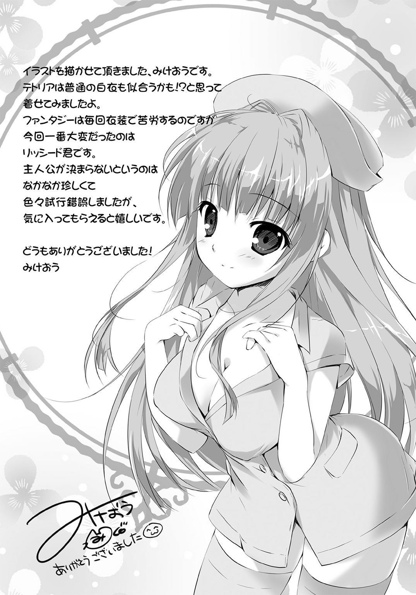
著者紹介
神秋昌史 かみあき まさふみ
兵庫出身大阪在住、30歳。体にはあちこちガタがきています。
お医者にかかるならできれば女医さん、できれば美人、あわよくば美少女......なんて、現実にいるかは知りませんけど。
「間違えちー」が聞こえたら、全力で逃げようと思います。
illustration
みけおう
北海道出身、今は札幌在住のイラストレーターです。
夏の北海道は本当に最高なのですが、毎年家に引きこもって絵ばっかり描いてます。
庭に植えてる野菜たちに水やりするのがささやかな楽しみです。
公式サイト『PINK CHUCHU』
http://www2.odn.ne.jp/~cai16580/
ダッシュエックス文庫DIGITAL
精霊医は勇者の変態を癒せるのか!?
著者 神秋昌史
© MASAFUMI KAMIAKI 2015
２０１５年９月30日発行
この電子書籍は、ダッシュエックス文庫「精霊医は勇者の変態を癒せるのか!?」
２０１５年８月30日発行の第１刷を底本としています。
発行者 鈴木晴彦
発行所 株式会社 集英社
〒１０１－８０５０
東京都千代田区一ツ橋２丁目５番10号
０３－３２３０－６０８０（読者係）
制作所 株式会社ＩＣＥ
本作品の全部また一部を無断で複製、転載、改竄、インターネット上に掲載すること、および有償無償に関わらず、本データを第三者に譲渡することを禁じます。なお個人利用の目的であっても、コピーガードを解除しての複製は、法律で禁じられています。